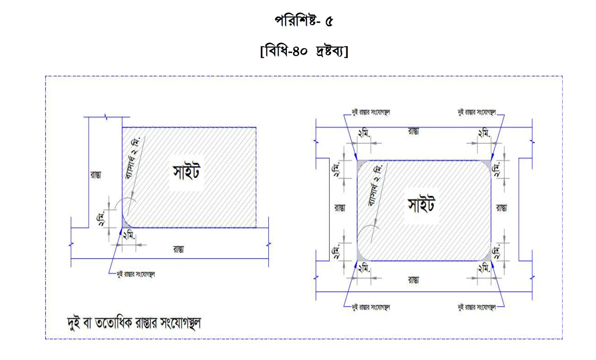
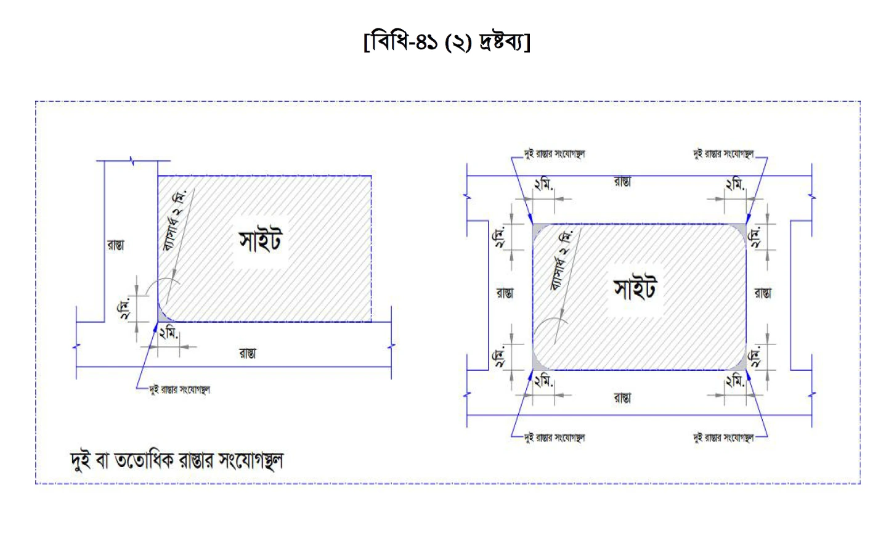
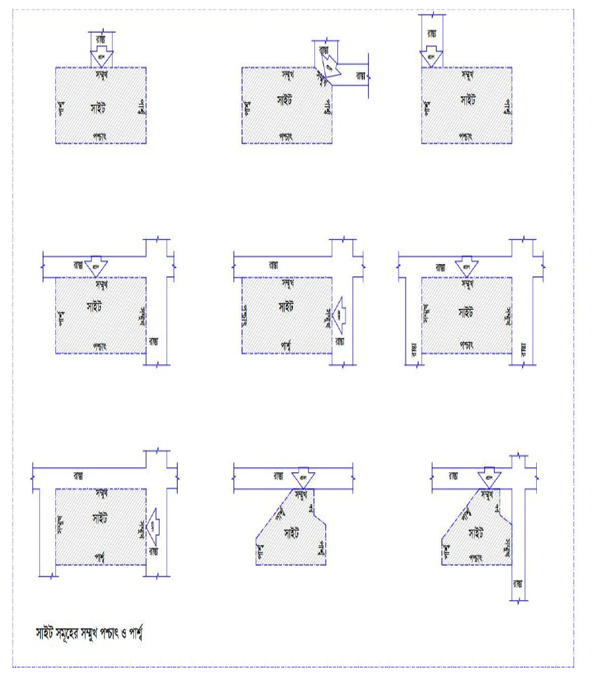
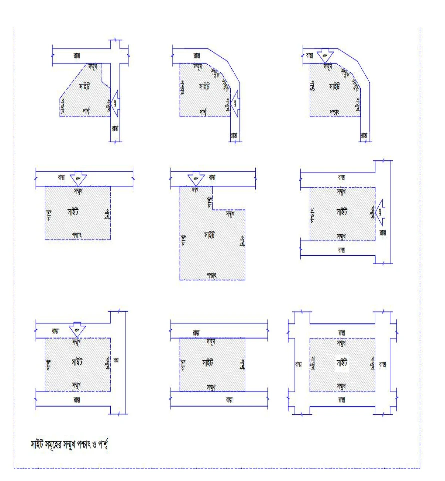
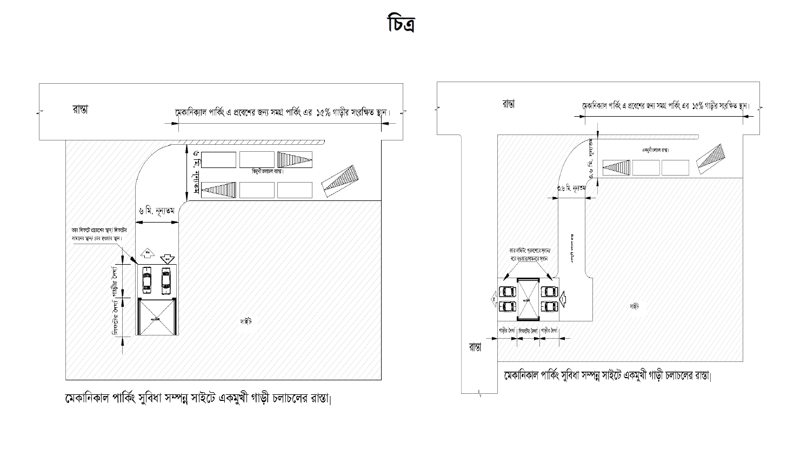
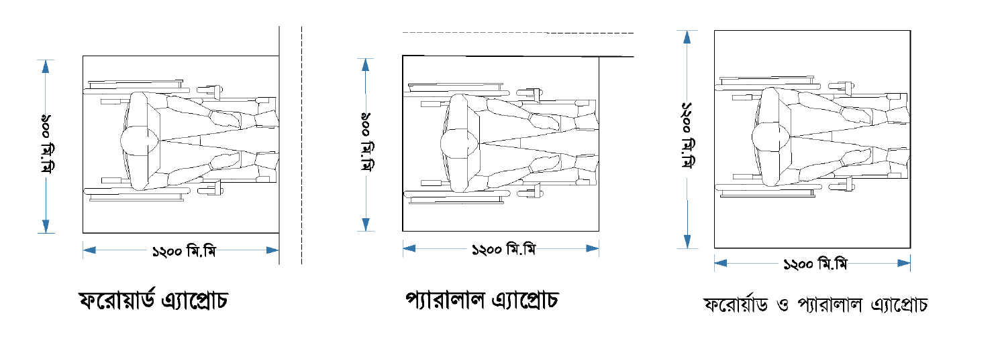
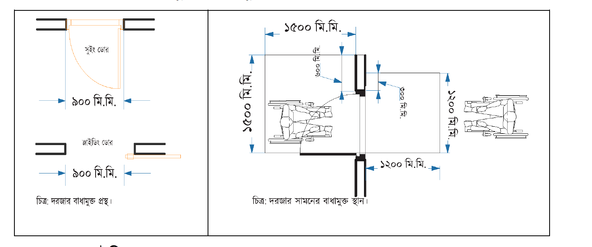
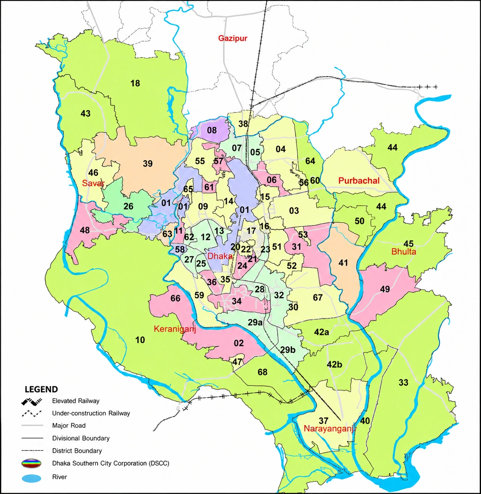

Definitions
Rules 1 & 2What this Bidhimala is called and where it applies, followed by every defined term used throughout the rules — e.g. what counts as 'covered area', a 'fire-safe staircase', or 'universal design'.
Rule 1 — Title and Applicability
(1) These rules shall be called the Dhaka Metropolitan Building Construction Rules, 2025.
(2) They shall apply to the area covered by the Master Plan of the Dhaka Metropolis under the Town Improvement Act, 1953 (Act No. XIII of 1953).
Rule 2 — Definitions (119 terms)
Planning Approval
Rules 3–8 (intro–approval stages)The first of the three approval stages — Planning Permit, Construction Permit, Occupancy Certificate. Covers what documents an application needs, how it is approved, rejected or cancelled, the appeal route, and how long the certificate stays valid.
Rule 3 — Procedure for Approval of Planning, Building Construction and Habitability
Procedure for Approval of Planning, Building Construction and Habitability
Under these rules, approval of planning, building construction, its drawings, and habitability shall be completed in the following stages:
- Planning Permit;
- Construction Permit; and
- Occupancy Certificate.
An applicant may apply on these matters either personally or through their representative. All applications for, and disposal of, the above approvals or certificates must be carried out by electronic or digital means.
Rule 4 — Application for Planning Approval Certificate
Application for Planning Approval Certificate
Before submitting an application for construction approval, an applicant wishing to construct a building on any land within the authority's jurisdiction must first apply to the authority to obtain planning approval. The application must be accompanied by the following documents:
- the national ID of the applicant and, as applicable, the owner of the land or building to be used for the proposed development; up-to-date land development tax receipts; the deed; the latest mutation record (khatian); and, where applicable, original or certified copies of other relevant papers;
- a certificate of proof of fee payment as specified in Schedule 4;
- a site plan/drawing at a suitable scale (e.g. 1:1980, 1:792) with a minimum of four coordinate values, in a measurable format (DWG, PDF, JPEG), together with photographs of the land and the adjoining road (JPEG format);
- where the application is filed by the applicant's representative, a certificate authorising the appointment of that representative.
In addition, in special cases — land exceeding 5 acres for an apartment complex or real estate development project, block-based development, or special buildings — the following documents must also be submitted:
- the final possession certificate issued by the relevant housing company for an approved private residential project area under the Private Residential Land Development Rules, 2004, and, where applicable, a plot-consolidation certificate;
- a layout plan in PDF format showing civic amenities, in accordance with the Private Residential Land Development Rules, 2004;
- a planning report including a concept plan;
- a site plan at 1:1980 scale;
- a planning report, prepared and signed by a planner, addressing projected population, urban planning context, surrounding conditions, the proposed project's compatibility with the existing communication network, and consistency with policy and other applicable rules;
- where applicable, a no-objection certificate (NOC) from the Deputy Commissioner regarding land ownership;
- where applicable, an NOC from the Civil Aviation Authority, the relevant City Corporation or other local government authority, the Roads and Highways Department, the Bangladesh Inland Water Transport Authority, the Public Works Department, the National Housing Authority, or other relevant agency or ministry;
- where applicable, an environmental impact assessment report together with the Department of Environment's NOC and site clearance;
- where applicable, a traffic impact assessment report and the NOC of the Dhaka Transport Coordination Authority;
- where applicable, Traffic Impact Assessment (TIA) and Traffic Circulation clearance approved by the Dhaka Transport Coordination Authority; and
- where applicable, an NOC from the relevant ministry, department or institution regarding Key Point Installation (KPI) or heritage matters.
On receipt of an application, for plots within a planned Site & Services project area, the authority must obtain a no-objection regarding land ownership and the approved layout from RAJUK's or the National Housing Authority's Estate and Land wing.
Rule 5 — General Conditions for Planning Approval
General Conditions for Planning Approval
For planning approval of a building of any occupancy type, the minimum FAR specified in Table 5 for that occupancy type shall be considered, subject to that minimum-FAR index, based solely on the width of the existing road.
For approval of special building construction, the Building Construction Committee may impose conditions in addition to those imposed by the authority in the planning approval, provided such additional conditions do not conflict with the authority's conditions — though no condition imposed by the authority may be removed by a condition imposed by the Building Construction Committee.
Rule 6 — Approval, Rejection and Cancellation of Planning-Approval Applications
Approval, Rejection and Cancellation of Planning-Approval Applications
An application for planning approval shall be disposed of — by approval or rejection, subject to any necessary conditions, and based on the relevant Act, these rules and the Master Plan — within 30 working days of submission (45 working days for land exceeding 5 acres intended for an apartment complex, real estate project, block-based development, or special buildings).
Applications for planning approval are disposed of at the level of the authority's Town Planning branch / sub-Town Planner (or, for the larger projects above, at the level of the Town Planner or Chief Town Planner). If approved, a planning approval certificate is issued in the applicant's favour, subject to any reasonable conditions the authority considers necessary.
If there is a deficiency in the applicant's information, or additional information is required, the applicant must be informed; if no response is received within 30 days of such notice, the application may be rejected. An application to use land for a purpose other than that specified in the Master Plan may likewise be rejected even where other conditions are met.
A planning approval is not deemed permission for any development or construction work and confers no right to commence or carry out work. If the conditions of a planning approval certificate are violated, or false information regarding ownership is given, the certificate must be cancelled, with the building owner and all concerned parties informed. Cancellation of a planning approval automatically cancels the construction approval certificate and the occupancy/use certificate.
Rule 7 — Appeal Against Rejection of Planning Approval
Appeal Against Rejection of Planning Approval
Where an application for planning approval is rejected, the applicant may, within 30 days and subject to the fee in Schedule 4, appeal to the Chairman of the authority, who must decide within 30 days. A party aggrieved by that decision may, within 30 days and subject to the fee in Schedule 4, appeal further to the Government, which must decide within 60 days. A review of the Government's decision may be sought within 15 days, and the Government must dispose of the review within 30 days.
Rule 8 — Validity Period of Planning Approval Certificate
Validity Period of Planning Approval Certificate
For the purpose of submitting an application for drawing approval, a planning approval certificate is valid for 2 (two) years from the date of approval. Before expiry, the applicant may, subject to the fee in Schedule 4, apply for renewal; if the proposal remains consistent with the Master Plan and other relevant provisions, the authority may renew the certificate for one further year. If the certificate (or a renewal) has expired, planning approval must be obtained afresh.
Construction Approval
Rules 9–12The construction-approval application itself, the extra scrutiny applied to Special Buildings, and the technical person's (architect/engineer) duties when preparing and signing drawings.
Rule 9 — Application for Construction Approval Certificate
Application for Construction Approval Certificate
Any person, or any government, semi-government, private, or autonomous body wishing to construct a new building or structure, or to alter or extend an existing one, must apply to the authority for a construction approval certificate. The application must be accompanied by the following information, documents and drawings:
- the planning approval certificate;
- a technical-appointment letter: an agreement between the applicant and the technical person, on non-judicial stamp paper of Tk 300, jointly signed, and, where the applicant is an institution, the appointment letter of the technical person;
- the required drawings at the specified scale — architectural, structural, electrical, mechanical, and plumbing drawings prepared in accordance with the Code — for drawing approval;
- for applications by an individual or a private institution, an up-to-date income tax return acknowledgment slip;
- relevant information obtained from the online system regarding the planning approval certificate;
- an engineer's design report prepared in accordance with the Code; and
- an indemnity bond: for deep foundation, piling, basement, or underground floor construction work, an indemnity bond signed by the applicant in the form approved by the authority.
In addition, for special building construction, or where otherwise applicable, the following must also be submitted:
- the easement deed for land surrendered for road purposes;
- the fire-safety and firefighting drawing;
- a copy of the developer's registration with the authority;
- the easement deed;
- the NOC of the Fire Service and Civil Defence Department;
- the NOC of the relevant ministry, department, or institution regarding Key Point Installation (KPI) or heritage matters;
- the approval letter of the Cantonment Board, National Housing Authority, Public Works Department, Dhaka Mass Transit Company Limited, Civil Aviation Authority, or other relevant institution;
- any previously approved drawing, if applicable;
- for special buildings, a layout drawing at 1:100 scale, which must include:
- the measurements and boundaries of all sides of the site;
- where applicable, the boundaries of buildings situated on the site, the measurements of the buildings' external elements, their height, the number of floors, and the measurement of the mandatory open space;
- where applicable, the proposed and existing positions of buildings and structures on the site, the position of any pond or water body, gardens and other areas, low-lying land, open grassland, forest area, etc.;
- the names and widths of the surrounding area and roads;
- an indication of directions, taking into account the relationship of adjacent roads and their widths to the site and the plot's sides; the width of the road connecting to the site; and, in the case of a private or dedicated road, its total length and width;
- the position of gates on the entrance and exit paths from the road to the site, the position of drains surrounding any proposed or existing buildings, and the direction of drainage flow;
- the position of any underground water reservoir, septic tank, soak-pit, sewage treatment plant, and their connections to sewerage lines, if any;
- the position of the waste/garbage collection point within the site;
- at the time the planning approval certificate is granted together with the construction approval application: all approved conceptual drawings, satellite imagery, maps, and, where applicable, other agencies' NOCs and the planning report;
- for special buildings comprising multiple buildings, other structures, and installations: a master plan, linked to the planning approval certificate, showing all buildings or structures, the road layout, and all natural and constructed features on the land (such as trees, hills, ponds or water bodies, earth excavation or filling, etc.), together with boundaries and civic amenities;
- a floor plan at 1:100 scale for all floors of the building, including the basement and mezzanine floors, which must include:
- the position of doors and windows, with the measurement, size, position and use of all rooms and open spaces;
- the position and measurement of staircases, the lift core, ramps, and emergency exits;
- the roof's water-drainage system, terrace (if any), and, where applicable, the lift machine room, staircase roof, emergency exit, and any permanent roof water reservoir, together with a roof drawing showing the water-outflow path;
- where applicable, the entrance, exit, drop-off and driveway, and parking plan, showing the parking layout and the position of the security post;
- where applicable, the position of electrical and mechanical rooms; and
- where multiple buildings or structures exist within such a complex, the vehicular and pedestrian entrance paths, internal circulation roads, and arrangements for passenger drop-off and pick-up;
- an elevation drawing at 1:100 scale with the necessary measurements, including a minimum of two sections (longitudinal and cross), at least one of which must necessarily cut through a staircase; the cut drawing must show:
- including the mezzanine floor: where applicable, the height of each floor, the attic/loft, any roof-top water reservoir, the lift machine room (if any), the parapet height along the roof edge, and the building's maximum height in the context of the existing ground, road, and footpath levels;
- the measurements of various projecting elements extending from the wall (balconies, sunshades, etc.); and
- the present and proposed levels of the floor surface;
- an elevation drawing at 1:100 scale of the building showing its maximum height and the necessary measurements from all sides;
- a structural design drawing of the building at 1:100 scale, prepared in accordance with the Code, which must include:
- general notes and material specifications, together with seismic detailing and parameters, in accordance with the Code;
- a detailed foundation plan and section, and, where applicable, shore-protection and excavation design;
- the layout, schedule, and detailing of columns, shear walls, and retaining walls;
- beam layout and detailing;
- slab thickness with detailed reinforcement;
- staircase thickness with detailed reinforcement;
- plans and sections, with detailed reinforcement, for the septic tank and underground/overhead water tanks, to standard specifications;
- where applicable, detailing of expansion joints and seismic joints;
- detailing of ramps and the lift core; and
- a certificate signed by the engineer in accordance with the Code.
- the building's mechanical, electrical, plumbing (MEP), and fire-safety design drawings, prepared at a readable and appropriate scale in accordance with the Code, which must include:
- a detailed electrical or electro-mechanical drawing of the building or structure, in accordance with the policy set out in the Code;
- where applicable, a detailed plumbing drawing of the building or structure in accordance with the Code, including any sewage treatment plant;
- the fire-safety and firefighting drawing required under these rules or the Code, or, where applicable, a drawing approved by the Fire Service and Civil Defence Department;
- where applicable, air-conditioning, ventilation, and venting arrangements;
- where applicable, fire hydrant and fire-suppression arrangements;
- where applicable, fire detection, alarm, and emergency-egress arrangements;
- where applicable, electrical substation, generator, and solar-power arrangements;
- where applicable, earthing, lightning-protection, and power-supply arrangements;
- where applicable, water supply, sewerage, and sewage-treatment arrangements;
- where applicable, noise-control arrangements;
- where applicable, lift, escalator, and moving-walkway arrangements; and
- a certificate signed by the engineer in accordance with the Code.
- a design report, which must include:
- the site soil test report;
- a detailed design report with calculations, in accordance with the Code;
Rule 10 — Special Buildings
Special Buildings
The following are deemed 'special buildings' for the purposes of these rules:
- any building with a gross floor area exceeding 7,500 (seven thousand five hundred) square metres;
- any building with direct access to a national highway;
- any structure proposed at the junction of two or more main roads of 100 (one hundred) metres' width, as identified in the Master Plan;
- any construction or development within 250 (two hundred fifty) metres of an environmentally critical area declared by the Department of Environment;
- buildings involving brick kilns, or uses that are environmentally polluting or hazardous (Occupancy Group J), or health-care uses (Occupancy Group D);
- any construction or development within 250 (two hundred fifty) metres of the boundary wall of a Government-identified heritage building or structure;
- any construction or development within 150 (one hundred fifty) metres of a natural scenic area identified in the Master Plan (water-based park, flood-flow area, forest land, garden);
- any construction or development within 150 (one hundred fifty) metres of forest land, hilly terrain, or land visually identifiable as a hill, as identified in the Master Plan;
- any construction or development within 250 (two hundred fifty) metres of a riverbank;
- any shopping centre or mall with a gross floor area exceeding 5,000 (five thousand) square metres; and
- any structure whose particular characteristics mean the provisions of these rules cannot be directly applied to it for technological or environmental reasons, and which may create a special impact on the surrounding area.
No additional drawing approval need be obtained separately for a special building beyond the process set out below.
Rule 11 — Matters for Consideration in Approving Construction of Special Buildings
Matters for Consideration in Approving Construction of Special Buildings
In approving the construction of a special building, the Building Construction Committee must, alongside the drawings and reports submitted, consider the following and other relevant matters:
- whether the conditions of the planning approval certificate have been complied with, and whether any additional conditions are needed;
- for heritage buildings and areas of natural scenic beauty, the height, use, and compatibility of the proposed building with its surroundings and period of construction, and similar considerations;
- whether the proposed project is compatible with the surrounding area, in line with the planning report;
- whether the necessary civic amenities have been provided;
- whether adequate traffic-circulation arrangements have been made, given the increased vehicular congestion likely from assembly, commercial or similar uses;
- for riverbank or flood-prone areas, whether the project's location would obstruct the natural flow of floodwater, and whether, if implemented, it would increase floodwater height or velocity, or affect rainwater drainage;
- whether implementation of the project would create any adverse environmental effect, and if so, what remedial measures are required; and
- whether adequate utility supply is available for waste management.
Where a project has implications for national interest, carries special impact, or could adversely affect the environment, the authority must display all of the project's drawings at an easily visible location for 15 (fifteen) days for public viewing and comment.
If, after such display, any person considers that the project conflicts with the Act, these rules, or other existing law or rules, or that it would be harmful or dangerous to the public or the environment, that person shall, on application, be given the opportunity to review the project's drawings.
After the public display, the Building Construction Committee must take into account any opinions received from the public in deciding whether to approve or reject the application.
Rule 12 — Duties of the Technical Person Regarding Drawings
Duties of the Technical Person Regarding Drawings
The technical person appointed by the applicant and responsible for a drawing must sign it, or apply a digital signature, before it is submitted for construction approval. Such drawings must be submitted both in computer-aided drawing format and in JPEG or PDF format.
Every drawing submitted for construction approval must contain the following information:
- the title of the drawing;
- the memo number and date of the planning approval certificate;
- the applicant's full name, address, phone number, email, and printed or digital signature;
- the names, addresses, and phone numbers of the relevant technical persons, together with their professional-institution membership number and registration number;
- where the drawing is submitted by the applicant's representative: the name, address, phone number, and email of the owner of the plot or holding concerned, and the name of the road or street adjacent to the applied plot;
- the type of building construction and the proposed use, in accordance with the Code; and
- the thana and mouza in which the construction site is situated, and the CS khatian or SA khatian, RS khatian, and/or the plot number as recorded in the city survey, and, where applicable, the plot number.
Approval & Appeals
Rules 13–16How a building-construction application is approved, refused or cancelled; the appeal process against rejection; how long an approval letter stays valid; and the rules for modifying an already-approved drawing.
Rule 13 — Approval, Refusal and Cancellation of Application for Building Construction
Rule 13. Approval, refusal and cancellation of application for building approval.
(1) If any application for a building approval letter submitted to the Authority is considered incomplete or defective, the Authority shall, within 30 (thirty) days of receipt of the application, request the applicant in writing to submit the necessary information and documents.
(2) Within 30 (thirty) days of receiving the notice under sub-rule (1) requesting submission of necessary information and documents, the applicant shall submit the required information and documents to the Authority, and if he fails to submit the required information and documents within that time limit, the submitted application shall be deemed cancelled:
Provided that such a request for submission of information and documents shall not be made more than 2 (two) times.
(3) An application for approval or modification of the drawing for construction of any type of building or structure may be submitted in one or more stages.
(4) If the architectural, structural, electrical, plumbing and, where applicable, mechanical, traffic circulation plan, fire safety and evacuation drawings are submitted together, the Building Construction Committee shall dispose of the drawing by approval or rejection on the basis of its recommendation:
Provided that if, in the first instance, only the architectural drawing is submitted, excluding other drawings, and the architectural drawing is considered approvable by the Building Construction Committee, the Committee shall inform the applicant in writing within 30 (thirty) days from the date of submission of the architectural drawing, and shall at the same time request the applicant to submit, within 180 (one hundred eighty) days, the structural, electrical, plumbing and, where applicable, mechanical, traffic circulation plan, fire safety and evacuation drawings.
(5) If the structural drawing is inconsistent with the architectural drawing, the Building Construction Committee shall request the applicant to submit the necessary amendment within 180 (one hundred eighty) days, and if the necessary amendment is not submitted within that time, the application shall stand automatically cancelled.
(6) Even where the architectural drawing is considered approvable, if the structural, electrical and plumbing drawings are not submitted within 180 (one hundred eighty) days, the building approval application shall stand automatically cancelled.
(7) Building construction work shall not be commenced before approval of all drawings.
(8) The Building Construction Committee shall, within 45 (forty-five) days of receiving all drawings, recommend approval or refusal.
(9) If the application for a building approval letter receives a recommendation, the building approval fee shall be deposited as per Schedule 4, and after depositing the said fee, the Building Construction Committee shall sign the approved drawing.
(10) If any application for a building approval letter is rejected, the Authorized Officer shall, without collecting the building approval fee, send the applicant a letter of rejection stating the specific provision and reason under the Act, this Bidhimala, the Code, or other applicable law and rules.
Rule 14 — Appeal Against Rejection of Application for Building Construction
Rule 14. Appeal against rejection of application for building approval.
(1) If any application for building approval is rejected, the applicant may, within 30 (thirty) days of being so rejected, subject to payment of the fee described in Schedule 4, submit an appeal application to the Appeal Committee.
(2) On receipt of any appeal application under sub-rule (1), the Appeal Committee shall, subject to the provisions of sub-rules (3) and (4), take a decision on the appeal application within 30 (thirty) days.
(3) In disposing of an appeal under sub-rule (2), the Appeal Committee may, for legal clarity and a more authoritative decision, refer the matter to the Nagar Unnayan (Urban Development) Committee.
(4) Notwithstanding anything contained in sub-rule (2), if the Nagar Unnayan Committee receives any application under sub-rule (3), it shall give its recommendation within 45 (forty-five) days, and the Authority shall take action in the light of the recommendation of the Nagar Unnayan Committee.
(5) On appeal of a building-approval application —
- if rejected, the applicant shall be informed of the matter in writing; or
- if approved, the concerned Authorized Officer shall, following sub-rule (9) of Rule 13, send the approved drawing together with the approval letter to the applicant.
Rule 15 — Validity Period of the Building Approval Letter
Rule 15. Validity period of the building approval letter.
(1) The validity period of a building or structure construction approval letter granted under Rule 13, or as the case may be, Rule 14, shall be 3 (three) years, and within such period construction up to at least the plinth level of the building must be completed.
(2) If the applicant fails to take action as required by sub-rule (1), he shall obtain a fresh building approval letter anew.
Rule 16 — Modification of Approved Drawing
Rule 16. Modification of approved drawing.
(1) For both buildings constructed and buildings under construction before promulgation of this Bidhimala, keeping the total floor area, including the floor area of each floor, and the outer dimensions of the drawing (length × width × height) unchanged within the approved measurements, internal changes or modifications may be made according to the Bidhimala under which the drawing of the building was approved.
(2) In respect of a drawing approved under this Bidhimala, fresh approval shall not be required only in the case of internal re-planning, where there is no change in the total mezzanine [floor] area, FAR, number of housing units, structural drawing, extent of ground coverage, outer perimeter, and the vertical circulation system or the positional location of the path.
(3) If the change in room height is within 20 (twenty) centimetres, no fresh approval shall be required, unless other obligations relating to height are applicable.
(4) If any modification of the approved drawing is required within the validity period of the building approval letter, the applicant shall submit the application attaching the modified drawing together with the approved drawing.
(5) If the floor area increases on account of modification of the drawing, the fee shall be paid as per Schedule 4.
(6) If, before re-approval of the modified drawing, construction work on the modified portion of the building has already been completed, and such change is approvable under this Bidhimala, the building approval letter shall be obtained afresh upon payment of ten times the building approval fee described in Schedule 4, together with payment of the penalty fixed under the Building Construction Act, 1952.
Construction & Safety
Rules 17–21Responsibilities of the applicant, technical person and contractor during construction, dispute resolution between them, site supervision, construction safety, and the authority's power to suspend work or order demolition of unapproved construction.
Rule 17 — Responsibility, Duty and Neglect of Duty of the Applicant, etc.
Rule 17. Responsibility, duty and neglect of duty of the applicant, technical person and others in matters relating to construction.
(1) The applicant who has obtained building approval shall in no circumstance act contrary to the approved drawing and documents.
(2) After issuance of the building approval letter, no construction, excavation, removal, or work of any kind at the site shall be commenced without informing the concerned Authorized Officer.
(3) The applicant shall appoint a technical person for supervision of all architectural, structural and service drawings.
(4) A signboard containing construction-related information, together with a copy of the approved drawings, shall be displayed at the site in an easily visible place.
(5) At least 15 (fifteen) days prior to recommencing suspended work, the applicant shall inform the Authority of the matter of recommencing work, through the application form prescribed by the Authority.
(6) Any new appointment or change of a technical person engaged in the project shall be notified to the Authority within 15 (fifteen) days of the appointment or change, and in the event of change of the technical person, after informing the earlier technical person of the change, construction work shall remain suspended until the newly appointed technical person assumes responsibility.
(7) For construction defects and other related ancillary defects arising from: a defective drawing or the provision of wrong information at the stage of preparing the building drawing, at the time of building construction, or at the end of construction or at the time of use; the use of construction material of a standard lower than that specified in the design, in violation of the specification stated in the design; carrying out construction work in deviation from the construction drawing; or the use of low-quality construction materials instead of the construction materials stated in the construction drawing — the following persons or institutions shall each, in their respective capacities, be liable for the negligence and for the related construction defect, namely:—
- the technical person contracted with the applicant under Rule 36;
- the technical person appointed for construction supervision; and
- the building owner, applicant, developer or contractor.
- The applicant shall be liable for any false information submitted concerning ownership of the land and submitted by the applicant.
- Responsibility for the design adequacy and suitability of all drawings — including the architectural, structural, electrical, plumbing, fire-safety drawings and the planning report — of the building or structure shall rest with the architect, engineer, diploma architect/diploma engineer, or, as the case may be, planner who prepared the concerned drawing.
- In order to mitigate any accident-related risk during construction of the building, the building owner, developer and contractor shall take out mandatory liability insurance for the construction period; and, for buildings of industrial, commercial and apartment-complex-type occupancy, subject to obtaining the occupancy or use certificate, the building owner shall, from the commencement of use of the building for not less than 10 (ten) years, take out mandatory liability insurance to mitigate any accident-related risk.
- The applicant or the appointed technical person shall, at the time of inspection by the Authority, supply, at his own cost, the necessary information, drawings and construction-material test reports, along with other necessary papers.
- If the design preparation and stage-wise inspection of the building or structure, or the construction supervision, or the involvement of any technical person engaged solely in construction supervision, with the building or the project ends before the construction work is fully completed, the fact of such full or partial supervision must be notified to the Authority in writing within 15 (fifteen) days.
- If, after a drawing prepared by a technical person engaged in the design of any building or structure construction project has been approved by the Authority, construction work is commenced without informing the technical person, or if the approved drawing is deviated from during construction, the concerned technical person shall promptly caution the applicant in writing and shall inform the Authority.
- If, notwithstanding a caution given under sub-rule (13), the applicant continues the construction work, the technical person shall inform the Authority and his professional institution in writing, and shall inform the applicant in writing that he shall no longer be associated with the said construction work.
- The responsibility of the technical person shall continue, in connection with occupancy or use following partial or full completion of construction work, until a construction completion certificate is issued.
- The following acts shall be deemed negligence in the responsibility of the technical person, namely:—
- any deviation, in the building or structure construction under the supervision of the technical person, from the drawing approved by the Authority;
- providing wrong information relating to drawings approved by the Authority, such as the architectural drawing, structural drawing, and other service drawings, etc.;
- providing wrong information relating to fire-resistance or other safety arrangements;
- providing wrong information in the planning report; and
- influencing the Building Approval Committee with dishonest intent.
Rule 18 — Settlement of Dispute Between the Technical Person and the Applicant
Rule 18. Settlement of dispute between the technical person and the applicant.
(1) If any construction-related dispute arises between the technical person and the applicant, construction work shall remain suspended, to be settled through the concerned professional institution, until the Authority is informed.
(2) If it is not possible to settle the dispute through the professional institution within 30 (thirty) days under sub-rule (1), the dispute shall be settled by the Authority, and in that case the Authority's decision shall be deemed final.
Rule 19 — Supervision of the Construction Project
Rule 19. Supervision of the construction project.
(1) The technical person appointed by the applicant shall submit, under his own signature, a construction-supervision report of the establishment and project to the Authority, in accordance with the checklist approved by the Authority.
(2) In the report mentioned in sub-rule (1), the technical person shall certify that,—
- all photographs, information and reports submitted are a true and correct depiction of the construction work; and
- the work has been carried out in accordance with the law, the approved drawing, the Code, and this Bidhimala.
- If any error in the report mentioned in sub-rule (1) subsequently comes to the notice of the technical person, he shall take steps to correct such error.
- During construction of a building or structure, the following reports shall be submitted in stages, in the form or manner prescribed by the Authority, namely:—
- a report relating to commencement of foundation construction and after its completion;
- a report relating to construction of the plinth level and of each floor and roof level;
- a report relating to completion of the critical phase of the electrical or electro-mechanical, water supply and sewerage/plumbing system; and
- a report after completion of the construction work.
- If the relevant construction is not completed in accordance with the approved drawing and this Bidhimala, the Authority shall take necessary action against those concerned in accordance with the prevailing law and this Bidhimala.
- If, after submission of wrong or false information or documents by a technical person connected with the construction, and having become aware of such false and wrong information/documents, the technical person is unwilling or fails to correct it, the Authority may suspend the concerned technical person's work, or take lawful action, and shall inform the concerned professional body for the purpose of taking steps toward cancellation or suspension of his membership.
Rule 20 — Safety Related to Construction
Rule 20. Safety related to construction.
(1) If, as a result of construction work, any obstruction, danger or inconvenience is caused to the public on any road or place, the applicant shall ensure public safety at that place by erecting a temporary boundary fence, a life-protecting shield, and an alternative movement path.
(2) Materials and goods of the construction project shall not be kept on the public path or footpath in a manner that causes inconvenience to public movement, nor shall a stone- or gravel-crushing machine be used at the site at any time, day or night.
(3) In residential areas, between 6:00 pm and 6:00 am, no equipment shall be used, nor shall any construction method create disturbing noise or noise exceeding the level acceptable under the Code, at the construction site or project location.
(4) If a violation of the provisions stated in sub-rules (2) to (3) occurs, the Authority may take lawful action against the applicant or the builder institution.
(5) All provisions relating to safety, under the existing law, this Bidhimala, and rules made by the Government from time to time, shall be duly followed.
(6) The implementation of the conditions stated in the Code for the safety of workers and technical persons engaged in the construction project shall be ensured.
Rule 21 — Suspension of Construction Work, or Demolition of Unapproved Construction
Rule 21. Suspension of construction work, or demolition of unapproved structure, etc.
(1) The Authority may, in the following cases, order suspension of construction work, disconnection of utility connection, and demolition of the structure by proper method, if—
- there is deviation from the drawing approved by the Authority;
- building construction work is carried out without approval of the Authority;
- construction work beyond the approved drawing is detected at any stage;
- construction work is commenced or carried out without informing the Authority as required by the rules;
- the rules and conditions of the planning approval letter and the building approval letter are violated;
- it becomes a threat and risk, during construction work, to the life and property of neighbouring people and to the environment.
- A building approval letter may be suspended or cancelled if—
- any legal complication arises concerning the concerned land or plot;
- the conditions of approval are violated;
- wrong or false information is presented in the application or other applicable forms;
- the nature of use is changed after obtaining approval;
- it becomes a threat and risk, during construction work, to the life and property of neighbouring people and to the environment.
- If the approved drawing of any building is cancelled or suspended, the Authority shall, within 30 (thirty) days, inform the law-enforcement agency, the service-providing institution, the concerned professional institution — against the designer who prepared the drawing outside the rules — and, where applicable, the bank or financial investment institution.
- The Authority shall inform the concerned service-providing institutions to withhold provision of any service, or to withdraw service already provided, to those buildings whose approved drawing has been cancelled or suspended.
Occupancy Certificate
Rules 22–26The final approval stage — the occupancy/use certificate: how it's obtained, appealed if rejected, what 'use of building' means once occupied, and how the certificate is renewed.
Rule 22 — Occupancy or Use Certificate
Rule 22. Occupancy or use certificate.
(1) After construction of a building or structure, an occupancy or use certificate must be obtained for occupation or use:
Provided that a certificate must also be obtained for occupation or use of a partial portion of the building or structure.
(2) Subject to payment of the fee described in Schedule 4, application for the occupancy or use certificate shall be made to the Authority.
(3) The Authorized Officer shall, within 15 (fifteen) working days of receiving the application under sub-rule (2), inspect the building in the presence of the applicant and the technical person.
(4) In an inspection under sub-rule (3), the following reports and papers shall be considered, namely:—
- the report of partial construction completion of the foundation, plinth level, and of each floor and roof level;
- a supervision report and certificate, signed by the technical person supervising construction, or, as the case may be, by the constructing institution, to the effect that the construction work has been completed in accordance with the approved drawing and that the construction work is correct;
- where applicable, the as-built drawing of the building.
- The Authorized Officer shall, on review of the inspection report and other papers mentioned in sub-rule (4), and of the necessary conditions relating to services, structural safety, fire safety and planning, approve or, as the case may be, reject the application within 30 (thirty) days from the date of application:
Provided that if any application is rejected, it shall be rejected with a statement of the liability and responsibility so determined.
(6) The occupancy or use certificate shall be deemed the final approval of the building or structure.
Rule 23 — Appeal Against Rejection of Occupancy or Use Certificate
Rule 23. Appeal against rejection of occupancy or use certificate.
(1) If an application for occupancy or use certificate is rejected, the applicant may, within 30 (thirty) days of being so rejected, subject to payment of the fee described in Schedule 4, submit an appeal application to the Appeal Committee.
(2) On receipt of any appeal application under sub-rule (1), the Appeal Committee shall, subject to the provisions of sub-rules (4) and (5), take a decision on the appeal application within 30 (thirty) days.
(3) In disposing of an appeal under sub-rule (2), the Appeal Committee may, for legal clarity and a more authoritative decision, refer the matter to the Nagar Unnayan Committee.
(4) Notwithstanding anything in sub-rule (2), if the Nagar Unnayan Committee receives an application under sub-rule (3), it shall give its recommendation within 45 (forty-five) days, and the Authority shall take action in the light of the recommendation of the Nagar Unnayan Committee.
(5) On appeal, if the application for occupancy or use certificate is approved or rejected, the applicant shall be informed of the matter in writing.
Rule 24 — Use of Building
Rule 24. Use of building.
(1) Without an approved occupancy or use certificate, no building, flat or space shall be used for any purpose — residential, commercial, industrial, or any other.
(2) No developer company shall transfer, sell, or register any land or plot forming part of a residential project, before approval of the layout plan of that project.
(3) No building or structure shall be used, or allowed by anyone to be used, for any purpose outside the purpose of use stated in the occupancy or use certificate.
(4) Without an occupancy or use certificate, no new utility-service connection shall be provided to any building.
(5) Without an occupancy or use certificate, no full or partial (apartment or flat) transfer, mutation, or registration of any building shall be carried out.
(6) The developer, real-estate agent, legal representative (attorney), mortgagee institution, or any title company connected with the sale or transfer of the property, shall provide a copy of the occupancy or use certificate to the new owner or user.
Rule 25 — Renewal of Occupancy or Use Certificate
Rule 25. Renewal of occupancy or use certificate.
(1) In the following cases, the occupancy or use certificate shall require renewal, namely:—
- full or partial change of use of the building;
- deviation from, or change of, the approved drawing, other than in cases of drawing modification;
- damage to the structure or utility service of the building — verified by a technical person — resulting from any kind of disaster, such as fire, earthquake, etc.
- For renewal of the occupancy or use certificate, application shall be made to the Authority upon payment of the fee described in Schedule 4.
- Under sub-rule (2), the Authority shall inspect the building within 15 (fifteen) days of receiving the application, and if, at the time of inspection, no deviation from or inconsistency with the approved drawing is found, it shall renew the occupancy or use certificate within the following 20 (twenty) days; otherwise, it shall reject the application, recording the identified deviation or inconsistency.
Rule 26 — Appeal Against Rejection of Renewal of Occupancy or Use Certificate
Rule 26. Appeal against rejection of renewal of occupancy or use certificate.
(1) If an application for renewal of occupancy or use certificate is rejected, the applicant may, within 30 (thirty) days of being so rejected, subject to payment of the fee described in Schedule 4, appeal to the Appeal Committee.
(2) On receipt of any appeal application under sub-rule (1), the Appeal Committee shall, subject to the provisions of sub-rules (4) and (5), take a decision on the appeal application within 30 (thirty) days, and that decision shall be deemed final.
(3) In disposing of an appeal under sub-rule (2), the Appeal Committee may, for legal clarity and a more authoritative decision, refer the matter to the Nagar Unnayan Committee.
(4) Notwithstanding anything in sub-rule (2), the Nagar Unnayan Committee shall give its recommendation within 45 (forty-five) days of receiving an application under sub-rule (3), and the Appeal Committee shall, after reviewing the recommendation of the Nagar Unnayan Committee, take its final decision.
(5) On appeal, if the application for renewal of occupancy or use certificate is approved or rejected, the applicant shall be informed of the matter in writing.
(6) If, notwithstanding the existence of a reason stated in sub-rule (1) of Rule 25, the occupancy or use certificate is not renewed, the owner of the building, the technical person, and the concerned officer and employee of the Authority shall be held responsible, and legal action shall be taken against the person liable.
Inspection & Authority
Rules 27–28Application fees for approval, modification and alteration, and the authority's own duties and responsibilities for inspecting a project during and after construction.
Rule 27 — Fee for Approval, Modification and Alteration
Rule 27. Fee for approval, modification and alteration for construction of tower, pond excavation, etc.
For approval, modification and alteration approval in respect of tower construction, pond excavation, etc., the fee specified in Schedule 4 shall be paid.
Rule 28 — Inspection, Duty and Responsibility of the Authority
Rule 28. Inspection, duty and responsibility of the Authority.
(1) The Authority, or any officer or building inspector empowered or appointed by it, or a person or institution appointed as empowered by the Authority, may inspect the construction work of a building under construction, and examine whether the construction work is being carried out according to the approved drawing and specification; and, where necessary, may take the assistance of remote sensing and technology for this purpose.
(2) After receipt of the report under sub-rule (4) of Rule 19, the Authority or any committee, officer or building inspector empowered by it shall carry out an inspection at least once during ongoing construction up to plinth level, and at least once during construction of each floor, and shall submit still photographs and video along with reports, in the form prescribed by the Authority, as to whether the construction work is being carried out following the approved drawing and the rules; liability and responsibility shall subsequently be determined accordingly for any kind of deviation found in the building constructed or under construction.
(3) The liability and responsibility of any person or institution empowered or appointed by, or on behalf of, the Authority shall be as follows, namely:—
- that any employee empowered or appointed by, or on behalf of, the Authority shall duly and properly perform, within the prescribed time, all responsibilities that he is empowered to discharge under the law, the Code and the provisions of this Bidhimala;
- that no employee empowered or appointed by, or on behalf of, the Authority shall in any way, directly or indirectly, be connected with the planning preparation, drawing preparation, construction supervision, repair, maintenance, alteration or modification of any building, or with certification of any work or material, supply of materials, labour, equipment, or with machinery or any other work controlled by the Code or the provisions of this Bidhimala;
- that no employee empowered or appointed by, or on behalf of, the Authority shall be directly or indirectly involved as a business operator, planner, engineer, architect, manufacturer, or supplier in relation to construction.
- If any employee empowered or appointed by, or on behalf of, the Authority violates any responsibility described in sub-rule (3), necessary action may be taken against the concerned employee in accordance with the law and relevant rules.
Chapter Three
Committee
Committees
Rules 29–35How the Building Construction Committee, Appeal Committee and Nagar Unnayan (Urban Development) Committee are formed and function — who sits on each, quorum, voting, and how sub-committees can be formed.
Rule 29 — Formation of Committee
Rule 29. Formation of Committee.
(1) For the purpose of fulfilling the objectives of this Bidhimala, there shall be one or more Committees as follows, namely:—
- Building Construction Committee;
- Appeal Committee;
- Nagar Unnayan (Urban Development) Committee.
- The Authority may, if necessary, form any other committee.
Rule 30 — Building Construction Committee
Rule 30. Building Construction Committee.
(1) As per sub-section (2) of section 3 of the Act, there shall be one or more Building Construction Committees comprising various technical members, and the opinion of the Authorized Officer and the technical members on the Committee shall be binding.
(2) No member of the Appeal Committee or of the Nagar Unnayan Committee may be nominated to membership of this Committee.
Rule 31 — Formation of the Appeal Committee
Rule 31. Formation of the Appeal Committee.
(1) The Appeal Committee shall be constituted with the following members, namely:—
- the Chairman of the Authority, who shall also be its Chairperson;
- a representative, not below the rank of Joint Secretary, nominated by the Ministry of Housing and Public Works; and
- the Chief Town Planner of the Authority, who shall be its Member-Secretary.
- The Appeal Committee may, if necessary, take advice from any expert or professional person or institution.
- No member of the Building Construction Committee may be nominated to membership of the Appeal Committee.
Rule 32 — Nagar Unnayan (Urban Development) Committee
Rule 32. Nagar Unnayan (Urban Development) Committee.
(1) The Nagar Unnayan Committee shall be constituted with the following members, namely:—
- Secretary, Ministry of Housing and Public Works, who shall be its Chairperson;
- Chairman, Rajdhani Unnayan Kartripakkha (RAJUK);
- Chairman, National Housing Authority;
- Divisional Commissioner, Dhaka;
- Chief Engineer, Public Works Department;
- Chief Architect, Department of Architecture;
- Chief Executive Officer of the concerned City Corporation;
- Director, Urban Development Directorate;
- President, Institute of Architects Bangladesh;
- President, Bangladesh Institute of Planners;
- President, Institution of Engineers, Bangladesh;
- President, Institution of Diploma Engineers, Bangladesh;
- 4 (four) university professors nominated by the Government, of whom 1 (one) shall be in the field of environment, 1 (one) in architecture, 1 (one) in planning, and 1 (one) in civil engineering;
- 3 (three) representatives of civil society nominated by the Government, and 1 (one) government officer having experience in work relating to law drafting and interpretation;
- Executive Director, Dhaka Transport Coordination Authority;
- Director General, Fire Service and Civil Defence Directorate;
- Chief Engineer (Project and Implementation), Rajdhani Unnayan Kartripakkha; and
- Chief Town Planner, Rajdhani Unnayan Kartripakkha, who shall also be its Member-Secretary.
- The term of the members mentioned in clauses (n) and (o) of sub-rule (1) shall be 2 (two) years from the date of nomination.
- The Nagar Unnayan Committee may, if necessary, take advice from any expert or professional person or institution.
- No person connected with a building-approval matter may be nominated as a member of the Nagar Unnayan Committee.
Rule 33 — Functions of the Nagar Unnayan Committee
Rule 33. Functions of the Nagar Unnayan Committee.
The functions of the Nagar Unnayan Committee shall be as follows, namely:—
- to give recommendations on policy and future outline concerning planning, development and development-control work for the entire area under the Authority's jurisdiction;
- to give direction on the effective aspect of any matter within the scope of this Bidhimala that is not otherwise resolvable;
- on receiving a written request from the Authority for explanation or analysis on any matter, to provide necessary direction, where necessary, on the basis of discussion and consultation with the concerned professional or expert;
- to provide overall assistance in infrastructure development activities, planning preparation, and the development, control and implementation of the transport system of Dhaka metropolitan city; and
- to provide other necessary direction for fulfilling the objectives of this Bidhimala and for establishing justice and equity.
Rule 34 — Meetings of the Nagar Unnayan Committee
Rule 34. Meetings of the Nagar Unnayan Committee.
(1) The Nagar Unnayan Committee shall, where necessary, meet at least once every month.
(2) A quorum for any meeting of the Nagar Unnayan Committee shall require the presence of at least two-thirds of the members.
(3) Each member of the Nagar Unnayan Committee present at a meeting shall have one vote.
(4) Any decision of the meeting shall be taken by the majority vote of the members present, provided that in the event of a tie of votes, the Chairperson shall have a second, or casting, vote.
Rule 35 — Formation of Sub-Committee, etc. by the Nagar Unnayan Committee
Rule 35. Formation of sub-committee, etc. by the Nagar Unnayan Committee.
(1) The Nagar Unnayan Committee may form one or more sub-committees for the smooth conduct of its functions and for giving recommendations relating thereto.
(2) In any sub-committee mentioned in sub-rule (1), any government officer, expert, or professional person may, if necessary, be included.
(3) The Nagar Unnayan Committee may accept, wholly or partially, or may reject, any recommendation of a sub-committee.
Chapter Four
List of Technical Persons, Classification, etc.
Consultant
Rules 36–38 · Definitions 13, 33, 34, 44–46, 62–65, 71, 96, 106'Consultant' in this Bidhimala just means any technical person or institution enlisted under Rule 36 — architect, engineer, planner, or diploma-holder. This tab gathers who qualifies, how professional institutions enlist and police them, and the authority/qualification tables (Rule 38) that decide which class of consultant can sign which drawing for which building class.
Who Counts as a Consultant / Technical Person (Definitions)
Rule 36 — Technical Persons, etc.
Rule 36. Technical persons, etc.
(1) For fulfilling the purpose of this Bidhimala, listed members of the following professional institutions shall be eligible to be technical persons, namely:—
| Sl. No. | Name of Professional Institution | Profession of the Registrable Technical Person |
|---|---|---|
| 1 | Institution of Engineers, Bangladesh | Engineer |
| 2 | Institute of Architects, Bangladesh | Architect |
| 3 | Bangladesh Institute of Planners | Planner |
| 4 | Institution of Diploma Engineers, Bangladesh | Diploma Engineer, Diploma Architect |
(2) At the outset of a project, the applicant must enter into a contract with the technical persons, and the technical persons shall submit their signed drawings.
Rule 37 — Responsibility, etc. of Professional Institutions
Rule 37. Responsibility, etc. of professional institutions.
(1) The concerned professional institution shall be responsible for ensuring the quality of the work and service of the technical person and his professional integrity and competence, and shall, from time to time, inform the Authority of all information concerning the registration of the concerned person, and of any punitive action taken against him, if any.
(2) If any technical person violates a provision of this Bidhimala, the Authority shall inform the concerned professional institution for the purpose of cancelling the concerned technical person's membership.
(3) Except for a technical person listed under Rule 36, no other person may prepare drawings and provide signature, inspect and supervise construction work, prepare reports, and carry out any related work in respect of building construction.
Rule 38 — Authority and Responsibility, etc. of Technical Person
Rule 38. Authority and responsibility, etc. of technical person.
(1) According to the type or use of a building, in respect of the building class stated in Table 1 below, and the technical matters stated in Table 2 below,
persons having the experience and qualification stated therein may, in accordance with this Bidhimala, prepare drawings and provide signature, and prepare and sign reports, namely:—
| Building class | Building height | Floor area | Class of use |
|---|---|---|---|
| I | 2 (two) storeys, or a building up to 8 (eight) metres in height (excluding basement) | Floor area up to 250 sq. metres | A (A1–A2) |
| II | Building up to 5 (five) storeys (excluding or including basement) | Floor area up to 1000 sq. metres | A (A1–A5) and A6 |
| III | Building of 10 (ten) storeys or exceeding 33 (thirty-three) metres in height (excluding or including basement) | Floor area up to 7500 sq. metres | A, B, C, E1, E2, F1, F2 and H1 |
| IV | Building of any height, with or without basement | Any floor area | Use of all classes |
| Sl. | Type of Work | Listed Technical Person | Class I | Class II | Class III | Class IV |
|---|---|---|---|---|---|---|
| 1 | Land survey | Civil engineer | Not required | Not required | Not required | Not required |
| 1 | Land survey | Planner | Not required | Not required | Not required | Not required |
| 1 | Land survey | Diploma Engineer (Civil) | Not required | 3 yrs | 3 yrs | 3 yrs |
| 1 | Land survey | Certified surveyor | Not required | 3 yrs | 3 yrs | 3 yrs |
| 2 | Planning report / TIA / layout preparation / any planning-related assessment | Planner | Not required | Not required | 3 yrs | 5 yrs |
| 3 | Soil test report | Geotechnical engineer with experience analysing soil-test reports | Not required | Not required | Not required | Not required |
| 3 | Soil test report | Civil engineer with experience analysing soil-test reports | Not required | 2 yrs | 2 yrs | 5 yrs |
| 4 | Architectural drawing | Architect | Not required | Not required | 2 yrs | 8 yrs |
| 4 | Architectural drawing | Civil engineer | Not required | Not required | Not required | Not required |
| 4 | Architectural drawing | Diploma Architect | Not required | 5 yrs | Not required | Not required |
| 5 | Structural drawing | Civil engineer with structural-drawing experience, or holding Professional Engineer (PEng) certificate | Not required | 2 yrs | 4 yrs | 8 yrs (5 yrs experience specifically in preparing structural drawings) |
| 5 | Structural drawing | Civil engineer holding a post-graduate certificate in structural engineering | Not required | 1 yr | 3 yrs | 8 yrs (4 yrs experience specifically in preparing structural drawings) |
| 6 | Plumbing drawing | Plumbing engineer | Not required | Not required | 4 yrs | 8 yrs |
| 6 | Plumbing drawing | Architect | Not required | Not required | Not required | — |
| 6 | Plumbing drawing | Diploma Engineer (Civil) | Not required | 3 yrs | Not required | Not required |
| 7 | Mechanical drawing (HVAC / vertical transportation) | Mechanical engineer | Not required | 2 yrs | 4 yrs | 8 yrs |
| 8 | Electrical drawing | Electrical engineer | Not required | 2 yrs | 4 yrs | 8 yrs |
| 8 | Electrical drawing | Diploma Engineer (Electrical) | Not required | 3 yrs | Not required | Not required |
| 9 | Construction supervision | Architect or Engineer, or PEng | Not required | 2 yrs | 4 yrs | 8 yrs |
| 9 | Construction supervision | Diploma Architect or Diploma Engineer | Not required | 2 yrs | 4 yrs | 20 yrs* |
| 10 | Building demolition | Civil engineer | Not required | Not required | 2 yrs | 8 yrs |
| 10 | Building demolition | Diploma Engineer (Civil) | Not required | 2 yrs | Not required | Not required |
| 11 | Completion report | Architect and engineer | Not required | 2 yrs | 4 yrs | 8 yrs |
For Class IV of the building, the report must additionally be co-signed by a listed or licensed architect or engineer suitable for that class.
(2) The Authority shall not consider for approval any drawing or report prepared by any person other than those mentioned in sub-rule (1).
(3) The technical person preparing the drawing must ensure the correct location of the project site, the width of the abutting roads, the area and dimensions of the land, and, where applicable, the directions stated in the planning report, and shall prepare the drawing subject to the provisions of this Bidhimala.
(4) If a building's different floors, different types of drawings, reports, or construction work involve more than one technically qualified person working as a team or on behalf of an institution, at least one of them must be qualified in the relevant matter, and in that case each is entitled to sign their own respective drawing.
(5) Relevant technical persons must be engaged according to their qualifications. If more than one technical person is appointed on a project, the architect or engineer shall coordinate implementation of the project's architectural drawing, structural drawing, and other drawings; during and after construction, the concerned architect, engineer, and construction supervisor shall each prepare the construction drawing and completion report for their own respective areas.
(6) Notwithstanding anything else in this Bidhimala (Rules), in determining the qualifications of technical persons, the Code and all directions issued by the Government from time to time must be followed.
Chapter Five — Ancillary Matters Relating to Building Construction
Setback
Rule 39, 41 & 44 · Appendix-5How a road's width is classified and measured (which then drives setback, FAR and much else), the minimum distance a building must keep from the plot boundary, and the specific elements permitted to project into that setback.
Rule 39 — Road
39. Road.—(1) An application for approval of a residential building's drawing may be made only where, in a densely populated area identified under a Detailed Area Plan, the width of the existing road is at least 1.80 m. For assessing road width, the minimum width considered is measured from the front of the plot up to its connection with a road suitable for vehicular traffic (excluding railway lines).
(2) Where a planning approval letter requires land for road widening, plot owners on both sides of the road must surrender equal amounts of land, as follows:—
(a) For access roads within a master-planned area where no widening proposal is marked in the Master Plan, the Authority may, in the public interest, propose widening of existing approved roads up to 6 m, following Rule 47(7), at the time of granting planning approval;
(b) For road widening under clause (a), the Authority must keep the proposal information open for public viewing.
(3) For all applicable road widenings, once the applicable land is transferred, the plot's total permissible buildable area, setback, and maximum ground coverage must be calculated based on the plot's reduced size.
(4) As directed in the planning approval letter, the applicant must transfer the applicable land to the relevant local government/Authority via an easement deed before applying for building construction approval; this must be confirmed at approval stage.
(5) For minimum internal road widths in privately developed housing/apartment complexes, the Private Residential Project Land Development Rules, 2004 apply — provided that if a project approved before those Rules were issued has had no subsequent amendment approved, this provision does not apply.
Rule 40 — Corner Splay
40. Corner Splay.— For all corner plots, a 2 m × 2 m area must be surrendered for the road with the boundary wall built accordingly; this area cannot be used for anything other than the road.
Rule 41 — Setback from Boundary
41. Setback from Boundary.—(1) A building cannot be built closer than whichever is greater of: 4.5 m from the centre of the adjoining road, or 1.5 m from the plot boundary — provided future road-widening land (per approval/Detailed Area Plan) is excluded from this calculation first. Further, for a cul-de-sac not exceeding 50 m in length (including the plot's frontage), a minimum 1.5 m setback from the boundary suffices.
(2) Each plot's front, side, and rear must be determined per Appendix-5, with any one side designated as the front.
(3) Under sub-rule (1), and per Table-1 below, the minimum distance between buildings located on the same plot, and the rear/side setback or open space, must be maintained.
| # | Building Storey Count | Side Setback | Rear Setback |
|---|---|---|---|
| 1 | Up to 7 Storeys (G+6 / ≤ 20m) | 1.00 m (3.28 ft) | 1.25 m (4.10 ft) |
| 2 | 8 to 10 Storeys (G+7 to G+9) | 1.25 m (4.10 ft) | 2.00 m (6.56 ft) |
| 3 | 11 to 15 Storeys (G+10 to G+14) | 3.00 m (9.84 ft) | 3.00 m (9.84 ft) |
| 4 | 16 to 20 Storeys (G+15 to G+19) | 3.25 m (10.66 ft) | 3.25 m (10.66 ft) |
| 5 | 21 to 30 Storeys (G+20 to G+29) | 3.50 m (11.48 ft) | 3.50 m (11.48 ft) |
| 6 | Above 30 Storeys (> 30 Storeys) | 4.50 m (14.76 ft) | 4.50 m (14.76 ft) |
Note: the source data provided covers side and rear setback by storey count only — it does not include a separate "minimum distance between buildings on the same plot" figure that the rule text above references. Worth checking whether that figure exists elsewhere or is covered by the side/rear values shown here.
Notes to Table-1:
1. If any specific land use identified in the Master Plan takes advantage of a wider road to use it for another non-residential purpose, additional setback applies per the Master Plan's provisions. For Residential Hotel (A-5), Educational Institution (B), Health Service (D), Assembly (I), Commercial (F), Business (E), Industrial Factory (G2), Warehouse (H), Hazardous-use buildings (J), and mixed-use category buildings — the space in front for vehicle access/egress must be kept clear, at minimum 6 m wide and equal in length to the plot's frontage. Within this portion, considering land coverage per the Rules, the ground beneath the applicable front setback may be left open upward from a minimum of 6 m above the basement/finished ground level/porch, up to that height — only above that height may a building be constructed on that portion.
2. For a hazardous-use building (J), the setback on all sides must be at least 9 m.
3. Except for utility services, no floor of the building may have any non-usable floor space such as bulb planters, AC and toilet ducts, etc., within the mandatory open (uncovered) area outside its outer wall (at a horizontal distance of 0.5 m).
(4) Where a plot bounded by such a road ends only at the relevant plot and is not shared/undivided (ejmali), the proposed building's front setback must be 1.5 m.
Rule 44 — Exceptions Regarding Setback
44. Exceptions Regarding Setback.— Generally, the setback distance from the plot boundary must be determined per Table-1; however, except for the applicable exceptions listed in Table-2 below, no element may be approved within the setback area, as follows:—
| Sl. No. | Element | Dimension | Conditions |
|---|---|---|---|
| 1 | Driveway and parking | Front-portion parking |
|
| 2 | Guardroom or security post | Maximum height 3.25 m from road level and maximum area 5 m² |
|
| 3 | Projection of the main roof | Maximum 1 m from the main part of the building |
|
| 4 | Sunshade, sunshade-planter, cornice or roof projection | (a) Maximum 0.5 m from the main part of the building; (b) If side or rear setback is less than 1.25 m, then maximum 0.3 m |
|
| 5 | Vertical fin or sunlight-obstructing lattice wall | Maximum 200 mm thick |
|
Appendix-5 — Diagrams (See Rule 40 and Rule 41(2))
Figure — Corner/Edge Splay at Road Junctions (Appendix-5)


Original diagram labels are in Bengali (as supplied): রাস্তা = road, সাইট = site, ব্যাসার্ধ ২ মি. = radius 2 m, দুই রাস্তার সংযোগস্থল = junction of two roads.
Figure — Determination of Site Front, Rear and Side Boundaries (Appendix-5)


Original diagram labels are in Bengali (as supplied): সম্মুখ = front, পশ্চাৎ = rear, পার্শ্ব = side, রাস্তা = road, সাইট = site.
Open Space
Rule 42, 43, 45, 46, 54–56 & 62Maximum footprint a building may cover on its plot, basement/floor definitions, the mandatory uncovered area reserved for rainwater absorption, and the site-level requirements around it — rainwater harvesting, tree preservation, block-based development and landscaping.
Rule 42 — Basement Setback
42. Basement Setback.—(1) A basement may extend into the mandatory open space, but such extension must remain within the extra land-coverage allowance for the open space specified in Table-3 under Rule 45; the remaining open space must be left clear at ground level for rainwater absorption.
(2) No basement may be constructed in the mandatory open space referred to in Table-3 for rainwater absorption purposes.
Rule 43 — Floors and Basement
43. Floors and Basement.—(1) A building's various floors may be designated as basement, semi-basement, ground floor, first floor, second floor, roof, etc.
(2) The following must be considered for a basement:—
(a) Where mechanically required, adequate light and air arrangements must be ensured for the basement, and it must always be kept dry;
(b) Adequate preventive measures must be taken so that rainwater cannot enter the basement or otherwise accumulate as water;
(c) The number of basement entry/exit points must be determined under this Bidhimala and the Code, depending on number of users and travel distance — provided every basement must be directly connected to the ground floor or ground level by at least one stairway;
(d) Before starting excavation for basement construction, all safety measures must be properly taken and completed; otherwise the Authority may order construction stopped;
(e) During basement construction, precautionary measures must be taken in advance to protect the interests of neighboring buildings and the public, and an indemnity bond must be furnished;
(f) Without causing any damage to the adjoining plot, the basement roof may be built up to a maximum of 1.85 m above the highest level of the adjoining road; a staircase or ramp needed to go up/down that 1.85 m may be built adjoining the boundary wall within the building's setback portion — but no permanent or temporary roofing may be built over such stairs/ramp within the setback portion;
(g) If proper mechanical ventilation ensures a sound air environment in the basement, and the relevant provisions of this Bidhimala and the Code are followed, the basement may be used for mixed residential use — except as a gas cylinder or flammable-materials storage/warehouse — following the Fire Zone requirements specified in the Code, provided that at the time of applying for the occupancy certificate, proof of approval from the Fire Service, electricity authority, and other relevant authorities (as applicable) must be submitted.
Rule 45 — Ground Coverage and Mandatory Open Space
45. Ground Coverage and Mandatory Open Space.—(1) Depending on plot size, the maximum permissible ground coverage (Maximum Ground Coverage) and mandatory open space (Mandatory Open Space) — the compulsory uncovered area for rainwater absorption — shall be determined per Table-3 below, as follows:—
| Plot Size Category | Min MGC | Max MGC | Open Space | Extra MGC (Applicable Exception) | Rainwater Absorption Area |
|---|---|---|---|---|---|
| A6 Affordable Housing (Any Plot) | 52% | 75% | 25% | 12.5% | 12.5% |
| ≤134 sqm (≤2 katha) | 62.5% | 70% | 30% | 15% | 15% |
| 134–201 sqm (2–3 katha) | 60% | 69.5% | 32.5% | 16.25% | 16.25% |
| 201–268 sqm (3–4 katha) | 57.5% | 65% | 35% | 17.5% | 17.5% |
| 268–402 sqm (4–6 katha) | 56.5% | 62.5% | 37.5% | 18.75% | 18.75% |
| 402–670 sqm (6–10 katha) | 55% | 60% | 40% | 20% | 20% |
| 670–937 sqm (10–14 katha) | — | 55% | 45% | 22.5% | 22.5% |
| 937–1339 sqm (14–20 katha) | — | 50% | 50% | 25% | 25% |
| 1339–2677 sqm (20–40 katha) | — | 45% | 55% | 27.5% | 27.5% |
| >2677 sqm (>40 katha) | — | 40% | 60% | 30% | 30% |
Notes to Table-3:
1. Additional ground coverage (maximum) under applicable exceptions, and the mandatory open area for rainwater absorption, shall be determined as percentages per columns 6 and 7. However, except for "Affordable Housing," the sum of columns 4 and 6 may in no case exceed 75% of total land (excluding dedicated land) above the basement or ground level.
2. For buildings constructed purely for commercial vehicle parking, garages, or community parking, open space per the setback specified in Table-2 must be maintained; in this case, the maximum ground coverage specified in Table-3 does not apply.
3. For secondary schools, colleges, and universities (Class B1 and B2), maximum 45% ground coverage applies, and for educational institutions, a playground is mandatory per the standard (minimum one-third of total land as one contiguous area, excluding land reserved for setback, and its width may not be less than half its length).
4. For hazardous-use buildings (J), up to 30% maximum ground coverage applies; and for industrial-class buildings, from Table-3 serial no. 7 onward, up to 60% maximum ground coverage may be taken for any plot size.
(2) The mandatory open space is an indivisible part of building/site development and shall be treated as a condition of building approval; it may not be separately subdivided, sold, or developed.
(3) Except for the specific elements/portions of buildings listed under the applicable exceptions in Table-3, no other part of a building may extend beyond the maximum approved ground coverage into the mandatory open space.
(4) As the mandatory reserved area for rainwater absorption, the designated portion of the relevant plot — both above and below ground level (including basement areas) — must be kept fully permeable, i.e., suitable for water penetration; within this portion, no foundation or any paved structure (or extension of a structure) may be built, above or below ground level.
Rule 46 — Practical Exceptions for the Mandatory Open Space
46. Practical Exceptions for the Mandatory Open Space.—(1) In applying the maximum ground coverage for the mandatory open space, certain practical exceptions apply subject to the conditions in Table-4 below, as follows:—
| Sl. No. | Element | Dimension | Conditions |
|---|---|---|---|
| 1 | Additional paved covering on ground level beyond maximum ground coverage | Not more than the additional ground coverage quantity mentioned in Table-3 according to the plot area |
|
| 2 | Covered space (roof) | (a) Roof may be at a height more than 6 m from the level of the road adjacent to the plot; (b) Not more than the additional ground coverage quantity mentioned in Table-3 according to the plot area |
|
| 3 | Cornice (towards the road side) | If the building is constructed leaving extra space beyond the setback, maximum 2 m from the main part of the building; any excess beyond the said limit shall be included in the ground coverage quantity |
|
| 4 | Sunshade, planter, cornice or roof projections (other directions except road) | If the building is constructed leaving extra space beyond the setback, maximum 1.5 m from the main part of the building; any excess beyond the said limit shall be included in the ground coverage quantity |
|
| 5 | Balcony | The floor area of the balcony shall not exceed 30% of the width of the building adjacent to the road and considering 1 m width of the balcony |
|
Cross-reference: DAP 2022–2035 excludes balconies from total FAR floor-area calculation entirely — see DAP: FAR & Floor Area, Article 3.6.4.3.
(2) For any other part or element of an external building or structure not listed under sub-rule (1), no equivalent exception applies, and the extra coverage may in no case exceed the extra ground-coverage amount specified in Table-3.
Rule 54 — Rainwater Harvesting and Groundwater Recharge
Rule 54. Rainwater Harvesting and Groundwater Recharge.— (1) Facilities for collecting rainwater falling on a building's roof, and for its suitable reuse, must be provided as an integral part of the building:
Provided that, where the land area covered by the main building (excluding additional land coverage) exceeds 1,340 square metres, arrangements must be made to reuse the collected rainwater, and a recharge pit must be built as an integral part of the building for groundwater recharge.
(2) For buildings (both constructed and under construction) approved before these Rules came into force, if rainwater harvesting/use facilities are installed on the roof and a recharge pit is built for groundwater recharge, the fee for applications to approve a revised design (where applicable) or for issuing the use certificate shall be waived for all such buildings.
(3) The required number and size of recharge pits shall be constructed for any building or complex in accordance with the Code, based on its covered area.
(4) Rainwater harvesting/use and groundwater recharge facilities shall follow the Code or specifications approved by the appropriate authority.
(5) Regarding recharge pits built for rainwater harvesting and groundwater recharge:—
- they may not be used for any purpose other than rainwater storage and water recharge;
- they may not be used to recharge water from any source other than rainwater;
- effective measures must be taken to properly maintain and preserve the recharge pit and keep the stored water free of contamination.
- Violating the provisions of sub-rule (5) shall be deemed a violation of the construction approval conditions.
- The Authority shall form a monitoring committee for the purposes of this Rule, which shall oversee implementation of sub-rules (1)--(6) and monitor the maintenance, preservation, and use of constructed recharge pits.
- A recharge pit shall not be counted as part of the mandatory or additional land coverage.
- No fee shall be charged for obtaining or renewing a use certificate where a building has been constructed with rainwater harvesting and groundwater recharge facilities.
Rule 55 — Tree Plantation
Rule 55. Tree Plantation.— (1) Where a plot's area exceeds 1,340 square metres (20 katha), trees must mandatorily be planted on at least 10% of the plot area.
(2) The tree-plantation area may be drawn from the mandatory uncovered area and the setback area combined, and may be divided into a maximum of 2 (two) parts; however, no single part may be less than one-third [of the total].
(3) For plots with an area below 1,340 square metres (the source text shows "14 katha" here, which is inconsistent with the "20 katha" figure given in sub-rule (1) for the same area — likely an OCR/scan misread; please verify against the original), the mandatory green area within the required open space must include provision, per the detailed area plan, for vines, shrubs, or medium-sized plants.
(4) The building owner or, as the case may be, the owners' association shall be responsible for the proper care and maintenance of trees.
(5) Where the design is approved and construction carried out while preserving an existing mature tree on the plot, and its protection is ensured, the incentive set out in Table-9 below shall apply and may be added to the total floor area; however, if the protected tree is intentionally damaged during or after construction, action shall be taken under Rule 69, namely:—
| Diameter of Girth of Existing Mature Tree | Protection Area | Setback from Centre of Tree |
|---|---|---|
| 0.20 m to less than 0.30 m | 10 m² | 2.80 m |
| 0.30 m to less than 0.40 m | 15 m² | 3.60 m |
| 0.40 m to less than 0.50 m | 20 m² | 4.80 m |
| 0.50 m to less than 0.60 m | 25 m² | 6.00 m |
| 0.60 m or above | 30 m² | 7.20 m |
Rule 56 — Block-Based Development
Rule 56. Block-Based Development.— Where a building is to be constructed under block-based development, the conditions for block-based development set out in the Master Plan shall apply — see DAP: Block Development, Article 3.6.10.
Rule 62 — Landscaping and Park
Rule 62: Landscaping and Park
(1) All government buildings, commercial buildings, and large-scale buildings or apartments must have an appropriate landscape plan.
(2) Construction of any structure in a public park or open space requires approval, and approval for construction of any structure or facility shall not be granted in such places except for the following areas, namely:—
(a) buildings or structures related to sports and recreation; and
(b) buildings or structures involved in providing public amenities, covering up to 5% of the park or open space's area and up to a height of 4 meters.
(3) In the following cases, recommendation or decision of the Urban Development Committee shall be required, namely:—
(a) in the case of any sculpture installation; and
(b) any structure construction.
FAR
Rule 47–49, 51 & 52The Floor Area Ratio index applicable to a plot (determined primarily by road width), how total floor area is calculated and what's excluded from it, and the rules for splitting or merging plots — since either changes the FAR available.
Rule 47 — Determination of Floor Area Ratio (FAR) Index
47. Determination of Floor Area Ratio (FAR) Index.—(1) For residential land use, housing units, and other incentives specified in the Master Plan, two FAR indices must be considered for a building, namely:—
(a) Area-based FAR; and
(b) Road-based FAR.
(2) The area-based FAR shall be determined by the value specified in the Master Plan for the density block in which the applied land is located.
(3) Whichever is smaller between the area-based FAR and the road-based FAR shall serve as the base FAR, applicable unconditionally; whichever is higher between the two shall be considered the maximum FAR; and to achieve the maximum FAR, incentives must be availed — but the approvable FAR may in no case exceed the maximum FAR:
Provided that for block-based development, Urban Regeneration Areas, and TDR, the maximum FAR may, subject to applicable incentives, be exceeded by up to 0.5.
(4) Except for residential buildings and mixed residential buildings, for a building class with 100% non-residential floor area (per the Master Plan), instead of the two FAR indices, FAR shall be determined solely based on road width per sub-rule (8).
(5) Road-based FAR shall be determined per Table-5 below, as follows:—
| Occupancy | 6ft / 1.80m | 8ft / 2.50m | 12ft / 3.66m | 16ft / 4.88m | 20ft / 6.00m | 30ft / 9.00m | 39ft / 12.00m | 59ft / 18.00m | 79ft / 24.00m |
|---|---|---|---|---|---|---|---|---|---|
| A1 (Z1) — Single family / detached | 1.25 | 1.50 | 1.75 | 2.00 | 2.50 | 3.00 | 3.50 | 3.75 | 4.25 |
| A1 (Z2) — Single family / detached | 1.00 | 1.25 | 1.50 | 1.75 | 2.25 | 2.75 | 3.25 | 3.50 | 4.00 |
| A1 (Z3) — Single family / detached | 1.00 | 1.25 | 1.50 | 1.75 | 2.25 | 2.75 | 3.25 | 3.50 | 4.00 |
| A2 (Z1) — Two-family house | 1.25 | 1.50 | 1.75 | 2.00 | 2.50 | 3.00 | 3.50 | 3.75 | 4.25 |
| A2 (Z2) — Two-family house | 1.00 | 1.25 | 1.50 | 1.75 | 2.25 | 2.75 | 3.25 | 3.50 | 4.00 |
| A2 (Z3) — Two-family house | 1.00 | 1.25 | 1.50 | 1.75 | 2.25 | 2.75 | 3.25 | 3.50 | 4.00 |
| A3 (Z1) — Flat & apartment | 1.25 | 1.75 | 2.00 | 2.25 | 3.25 | 3.50 | 4.00 | 4.25 | 4.75 |
| A3 (Z2) — Flat & apartment | 1.25 | 1.50 | 1.75 | 2.00 | 2.50 | 3.00 | 3.50 | 3.75 | 4.25 |
| A3 (Z3) — Flat & apartment | 1.00 | 1.25 | 1.50 | 1.75 | 2.30 | 2.80 | 3.30 | 3.50 | 4.00 |
| A4 (Z1) — Mess, boarding, hostel | NA | 2.00 | 2.25 | 2.50 | 3.00 | 3.50 | 4.00 | 4.50 | 5.50 |
| A4 (Z2) — Mess, boarding, hostel | 1.25 | 1.75 | 2.00 | 2.25 | 2.75 | 3.25 | 3.75 | 4.25 | 4.75 |
| A4 (Z3) — Mess, boarding, hostel | 1.00 | 1.50 | 1.75 | 2.00 | 2.50 | 3.00 | 3.50 | 4.00 | 4.50 |
| A5 (Z1) — Hotel, motel, service apt | NA | NA | NA | NA | 4.00 | 4.50 | 5.00 | 6.00 | 7.00* |
| A5 (Z2) — Hotel, motel, service apt | NA | NA | NA | NA | 3.75 | 4.25 | 4.75 | 5.75 | 6.75 |
| A5 (Z3) — Hotel, motel, service apt | NA | NA | NA | NA | 3.50 | 4.00 | 4.50 | 5.50 | 6.50 |
| A6 (Z1) — Affordable housing | 1.50 | 2.00 | 2.25 | 2.50 | 3.00 | 3.25 | 3.75 | 4.00 | 4.25 |
| A6 (Z2) — Affordable housing | 1.50 | 1.75 | 2.00 | 2.25 | 2.75 | 3.00 | 3.50 | 3.75 | 4.00 |
| A6 (Z3) — Affordable housing | 1.50 | 1.75 | 2.00 | 2.25 | 2.75 | 3.00 | 3.50 | 3.75 | 4.00 |
| B1 — School / college (≤grade 12) | NA | NA | NA | NA | 2.50 | 3.00 | 3.50 | 4.50 | 5.50 |
| B2 — University, medical college | NA | NA | NA | NA | 2.50 | 3.50 | 4.00 | 6.00 | 7.00* |
| B3 — Pre-school | NA | NA | NA | 2.00 | 2.50 | 3.00 | 3.50 | 4.50 | 5.50 |
| C1 — Child care / institutional | NA | NA | 2.00 | 2.50 | 3.00 | 3.50 | 4.00 | 5.00 | 6.00 |
| C2 — Adult care (able) | NA | NA | NA | 2.50 | 3.00 | 3.50 | 4.00 | 5.00 | 6.00 |
| C3 — Adult care (not able) | NA | NA | NA | NA | 2.00 | 3.50 | 4.00 | 5.00 | 6.00 |
| C4 — Penal/mental (children) | NA | NA | NA | NA | 2.00 | 3.50 | 4.00 | 5.00 | 6.00* |
| C5 — Penal/mental (adults) | NA | NA | NA | NA | 2.00 | 3.50 | 4.00 | 5.00 | 6.00* |
| D1 — Hospital, clinic, nursing home | NA | NA | NA | NA | 3.00 | 4.00 | 4.50 | 5.50* | 6.50* |
| D2 — Emergency health facility & diagnostic centre | NA | NA | NA | NA | NA | 4.00 | 4.50 | 5.50* | 6.50* |
| D3 — Doctor chamber, pathological lab & pharmacy | NA | NA | NA | 1.50 | 2.50 | 3.00 | 3.50 | 4.00 | 4.50 |
| E1 — Office | NA | NA | 1.50 | 2.00 | 3.00 | 4.00 | 4.00 | 5.50* | 6.50* |
| E2 — Research institution | NA | NA | NA | NA | 2.50 | 3.00 | 4.00 | 5.00 | 6.00 |
| E3 — Bank, post, services | NA | NA | 1.50 | 2.00 | 3.00 | 4.00 | 4.00 | 5.50* | 6.50* |
| F1 — Small shop (<300 sqm) | NA | NA | 1.00 | 1.75 | 2.00 | 2.25 | 2.50 | 2.75 | 3.00 |
| F2 — Large shop (≥300 sqm) | NA | NA | NA | NA | 2.00 | 4.00 | 4.50 | 5.50 | 6.50 |
| F3 — Restaurant / filling station | NA | NA | NA | NA | NA | 1.25 | 1.50 | 1.75 | 2.00 |
| G1 — Low-hazard factory | NA | NA | NA | NA | 3.00 | 4.00 | 4.50 | 5.50 | 5.50 |
| G2 — Medium-hazard factory | NA | NA | NA | NA | 3.00 | 4.00 | 4.50 | 5.00 | 5.50 |
| H1 — Low-hazard warehouse | NA | NA | NA | 1.00 | 2.00 | 2.50 | 3.50 | 4.50 | 5.00 |
| H2 — General warehouse | NA | NA | NA | NA | 1.50 | 2.00 | 3.00 | 4.50 | 5.00 |
| I1 — Large assembly (≥1000 seats) | NA | NA | NA | NA | NA | 3.50 | 4.50 | 5.50 | 6.50 |
| I2 — Small assembly (<1000 seats) | NA | NA | NA | NA | 2.00 | 3.00 | 4.00 | 5.00 | 6.00 |
| I3 — Large assembly (non-fixed) | NA | NA | NA | 1.50 | 2.50 | 3.50 | 4.50 | 5.50 | 6.50 |
| I4 — Community / party centre | NA | NA | NA | 1.50 | 1.75 | 2.00 | 2.25 | 2.50 | 2.75 |
| I5 — Religious / cultural | NA | NA | 1.50 | 2.00 | 3.00 | 4.00 | 5.00 | 6.00 | 7.00 |
| J1 — Explosive hazard | NA | NA | NA | NA | NA | 2.00 | 2.50 | 3.25 | 4.25 |
| J2 — Chemical hazard | NA | NA | NA | NA | NA | NA | NA | 3.00 | 4.00 |
| J3 — Biological hazard | NA | NA | NA | NA | NA | NA | NA | 3.00 | 4.00 |
| J4 — Radiation hazard | NA | NA | NA | NA | NA | NA | NA | 3.00 | 4.00 |
| K1 — Commercial parking | NA | NA | NA | NA | 3.50 | 4.00 | 5.50 | 6.00 | 6.50 |
| K2 — Private parking | NA | NA | 1.00 | 1.50 | 3.50 | 4.00 | 5.50 | 6.00 | 6.50 |
| K3 — Repair garage | NA | NA | NA | NA | 2.00 | 2.25 | 2.50 | 3.00 | 4.00 |
| L — Utility services | No table data — confirm with RAJUK | ||||||||
| M — Miscellaneous | No table data — confirm with RAJUK | ||||||||
NA = not allowed at this road width · * = subject to fulfilling threshold conditions; a non-restricted (uncapped) FAR option is available (see Notes 6/7 below) if the threshold is met, otherwise the standard value shown applies.
- Note 6 — A5 (Hotel / Motel / Service Apt): plot ≥ 1 acre (~60.5 katha) required.
- Note 7 — B2 (University / Medical College): plot ≥ 3 acres (~181.5 katha) required.
- Note 7 — C4, C5, D1, D2, E1, E3: plot ≥ 20 katha required.
(6) If the existing road is wider than the described step, FAR shall be determined on the basis of the additional width of the road, and the amount of such increase shall increase proportionally up to the FAR index of the next step according to the width of the road.
(7) All roads adjoining plots that are 2.5 meters or wider but less than 6 meters wide shall be widened to 6 meters, and if a road adjoining a plot wider than 6 meters has a widening proposal in the master plan, that road shall also be widened:
Provided that, if there is no widening proposal in the master plan for a road adjoining a plot wider than 6 meters, and widening of a road narrower than 6 meters is not possible for any reason, the road-based FAR shall be determined based on the road's existing width; moreover, for any link of a road (for example, from Intersection A to Intersection B), widening of all roads adjoining plots along that link must be ensured uniformly by the authority.
Further provided that, per the master plan, for densely populated areas approval may be given for roads narrower than 2.5 meters (down to a minimum of 1.8 meters) only in Old Dhaka.
(8) If there is a road-widening proposal, the average of the existing road's FAR and the proposed road's FAR shall be treated as the road-based FAR.
(9) In both cases described in sub-rules (7) and (8), the land required for road widening shall be surrendered — half from the plots on each side of the road — and the surrendered land shall be transferred to the local government authority via an easement deed.
(10) If a plot has more than one adjoining road, regardless of which road is used for vehicle entry/exit, the width shall be assessed based on the widest adjoining road.
(11) For block-based development, base FAR, maximum FAR, and population density shall be re-determined according to the detailed area plan.
(12) If the difference between base FAR and maximum FAR is 0.1 or less, the applicant shall receive the maximum FAR unconditionally.
(13) In a government-approved planned area, if the entire layout of a project is changed/amended pursuant to a government notification, the FAR applicable to the changed use shall apply.
(14) If, on an owner's application, the original use of a plot in a government-approved planned area is changed, the lower of the FAR for the original use and the FAR for the changed use shall apply, and a Traffic Impact Assessment report shall be required in such cases.
(15) The planning approval letter shall state the number of residential units and the FAR index applicable to the proposed plot per the master plan.
Rule 48 — Determination of Total Floor Area
Rule 48: Determination of Total Floor Area
(1) Privately owned roads shall not be included when determining land area — i.e., in determining the total constructible floor area under the FAR index, the area of such roads shall not be added to the land area.
(2) Where applicable land must be surrendered for widening of one or more roads, floor area shall be calculated based on the reduced plot size after transfer of the required land.
(3) Only in cases of edge/boundary simplification, total floor area may be determined based on the original land area, including the surrendered land.
(4) For land that must be transferred via easement deed for road widening (per the planning approval letter), an additional floor area equal to 3 (three) times that land area shall be granted as compensation; this compensatory area, converted via the applicable FAR, shall be added to the otherwise-determined floor area to establish total floor area. Where multiple roads are involved, this applies separately to the land surrendered for each road.
(5) If plot land must be surrendered from the pre-widening road boundary line for road widening, the additional floor-area compensation described in sub-rule (4) shall apply.
(6) In determining floor area under the FAR index, maximum room height may be 4.25 meters (measured from finished floor to underside of ceiling), with a maximum average height of 4.25 meters for sloped roofs.
(7) If no other height restriction applies, room height (for FAR floor-area purposes) may be raised from 4.25 m up to 7.65 m; if the floor area of such rooms stays within 50% of the building's total floor area, no additional FAR-chargeable area (FAR penalty) applies. However, if that floor area exceeds 50%, or room height exceeds 7.65 m, an equivalent additional area shall be added as chargeable floor area — except that for Category A-5, B, D, E1, F, L buildings (ground floor only) and Category G, I, K, H, J buildings (all floors), this height restriction does not apply.
(8) In calculating floor area, the area of intermediate mezzanine floors shall be included.
(9) After transfer of land for road widening, land coverage and constructible floor area shall be determined based on the remaining land; for mixed occupancy, the area of each occupancy type shall be determined per the ratio specified in the master plan.
Rule 49 — Additional Floor Area Excluded from Total Floor Area
Rule 49: Additional Floor Area Excluded from Total Floor Area
Under the applicable FAR index, the following building portions shall not be counted toward floor area:
(a) The topmost stair landing area, provided it is no larger than a typical floor's stair area.
(b) The lift machine room, provided it is no larger than the combined lift + lobby area of a typical floor.
(c) In basement or other floors used solely for parking, up to one-third of the maximum floor area — limited to electromechanical room, security booth, reception booth, water reservoir, pump house, typical staircase, and lift — shall not count as part of the main floor area.
(d) With at least two sides of the roof open, and up to 10% roof coverage: an area equal to the required parking (minimum 12 sq. m.) — double that if the adjoining road is 6 m or wider, or 1.5× if narrower — for underground and overhead water reservoirs (if any):
Provided that, the overhead reservoir may sit above the stair/lift machine room and is capped at 5 m above the finished level of the topmost usable floor's roof.
(e) Designated spaces for required electrical/mechanical rooms and waste collection (reticulated gas chamber, ETP, WTP, sanitary pipe/pump arrangements, sub-station, generator, transformer, meter room, BMS, air-conditioning plant) — may be sited on any floor (basement or otherwise) subject to structural engineer certification:
Provided that, sub-station/transformer siting must follow the relevant authority's directions and codes, and reticulated gas chambers may not be placed in the basement.
(f) Where parking is provided, a driver waiting area with toilet facilities, not exceeding 10% of the provided parking area.
(g) Where applicable: ground-floor covered play area, landscaped open space, and a maximum 5.0 sq. m. ground-floor security post.
(h) Ground-floor open space for educational institutions only — even if roofed, must be open on the sides and may not be enclosed by any wall.
(i) Terraces, roofs, and pergolas open to the sky.
(j) Loft areas, which may not be converted into rooms.
(k) Light and air wells/shafts, which may not be reduced in size.
(l) Mandatory fire-escape staircase — provided that if a building has only one staircase and it also serves as the fire escape, it does not qualify for this exclusion.
(m) Any structure for water or solar-energy collection, provided it is used for no other purpose.
(n) Balconies projecting from the building's exterior, up to 2.5% of the relevant floor's area, provided they do not extend into mandatory open (uncovered) space.
(o) Where basement/other floors are used for parking and ancillary purposes: ramps, driveways, car-lift areas, and staircases provided for entry/exit.
(p) Where applicable, a fire-safety control room up to 15 sq. m., built as additional land coverage, provided it does not extend into mandatory open space.
(q) Front (road-facing) balcony areas, which are excluded from floor area.
Rule 51 — Plot Sub-division
Rule 51: Plot Sub-division
(1) Any vacant or built-upon plot may be divided into two or more plots; in doing so, road access and vehicular entry for each sub-plot must be ensured.
(2) Mandatory open (uncovered) space is an indivisible part of building development and a condition of building approval — it may not be separately divided, transferred, or developed.
(3) If, after sub-division, an existing building on a newly created sub-plot is retained (not removed), the rules under which it was originally approved/built continue to govern it, and required setbacks and other conditions (building height, applicable FAR-based floor area, maximum land coverage, etc.) must be maintained.
(4) For sub-division of residential plots within a government-approved residential project: a single sub-plot's private road must be at least 3.65 m wide, allowing up to 20 ordinary car parking spaces; if more than 20 spaces are needed, the private road must be at least 4.8 m wide:
Provided that, for such residential plots existing before this Rules' issuance, if the private road from sub-division is between 2.5 m and 3.65 m and the sub-division was approved/registered by the relevant organization or ministry (as applicable), the above minimum width does not apply, and up to 20 parking spaces may still be provided.
(5) For a residential sub-plot under sub-rule (4), if the private (non-shared) road is no longer than 33 m, the main road's width shall govern that road's FAR index; in such cases the private connecting road's area is excluded from total constructible floor area/land coverage calculations, and land surrendered for the connecting road does not qualify for FAR incentives.
(6) For a residential sub-plot under sub-rule (4), if the road exceeds 33 m in length, the approvable FAR index shall be based on the width of the road adjoining the sub-plot, and the connecting road's area shall be excluded when determining total constructible area and land coverage.
(7) For all uses other than purely residential, sub-division of a plot requires a road at least 6 m wide.
(8) For plot sub-division within a government or private residential project area, each sub-plot must be at least 5 katha, or, if larger, not smaller than the minimum plot size the authority allots as a single plot in that area.
(9) If a plot is sub-divided into multiple sub-plots, any shared ("ejmali") road must be at least 4.8 m wide, with its road-based FAR index set per Schedule 5; front setback for such plots is 1.5 m, with other setbacks per the setback schedule.
(10) A sub-divided plot's approvable FAR shall be 0.25 less than otherwise applicable.
Rule 52 — Plot Amalgamation
Rule 52: Plot Amalgamation
(1) Multiple plots within a development scheme may be amalgamated; the combined plots are treated as a single, undivided plot.
(2) For the undivided plot under sub-rule (1), the FAR index shall be determined per the Rules based on land area, maximum land coverage, and adjoining road width — amalgamation is also one of the incentive-FAR triggers in DAP: FAR & Floor Area, Table 3.28.
(3) If a building on plots amalgamated under sub-rule (1) was approved under the building rules in force when built, it shall be deemed approved for the amalgamated plot as well:
Provided that,—
(a) any alteration, extension, or new construction on such a building must follow the approved detailed area plan for population density; and
(b) for amalgamation involving existing buildings, the minimum mandatory setback, inter-building setback, and MGC specified under the rules by which the building was approved must be preserved.
Parking
Rule 53Dimensions for parking areas, vehicle turning radii and driveways, plus the minimum number of parking spaces required for each building class.
Rule 53 — Parking
Rule 53. Parking.— (1) The parking area for various types of vehicles and the vehicle turning radius shall be as set out in Table-6 below, namely:—
| Vehicle Type | Parking Width (m) | Parking Length (m) | Internal Turning Radius (m) | External Radius (m) |
|---|---|---|---|---|
| General car (for each) | 2.4 | 4.6 | — | — |
| Bus and truck (for each) | 3.6 | 10.0 | 8.7 | 12.8 |
| Multi-axle truck / long trailer (for each) | 3.6 | 18.0 | 6.9 | 13.8 |
| 2-wheeler motor bike (for each) | 1.0 | 2.0 | — | — |
Notes:
1. Where two or more ordinary cars are parked side by side, the clear width of the parking area shall be calculated by allowing 2.3 metres of width per car and its multiples accordingly.
2. For determining driveway dimensions for buses and trucks, multi-axle trucks, or long trailers, the inner and outer turning radius of the vehicle shall be taken into consideration.
3. For ordinary cars and two-wheeled motorbikes, it is not necessary to specify the inner and outer turning radius for vehicle turning.
(2) The driveway dimensions for ordinary cars for various types of parking shall be determined as set out in Table-7 below, namely:—
| Parking Angle | One-way Traffic, One-side Bay | One-way Traffic, Two-side Bay | Two-way Traffic |
|---|---|---|---|
| 0° | 3.5 m | 4.0 m | 4.25 m |
| 45° | 4.0 m | 4.0 m | 4.25 m |
| 90° | 4.25 m | 4.25 m | 4.25 m |
Notes: (same three notes as above, repeated)
(3) Even where the entry and exit path for ordinary cars is the same, the clear (obstruction-free) width of the parking entrance shall not be less than 3 metres, and there shall be no footpath or other obstruction within this width.
(4) The width of separate entry and exit paths for buses and trucks shall be a minimum of 4.25 metres; where there is a single combined entry and exit path, it shall be 6 metres.
(5) For plans submitted for building design approval, the minimum required parking space shall be as set out in Table-8 below, namely:—
| Sl. | Nature of Use or Occupancy of Building | Minimum Parking Requirements |
|---|---|---|
| 1 | Residential building (Occupancy Type-'A') with plot frontage on road of right-of-way less than 6.0 m and up to 2.5 m | No parking required for cars. |
| 2 | A1 Single family detached / row house / plot size not more than 134 sqm (semi-detached) residential building | 1 car parking |
| 3 | A1 Single family detached / row house / plot size more than 134 sqm (semi-detached) residential building | 2 car parking |
| 4 | A2 Two-family house | 2 car parking |
| 5 | A3 Multi-family residential building: for flats with gross area more than 200 sqm | 1 car parking for every flat exceeding 200 sqm + 5% guest parking of total units |
| 6 | A3 Flats with gross area from 140 sqm to 200 sqm | 2 car parking for every 3 units |
| 7 | A3 Flats with gross area from 90 sqm to 140 sqm | 1 car parking for every 2 units |
| 8 | A3 Flats with gross area from 60 sqm to 90 sqm | 1 parking for every 4 units |
| 9 | A3 Flats with gross area up to 60 sqm (in addition to car parking) | 1 motorcycle parking for every 5 units |
| 10 | A5 Hotel (star category) | 1 car parking for every 5 guest beds |
| 11 | A5 Hotel (other than star category) | 1 car parking for every 200 sqm of gross area |
| 12 | A4 (Mess, dormitory & hostel) | 1 car parking for every 300 sqm of gross area |
| 13 | A6 — Temporary residence | As per requirement, one motorcycle space; no car parking required |
| 14 | Educational Institution (Occupancy Type-'B') — kindergarten, primary school, secondary school, higher secondary, college, university, tertiary educational institution, technical training centre, open school & other educational institutions | 1 car parking for every 200 sqm of gross area + compliance with BNBC Table 3.F.3; for kindergarten & primary school, cycle parking shall also be provided |
| 15 | Institutional (Occupancy Type-'C') | 1 car parking for every 200 sqm of gross area |
| 16 | Health Care (Occupancy Type-'D') — hospital, clinic, nursing home | 1 car parking for every 5 beds |
| 17 | Health Care (Occupancy Type-'D') — diagnostic centre, laboratory | 1 car parking for every 100 sqm of gross area |
| 18 | Health Care (Occupancy Type-'D') — outdoor department, physiotherapy, chamber | 1 car parking for every 200 sqm of gross area |
| 19 | Office & other uses (Occupancy Type-'E') | 1 car parking for every 200 sqm of gross area + compliance with BNBC Table 3.F.3 |
| 20 | Commercial (Occupancy Type-'F') — shop, department store, shopping complex, etc. | 1 car parking for every 200 sqm of gross area; 1 car parking for every 2000 sqm of gross area for shops less than 2000 sqm + compliance with BNBC Table 3.F.3 |
| 21 | Commercial (Occupancy Type-'F') — restaurant | 1 car parking for every 100 sqm of gross area |
| 22 | Industrial (Occupancy Type-'G') / Warehouse (Occupancy Type-'H') | In addition to loading-unloading, minimum 1 truck parking (10 m long) & 1 car parking shall be provided. For places with FAR area more than 3000 sqm, 1 truck parking (10 m long) for every additional 3000 sqm. For pure office floors in industrial buildings & warehouses (sales etc.), 1 car parking for every 200 sqm of gross area + compliance with BNBC Table 3.F.3 |
| 23 | Assembly (Occupancy Type-'I') — cinema hall | 1 car parking for every 40 seats |
| 24 | Assembly (Occupancy Type-'I') — theatre, auditorium | 1 car parking for every 20 seats |
| 25 | Assembly (Occupancy Type-'I') — sports | 1 car parking for every 200 seats |
| 26 | Assembly (Occupancy Type-'I') — party centre / community centre | 1 car parking for every 25 sqm |
| 27 | Hazardous (J) | In addition to loading-unloading, minimum 1 truck parking (10 m long) & 1 car parking shall be provided. For places with FAR area more than 3000 sqm, 1 truck parking (10 m long) for every additional 3000 sqm. For pure office floors (sales etc.) in industrial buildings & warehouses, 1 car parking for every 200 sqm of gross area + compliance with BNBC Table 3.F.3 |
| 28 | Religious establishment | Up to 300 sqm — minimum 1 car parking space. Above 300 sqm — 1 car parking for every 40 sqm of gross floor area or as determined by the Authority |
| 29 | Others | 1 car parking for every 200 sqm of gross area + compliance with BNBC Table 3.F.3 |
References to "BNBC Table 3.F.3" (the Bangladesh National Building Code parking calculator) are noted as-is - BNBC content has not yet been added to this tool.
Notes (below Table 8):
1. In the case of mixed use, the amount of parking space shall be calculated on the basis of each type of use within the building, and the sum of the parking demand determined for each such use shall be deemed the total parking demand for the mixed-use building.
2. In the case of multiple types of occupancy, the sum of the parking demand required separately for each occupancy shall be deemed the total parking demand.
3. Where the parking space demand results in a fraction, it shall be counted as 1 (one) full parking space.
4. For flats with a floor area of up to 90 sq. m., parking may be provided through a combination of motorcycle and car parking.
5. For Occupancy Type H (Healthcare), only ambulance parking is required; for any other type of building, a minimum of 1 (one) car parking space must be provided. However, where there is no road-widening proposal and the adjoining road is less than 6 metres wide, the minimum car parking requirement shall not be mandatory for residential buildings adjoining such a road.
6. When determining the minimum number of parking spaces for a hotel, if the hotel includes assembly facilities, the minimum parking applicable to that assembly space must also be added.
7. For TOD (Transit-Oriented Development) areas, parking shall apply according to the TOD policy; any ambiguity regarding parking shall be resolved by following the Code and DTCA's policy.
8. Parking may be provided on a parking floor with a minimum slope of 1:18.
(6) For up to 4 (four) car parking spaces, direct angular parking from the road may be permitted where necessary, subject to the following conditions:—
- such angular parking must be within 45 degrees;
- such parking shall not be within 15 metres of a bus stand;
- such parking shall not be within 25 metres of a designated pedestrian crossing or any intersection; and
- such parking shall under no circumstances be on a national highway.
- Where a footpath must be cut to construct an entry or exit path to a parking area, the footpath shall be altered or extended with due regard to pedestrian facilities, as directed by the local government authority; the applicant shall bear the construction cost.
- Where a ramp is used for entry to or exit from a parking area, the maximum slope shall be 1:8, with a horizontal path of at least 4.25 metres before the ramp begins; this condition does not apply to rising or descending an initial height of up to 0.75 metres.
- For rising to or descending from that initial height (including a staircase, where applicable), the ramp referred to in sub-rule (8) may be built within the setback area, and may start at, or end at, the plot boundary.
- The minimum width for a one-way vehicular ramp shall be 3 metres; for a two-way ramp, the minimum width shall be 4.25 metres for ordinary cars and 6 metres in other cases.
- Residential sites with a minimum of 100 car parking spaces, and other sites with 50 car parking spaces, must provide a separate traffic-merging lane and holding bay so that traffic flow on the adjoining road is never obstructed.
- The clear (obstruction-free) height of the parking area and ramp shall be at least 2.25 metres.
- Plots with a frontage of up to 10 metres may have only one entry and one exit path; where the plot frontage exceeds 10 metres, the Authority may permit more than 2 (two) entry/exit points.
- A ramp shall be used to connect car parking on different floors of a building. Only where a ramp cannot be accommodated due to insufficient space may a car lift be used instead, if necessary, subject to the following conditions:—
- where a car lift/mechanised parking facility serves a one-way road, the road width for vehicles entering and exiting shall be at least 3.6 metres; where it serves a two-way road, the width for entry and exit shall be 6 metres;
- in a building with a car lift, space must be provided within the site for at least 15% of the total car parking to wait before entering the car lift; however, such waiting space shall not obstruct universal accessibility for the general public entering the building;
- at the entry or exit point in front of the car lift, space equal to the length and width of the number of cars the lift can carry must be reserved, of at least 4.60 metres;
- conventional parking length/width standards shall apply; the minimum internal chamber size of the car lift shall be 2.6 m × 6.2 m.
Additionally, for every 50 cars, one car lift must be provided, as illustrated in the following figure:—
Figure — Car-Lift Layout / One-Way Vehicle Circulation (Rule 53)

Original diagram labels are in Bengali (as supplied). Both variants show a one-way vehicle circulation route for a site with mechanical parking facilities, with 15% of parking spaces reserved near the mechanical parking entrance.
(Continuing the parking provisions) The layout plan of the parking area shall be such that each car can enter and exit the parking directly from the driveway or circulation area, without creating an obstruction for other cars.
Staircase
Rule 57(d)Minimum clear width for staircase flights, by building type and occupant load.
Rule 57(d) — Staircase
(d) Staircase:
(1) The minimum clear width of each flight, for various types of staircases, shall be as set out in Table-10 below, namely:—
| Serial No. | Building Class | Minimum Width of Stairs |
|---|---|---|
| 1 | A. Residential | |
| A1 Single family house & A6 (Temporary residence) | 1.00 m | |
| A2 Two-family house | 1.00 m | |
| A3 Flat & Apartment building | 1.15 m | |
| A4 Mess, Dormitory & Hostel | 1.25 m | |
| A5 Hotel, Guest house, Service apartment | 1.25 m | |
| 2 | B. Educational Institution | |
| Occupant load up to 130 | 1.25 m | |
| Occupant load 130-250 | 2.25 m | |
| 3 | C. Institutional | 1.50 m |
| 4 | D. Health Care | 2.25 m |
| 5 | E. Business | 1.50 m |
| 6 | F. Mercantile | |
| F1. Small shops & markets (up to 300 sqm Construction Floor Area) | 1.50 m | |
| F2. Large shops and market (over 300 sqm Construction Floor Area) | 2.00 m | |
| 7 | G. Industrial | 1.50 m |
| 8 | H. Storage / Warehouse | 1.50 m |
| 9 | I. Assembly | 2.00 m |
| 10 | Others | 1.25 m |
Notes:
(1) For staircases connecting different floors of a multi-storey parking area (both ordinary and fire stairs), the minimum clear width, excluding the handrail, shall be 1.15 metres.
(2) Riser and tread dimensions shall be such that one riser plus one tread totals at least 400 millimetres; the maximum riser shall be 175 mm and the minimum tread 225 mm.
(3) The extra dimension gained from nosing and a sloped riser may be counted toward the tread dimension; within a single flight, the difference between the largest and smallest risers, and between the largest and smallest treads, shall not exceed 2% of the average dimension in either case, and the difference between adjacent risers/treads shall not exceed 5 mm.
(4) The total number of steps in any one flight shall be limited to a maximum of 20.
(5) The minimum headroom between flights of a staircase shall be 2.15 metres.
(6) The minimum height of any passage beneath a staircase landing connecting to a non-habitable service space shall be 2.03 metres; all other passages/spaces beneath the landing shall have a minimum height of 2.15 metres.
(7) The minimum height of a staircase railing shall be 0.90 metres, measured vertically from the nose of the tread to the top of the railing; where children will use the staircase, the balustrade design must be sufficiently child-safe.
(8) The depth of a landing, at any level, shall be at least equal to the staircase width.
(9) The minimum height of a rooftop staircase enclosure shall be 2.10 metres.
(10) The minimum distance between two adjacent flights shall be 150 mm.
Height
Rule 57(e)Minimum ceiling / roof-underside height for non-residential buildings, varying by occupancy type and whether the space is air-conditioned.
Rule 50 — Height of Building or Structure
Rule 50: Height of Building or Structure
(1) Near airports, microwave stations, telecommunication stations, key installations, or other special structures, building height shall be as fixed by the relevant authority.
(2) The authority may impose height restrictions considering location — riverbanks, large water bodies, gardens, historical areas, and other specially important areas.
(3) Any building 45.70 meters or taller must have a red safety light installed at its top.
(4) In determining population density for any area, the approved master plan (detailed area plan) directions shall be treated as final.
Rule 57(e) — Calculating Room Height and Other Dimensions
(e) Calculating Room Height and Other Dimensions in Residential Buildings:
(1) Room height shall be measured from the finished floor surface to the finished underside of the ceiling/roof above;
(2) The clear height of a room or space shall be as follows, namely:—
- store room, utility room, box room: minimum 2.10 m;
- bathroom, lavatory, toilet, balcony, porch, etc.: minimum 2.10 m;
- for a sloped roof: average roof height at least 2.44 m, and, as the case may be, the minimum height from floor to the lowest part of the roof may be 2.00 m;
- for roofs, folded plates, shells, etc., and in air-conditioned rooms: minimum height from floor to below the false ceiling — or, where there is no false ceiling, below the duct — shall be at least 2.44 m; and
- for non-residential buildings, the conditions for determining the underside-of-roof height shall be as set out in Table-11 below, namely:—
| Sl. No. | Building Group | Minimum Ceiling Height |
|---|---|---|
| (1) | B, C, D, I, E, F, M, L | 3 m for non-air-conditioned buildings |
| (2) | B, C, D, I, E, F, M, L | 2.6 m from floor to false ceiling if false ceiling is used in air-conditioned buildings |
| (3) | B, C, D, I, E, F, M, L | 2.6 m from floor to the bottom of the duct if open duct is used for air-conditioning |
| (4) | G, H, J, K3, L | 3.5 m for non-air-conditioned buildings |
| (5) | G, H, J, K3, L | 3 m from floor to false ceiling if false ceiling is used in air-conditioned buildings |
| (6) | G, H, J, K3, L | 3 m from floor to the bottom of the duct if open duct is used for air-conditioning |
| (7) | K1, K2 | 2.25 m (below the beam where applicable) |
Room Standards
Rule 57(a),(b),(c) & (f)Minimum size, width and height for a habitable room, kitchen and bathroom/toilet, plus when a residential building must set aside community space for residents.
Rule 57 — Minimum Space Requirements for Buildings (intro)
Rule 57. Minimum Space Requirements for Buildings.— Except for affordable housing, the following measurements and conditions shall apply to the size/area of various rooms or spaces in buildings; these may, where necessary, be relaxed for affordable housing by the Building Construction Committee, namely:—
Rule 57(a) — Habitable Room
(a) Habitable Room:
(1) Every unit of a residential building must have at least one room with a minimum width of 2.9 metres and a minimum area of 9.5 square metres; other habitable rooms shall have a minimum area of 5 square metres and a minimum width of 2 metres; and
(2) The minimum height of a habitable room shall be 2.75 metres, with a minimum height of 2.15 metres beneath an exposed beam; however, for an air-conditioned room with a false ceiling, the minimum height beneath the false ceiling shall be 2.44 metres;
Rule 57(b) — Kitchen
(b) Kitchen:
(1) Minimum area 4 square metres, minimum width 1.5 metres; this area is not required to be enclosed by walls;
(2) Minimum height 2.75 metres; where a trap exists on the floor above, the minimum height below the trap may be 2.15 metres, where applicable;
(3) A dwelling's kitchen window shall be at least 1 square metre and may open directly, or via a verandah, to the outside or to an internal courtyard;
Rule 57(c) — Bathroom and Toilet
(c) Bathroom and Toilet:
(1) A toilet with basin, water closet, and bathing space: minimum floor area 3.0 sq. m., minimum width 1.25 m;
(2) A toilet with basin and water closet: minimum floor area 1.2 sq. m., minimum width 1 m;
(3) A toilet with basin and bathing space: minimum floor area 1.5 sq. m., minimum width 1 m;
(4) A toilet with water closet and bathing space: minimum floor area 2.8 sq. m., minimum width 1 m;
(5) For a water closet only: minimum floor area 1.2 sq. m., width 1 m; in this case the toilet cubicle door must open outward;
(6) The height of a bathroom/toilet shall not be less than 2.15 metres, measured from the finished floor to the finished ceiling or false ceiling, to the underside of an exposed beam, or to the underside of the trap or other pipework of the floor above's plumbing system; and
(7) A bathroom/toilet window shall open directly, with a minimum area of 0.37 sq. m., to an internal courtyard, external space, or any airwell/lightwell:
Provided that, where proper air-conditioning or a properly controlled mechanical ventilation system is present, a window shall not be mandatory;
Rule 57(f) — Community Space
(f) Community Space:
(1) In a residential building falling under a Detailed Area Plan (DAP) with a total floor area exceeding 3,000 square metres, at least 5% of the DAP-covered floor area must be set aside and designated as community space for residents' use for various social gatherings/functions:
Provided that, alongside the social-gathering space, this community space may include a library and gymnasium, a club of not more than 100 square metres, and a place of religious worship:
Provided further that, together with the space used for social gatherings, no single use above shall exceed 25% of the total applicable floor area;
(2) Except in block-based development, where an apartment building is to be constructed on residential land of 1,300 square metres or more, at least 10% of the total land must be reserved as a designated play area for the residents of that apartment; up to half of this may be a covered area, but it must not be enclosed by any wall, and such covered area shall not be counted toward FAR; the setback area reserved on the plot may be counted toward the play-area requirement.
Existing Buildings
Rule 58 & 59How these rules apply to buildings that already exist — repair, alteration and re-approval of older construction — and general provisions covering construction and construction-approval that don't fit under a single earlier rule.
Rule 58 — Provisions Relating to Construction of Existing Buildings
Rule 58. Provisions Relating to Construction of Existing Buildings.— (1) Building construction must follow the Master Plan, the BNBC Code, and these Rules:
Provided that, where the setback etc. of a building (whether constructed or under construction) approved before these Rules came into force is, or is made, consistent with the applicable provisions of these Rules, an application may be made to revise and approve the design — taking advantage of the applicable FAR index under these Rules and paying the prescribed fee. However, the adequacy of that building's foundation and structural design must be certified, after review of the soil test report and in line with these Rules, by a listed geotechnical engineer, structural engineer, and the relevant technical persons involved in the design, from professional organisations with appropriate project-specific experience; the application shall then be disposed of under these Rules.
(2) Where a building or part of a building has been constructed without the Authority's approval, and is considered approvable under these Rules, approval may be granted for such building or part thereof upon payment of the applicable fine and fee under Section 3 of the Town Improvement Act (the source scan shows "1952"; the commonly cited law is the Town Improvement Act, 1953 — please verify the exact year against the original document).
Rule 59 — General Matters Relating to Construction and Construction Approval
Rule 59. General Matters Relating to Construction and Construction Approval.— (1) A lift must be installed in any building of 18 (eighteen) metres or more in height (whether one or multiple storeys); for determining this height, the height of the top of the roof of the highest habitable/usable floor shall be used.
(2) For a building 33 (thirty-three) metres or more, or more than 10 (ten) storeys, in height, the number of lifts shall be determined based on the building's height, lift capacity, user waiting time, number of users, etc.; such a building must provide at least 2 lifts, at least 1 of which must be a stretcher lift:
Provided that, for ordinary lifts, the minimum lift-lobby size shall be determined based on the number of lift users, and the lift-lobby depth shall not be less than 1.5 metres:
Provided further that, where a stretcher lift is provided, the lift-lobby depth for that stretcher lift shall be at least 2.1 metres.
(3) All necessary designs for a building's mechanical and electrical services — lighting, electrical installations, air-conditioning, heating, ventilation, noise control, sound insulation, lifts, escalators, and moving walkways — must be prepared by the relevant technical personnel.
(4) Arrangements must be made to control noise from generators, air-conditioning equipment, sub-stations, and other electrical/mechanical installations, and it must be ensured that smoke, heat, water, etc. emitted from such equipment do not disrupt the general airflow, comfort, or convenience of the site or adjoining plots.
(5) At the base of a hill approved for cutting/demolition, the slope must be stabilised and controlled through turfing; spillways, silt traps, etc. must be built at the mouths of any drains/canals connected to the approved hill-cutting area.
(6) Pond excavation must be at least 3 metres from the site boundary, with a slope not exceeding 45 degrees from the adjoining boundary.
(7) Warm air or smoke emitted from central or other air-conditioning and electromechanical systems must have its pollutants mitigated and controlled in accordance with the Code.
Health & Safety
Rule 61(a)–(f)Minimum window/courtyard area for light and air, boundary wall requirements, water supply/sewerage/drainage, waste disposal, overhead electrical clearance, and the pointer to the fire-safety standard (Appendix-1).
Rule 61(a) — Light and Airflow
(a) Light and Airflow:
(1) Every building must have natural light and air circulation through windows, skylights, fanlights, and doors, or by any other natural means;
(2) The window area of a room used for residential or commercial purposes shall equal at least 15% of that room's floor area, at least half of which must be openable; however, for kitchens, bathrooms, toilets, etc., the provisions of clauses (b) and (c) of Rule 57 shall apply;
(3) Where proper air-conditioning or a properly controlled mechanical ventilation system ensures a suitable environment and artificial lighting is provided, natural light/airflow shall not be mandatory in that case;
(4) In a basement, all necessary lighting, water and waste drainage, and airflow (natural or artificial) arrangements must be ensured;
(5) Where the main source of light and air for a habitable room is an internal courtyard or yard, its area shall be as set out in Table-12 below, namely:—
| Sl. No. | Number of Floors | Maximum Height (m) | Min. Net Floor Area of Courtyard / Atrium (m²) |
|---|---|---|---|
| 1 | Up to 3 | 11 | 9 |
| 2 | 4 | 14 | 16 |
| 3 | 5 | 17 | 25 |
| 4 | 6 | 20 | 36 |
| 5 | 7 | 23 | 49 |
| 6 | 8 | 26 | 64 |
| 7 | 9 | 29 | 81 |
| 8 | 10 | 33 | 100 |
| 9 | 11 | 36 | 121 |
| 10 | 12–13 | 42 | 144 |
| 11 | 14–15 | 48 | 169 |
| 12 | 16–17 | 54 | 256 |
| 13 | 18 and above | 63 and above | 361 |
(6) Toilet windows may open onto the interior open space or courtyard, an interior airwell or lightwell, and a ventilation shaft;
(7) For the degree and standard of natural light and air circulation, Table 13 below must be followed, namely:—
| Sl. No. | Number of Floors | Building Height (m) | Min. Net Cross-Section Area of Shaft (m²) | Min. Width of Shaft (m) |
|---|---|---|---|---|
| 1 | Up to 3 | 11 | 1.5 | 1.0 |
| 2 | 4 | 14 | 3.0 | 1.2 |
| 3 | 5 | 17 | 4.0 | 1.5 |
| 4 | 6 | 20 | 5.0 | 2.0 |
| 5 | Above 6 floors | Above 20 m | 6.50 | 2.5 |
Rule 61(b) — Boundary Wall
- Boundary Wall
(1) For residential buildings, the height of all side boundary walls of the plot may not exceed 3 (three) meters, measured from the highest point of the adjoining road; up to a maximum height of 1.75 meters the wall may be solid, and the remaining portion may be latticed or grilled for air circulation;
(2) For government buildings' boundary walls, latticing or grilling must be used to facilitate visibility, and the wall's maximum height may not exceed 2.75 meters, measured from the highest point of the adjoining road; along the sides and rear of the plot the wall may be solid up to a maximum of 1.75 meters, and at the front up to a maximum of 1 meter, with the remaining portion in both cases required to be grilled or latticed for air circulation:
Provided that, for special security reasons or a Key Point Installation, the security wall may be solid, and the wall's height shall be determined by the relevant authority;
(3) Other than under items (1) and (2), the wall height may not exceed 2.75 meters, measured from the highest point of the adjoining road; the wall may be solid up to 1 meter at the plot frontage and up to a maximum of 1.75 meters on the sides and rear, with the remaining portion grilled or latticed for air circulation;
(4) For a hilly or uneven site, boundary wall height shall be calculated from the midpoint of each span, and the horizontal length of such a span may not exceed 3.0 meters.
Rule 61(c) — Water Supply, Sewerage and Drainage
- Water Supply, Sewerage and Drainage
(1) Every building must have water supply, septic tank, soakwell (where applicable), STP, and adequate sanitary facilities;
(2) Where a public sewerage system exists, all of the building's sewerage and wastewater discharge paths may be connected to it;
(3) Where no public sewerage exists, or where the authority does not permit direct connection of the external discharge paths to it, waste matter must be disposed of using a septic tank of specified size and location, and dirty water discharged via a soak pit, with an STP required for large installations; the layout plan prepared for building construction approval must show the location of the STP, septic tank, and soak pit; and
(4) Adequate provision must exist in the building for discharge of rainwater from the roof and water from the ground into the road drain or any other discharge system (or, where applicable, retention for reuse), which shall not cause dampness or damage to the walls or foundations of the building or adjoining buildings, and water discharged from the roof shall not fall onto adjoining property or a space or road used by the general public.
Rule 61(d) — Waste Disposal
- Waste Disposal
(1) A designated space must be reserved within the site premises for collection of household and other waste;
(2) Institutions such as hospitals, laboratories, and industrial factories that generate solid, chemical, or other waste must have arrangements at those locations for its collection and safe disposal;
(3) No waste of any kind may be discharged directly into a water body, canal, wetland, or river/stream; and
(4) Chemical or toxic waste may not be discharged, or buried underground, without treatment into a drain, drainage channel, dustbin, sewer line, water reservoir, or open space;
Rule 61(e) — Overhead Electrical Wire and Other Utilities
- Overhead Electrical Wire and Other Utilities
(1) For overhead electrical wire and other utilities, Table 14 below and the relevant rules/directives of the Power Division must be followed, namely:—
| Sl. No. | Line Voltage | Vertical (m) | Horizontal (m) |
|---|---|---|---|
| 1 | Low to medium voltage line and service lines | 2.5 | 1.25 |
| 2 | High voltage line up to 33 kV | 3.5 | 1.75 |
| 3 | High voltage line above 33 kV | 3.5 + additional 0.3 for every 33 kV or part thereof | 1.75 + additional 0.3 for every 33 kV or part thereof |
(2) If such utility lines pass over, adjoining, or beneath the land, and must be altered for construction purposes, the cost of such alteration shall be borne by the applicant, and the approved road excavation and reconstruction rules/policy of the relevant local government authority shall be followed in this regard;
- Fire Safety
Rule 61(f) — Fire Safety
(1) For the proper safety of building occupants, where applicable, all fire-extinguishing safety measures must be ensured per Appendix-1;
(2) Applicable buildings must have illuminated emergency-exit direction signage; and
(3) Unless specifically instructed otherwise, mechanical lifts may not be used as a fire exit.
CHAPTER SEVEN
Miscellaneous
Heritage & Special Areas
Rule 63, 64 & 65Extra controls for heritage/conservation buildings, construction in flood-prone areas or near water bodies, and the authority's power to impose special control over a site or area.
Rule 63 — Conservation and Preservation of Heritage Buildings
Rule 63: Conservation and Preservation of Heritage Buildings
(1) For proper conservation of heritage buildings and important places and areas declared by the government, the following provisions shall apply, namely:—
(a) The government shall prepare a list of all heritage buildings, important buildings, important places, and areas of Dhaka metropolis;
(b) The government shall prepare and periodically update a list of all heritage buildings, important buildings, important places, and areas of Dhaka metropolis, publish the building list in gazette form, issue notices to owners and occupants informing them of listing, and publish it on its website;
(c) For preparing and updating the list mentioned in item (b) and for conservation of structures, the government shall form an advisory committee led by the Chief Architect of the Government of the People's Republic of Bangladesh, which shall include representatives of the authority, the Department of Archaeology, and professional institutions, along with specialist architects, engineers, planners, historians, and artists as members;
(d) When listing such heritage buildings, important places, and areas, they must be divided into three classes (Grade-1, Grade-2, Grade-3) according to the code:
Provided that, until classified into (Grade-1, Grade-2, Grade-3) per the Bangladesh National Building Code, buildings on the existing relevant gazette list shall have designs approved as Grade-1;
(e) If any person or institution, without permission of the relevant authority, the advisory committee on heritage buildings, important places and areas, or the Department of Archaeology, alters, extends, adds to, or demolishes a listed building in any way, the relevant authority shall order the owner or occupant of that building to stop work, and in that case the authority shall not grant approval of any new building design for construction on that land;
(f) If the advisory committee on heritage buildings, important places and areas considers that important structures situated in a listed building or area are not being properly maintained, the government shall compulsorily acquire such buildings and important places;
(g) For new buildings proposed for construction in the protected area within 25 meters around heritage buildings, important places, and areas, the following conditions shall apply;
(1) In the case of a Grade-1 listed heritage building/structure:
(i) The area up to a minimum of 9 meters distance from the heritage building must be kept completely vacant, and no construction/development/alteration may be done within that distance;
(ii) Within the 25-meter distance adjoining the heritage building, building height shall be limited to 15 meters or a maximum of 4 storeys (excluding the height of the stair enclosure);
(iii) If a listed building is separately situated within a heritage area, Rules 61 sub-rules (1) and (2) must be followed for the plots adjoining that building;
(iv) In approving the design of a new building proposed within the 25-meter protected area around listed heritage buildings, important places, and areas, minimum car-parking requirements may be relaxed, and area-specific directions may be given for use only as a pedestrian precinct;
(v) For all buildings within 25 meters, parallel to and along the boundary of listed heritage buildings, important places and areas, with a minimum protected area (which must remain vacant), land use compatible with tourism for public spaces may be adopted — such as shops, art galleries, museums, libraries, exhibition spaces, etc. — consistent with local heritage;
(2) In the case of a Grade-2 listed heritage building/structure:
(i) The area up to a minimum of 9 meters distance from the heritage building must be kept completely vacant, and no construction/development/alteration may be done within that distance;
(ii) For adjoining plots within the protected 9-meter distance beyond that for heritage buildings, important places and areas, new buildings may be constructed following this Rules;
(iii) For listed heritage buildings, important places and areas owned by an individual or private institution, if development is hindered in the protected portion, application may be made following the TDR (Transfer of Development Right) policy for transfer of development rights and construction permit to another area;
(3) In the case of a Grade-3 listed heritage building/structure:
(i) Only the portion of the original building within the road-adjoining setback area must be preserved for the listed heritage building;
(ii) A new building may be constructed on the subsequent land according to the building rules in force, while preserving the portion of the original structure mentioned in item (1);
(iii) The new building must be constructed adjoining or without a front setback from the portion of the original structure, and side setbacks must be provided per the setback rules.
(2) If the height, setback, or land coverage of any plot in the protected area is restricted due to heritage buildings, important places and areas, and the FAR index obtainable for such a plot cannot be fully utilized, the owner may, on application in the authority's prescribed form, transfer and construct the unused portion of the FAR index applicable to that plot in another area following the TDR policy, and the TDR-related approval must state the following matters, namely:—
(a) the location, and the owner's name and address, of the plot where the FAR index was not fully utilized;
(b) the amount and area (in sq. meters) of unused FAR index;
(c) the name and land-use type of the area (excluding residential) in which the floor area obtainable per the unused FAR index shall be added as additional floor area to the floor area obtainable per the FAR index for any project;
(d) this additional floor area obtained per the unused FAR index may be used, following the master plan, on a plot situated beside a road at least 18 meters wide; and
(e) the permit (TDR Certificate) is not transferable more than once.
Rule 64 — Development and Construction in Flood-prone Areas, Vicinity of Water Bodies, etc.
Rule 64: Development and Construction in Flood-prone Areas, Vicinity of Wetlands, and Hilly Areas
(1) For sites situated in flood-prone areas, near water bodies, or in hilly areas, authority approval must be obtained for land filling and excavation, and additional conditions specified in the detailed area plan shall apply in this regard.
(2) Land filling and excavation areas must be clearly shown, and the following information must be submitted, namely:—
(a) the existing contour of the site and adjoining roads, spot levels, and the slope of the land; and
(b) any new slope or embankment (if proposed) and the retaining wall or other necessary structure assessed and recommended by a qualified technical person for stabilizing the proposed slope or embankment.
(3) The necessary design of the retaining wall or embankment must be attached when applying for the construction approval letter.
(4) For any type of development on land visible as a hill, a contour map must be followed.
(5) No industrial structure may be constructed on such land under any circumstances.
(6) A safety-oriented retaining wall must be constructed at the base of a hill before commencing any other work, in order to avoid landslides.
(7) No activity may be undertaken that obstructs the natural flow path of water coming from a hill.
(8) In all cases, structures must be built according to the detailed area plan guidelines.
Rule 65 — Special Control
Rule 65: Special Control
(1) Any prohibition issued by the government for a special area it has designated — such as defence control, Key Point Installation (KPI), national security, air traffic, or telecommunications-related prohibitions — shall apply to building construction in that area.
(2) For construction of buildings alongside VIP roads designated by the government, any conditions imposed by the government in the public interest shall apply.
(3) For national monuments, cantonment areas, the mint, Lalbagh Fort, radio and television transmission centres, etc. — special areas of national importance marked or designated in the master plan — height-control government orders and prohibitions recommended by the master plan and imposed by the government from time to time, including for surrounding buildings, shall apply.
(4) For all types of building construction in areas designated for airports and their adjoining air funnel, the height-control rules set by the civil aviation authority shall apply.
(5) The authority shall, stating the maximum approvable building height in various areas, arrange to display or supply a guideline and map for the awareness and understanding of professionals and the general public.
(6) Except for block-based development, if the maximum applicable FAR cannot be used for a plot in height-controlled areas due to air traffic or any other reason, a building may be constructed up to the approved height by providing the applicable setback space instead of the mandatory unroofed space for that plot; the FAR-inclusive area of such a constructed building may not, under any circumstances, exceed the area obtainable per the FAR applicable to that plot.
(7) For a corner plot in height-controlled areas, where only one road, considered as the front, controls entry to and exit from the plot, the front setback to be maintained shall be 4.5 meters from the road's centre line or 1.5 meters from the land boundary, whichever is greater, considering only that road as the front:
Provided that, for a corner plot, where both roads are to be treated as front for the applicable setback, setback shall be maintained treating both road directions as front; alternatively, one direction may be treated as rear and setback maintained accordingly, with the other direction treated as side and setback maintained accordingly.
Sustainability
Rule 67–70Building-level requirements for waste management, greywater reuse, solar power generation, and sewage treatment plants — when each is mandatory and what counts toward FAR.
Rule 67 — Waste Management Programme
Rule 67: Waste Management Programme
(1) Buildings with 200 (two hundred) or more residential units must undertake the necessary programme for their own waste management.
(2) The design submitted for construction approval must include a waste-management space, which shall be FAR-free but shall count toward additional land coverage.
(3) All environmental pollution-related laws, rules, circulars, and policies must be followed for materials transport related to building construction, removal, and alteration work.
Rule 68 — Water Reuse
Rule 68: Water Reuse
(1) For buildings with 200 (two hundred) or more residential units, or of Occupancy Type A-5 (50 or more rooms), E-1, E-2, and I (7,500 sq. meters floor area or more), arrangements for reuse of water used in basins and bathrooms must be provided.
(2) The water-reuse installation, which shall be FAR-free but shall count toward additional land coverage, along with its detailed design, must be submitted with the application for construction approval.
Rule 69 — Solar Power Generation and Use
Rule 69: Solar Power Generation and Use
(1) The building owner must make arrangements for solar power generation and use in the building.
(2) The Net Metering Guidelines, 2025 must be followed in installing solar power.
(3) The structure built for installing panels used in solar power generation may not exceed the height set by the Civil Aviation Authority.
Rule 70 — Sewage Treatment Plant (STP)
Rule 70: Sewage Treatment Plant (STP)
(1) At the time of building design approval, for land of 5 (five) katha or more, mandatory provision for an STP must be reserved, and it must be implemented during construction.
(2) For existing buildings, an STP must be installed within one year of this Rules' issuance:
Provided that, considering reasonable cause, the above time limit may be extended by the authority by a maximum of one further year.
(3) For buildings connected to the Dhaka WASA sewage management network, an STP shall not be required.
Enforcement
Rule 71–75What counts as a violation, how deviated or unapproved construction gets corrected or removed, which rules take precedence over conflicting ones, and what these rules replace.
Rule 71 — Violation of the Rules
Rule 71: Violation of the Rules
If any person violates any provision of this Rules, action shall be taken against the violator in accordance with law.
Rule 72 — Amendment, Alteration or Modification of Deviated and Unapproved Construction
Rule 72: Amendment, Alteration or Modification of Deviated and Unapproved Buildings
(1) All buildings constructed in deviation of an unapproved or approved design shall be considered illegal:
Provided that, for deviated or unapproved buildings constructed prior to the issuance of this Rules, the authority may approve, amend, or remove them in accordance with this Rules and the Code.
(2) The authority shall formulate a policy regarding management of unapproved or deviated buildings within its jurisdiction and take effective measures accordingly.
Rule 73 — Removal
Rule 73: Removal
(1) The owner of a building (an individual or private institution) must notify the authority before removing an approved or unapproved building in the Dhaka metropolitan area.
(2) For safety-related matters during removal under sub-rule (1), a programme must be undertaken according to the Code, under the supervision of at least one structural engineer enlisted with the Institution of Engineers, Bangladesh and applicable to the type of building.
(3) If the owner mentioned in sub-rule (1) removes a building without notifying the authority, or fails to comply with the Code during removal, action shall be taken against the non-complying party in accordance with law.
Rule 74 — Precedence of the Rules
Rule 74: Precedence of the Rules
(1) In the event of any inconsistency between this Rules and the Code, this Rules shall prevail.
(2) In planning-related matters, in the event of any inconsistency between the master plan and this Rules, the master plan shall prevail.
Rule 75 — Repeal and Savings
Rule 75: Repeal and Savings
(1) The Dhaka Metropolitan Building (Construction, Development, Conservation and Removal) Rules, 2008 are hereby repealed.
(2) Notwithstanding such repeal—
(a) all work done or action taken under the repealed Rules shall be deemed to have been done or taken under this Rules; and
(b) any pending work or action to be taken under the repealed Rules shall continue, provided it is consistent with the repealed Rules and does not conflict with this Rules.
Fire Egress
Appendix-1 · Rule 61(f)Standards for exits, staircases, ramps and travel distance that a building's fire-egress system must meet, based on occupancy and building class.
Appendix-1 — Standard for Means of Egress (See Rule 61(f))
(See Rule 61(f))
Fire Safety
1. Parts of Means of Egress
Means of Egress is the safe path of exit from a building in case of fire, and it has three parts: (a) Exit access, (b) Exit, and (c) Exit discharge; here Exit access means the path leading to the mouth of the Exit; Exit is that portion of the building through which safe egress occurs from the fire-affected portion to the Exit discharge; Exit discharge is from the end of the Exit to the final wall of the place of refuge.
1.1 Various parts of the Means of Egress shall have any Exit as follows, namely:—
(a) a door, a corridor or passage connecting to a staircase, an area free of smoke and fire enclosure, an open balcony, a fire-safe staircase, ramp, fire lift, or several such parts together from which a place can easily be entered from a road, open roof, or any designated safe refuge, and which remains safe from the affected area, smoke, or fire;
(b) a horizontal Exit at any adjoining building or safe refuge situated at the same level, safe from the affected area, smoke, fire and connected surrounding areas.
1.2 A lift, escalator, or moving walkway may not generally be made part of the Means of Egress; however, if such facilities are capable of safe operation during a fire incident, they shall be considered part of the means of evacuation.
2. General Requirements
2.1 All types of buildings and warehouses constructed for public use must have a sufficient number of exit arrangements so that occupants can get out quickly and safely during a fire or other hazard, without assistance from others.
2.2 An Exit may never be used for any purpose that would impede its use as a Means of Egress.
2.3 The corridor of an Exit and Exit access may not be used as a supply or return air duct.
2.4 Where the floor level of an egress path changes by more than 530 mm anywhere, a ramp must be used; where external doors will not be used by persons with disabilities or elderly persons, a maximum single step of up to 200 mm may be descended.
2.5 All Exits must be clearly visible and Exit access must be marked; where there is more than one Exit or Exit access, and areas usable by the public may be dark, illuminated signs indicating the location and direction of the Exit must be used at those places.
2.6 The owner or lessee of every building shall ensure the safety of all its occupants, and if Exit facilities in any existing building are inadequate, the authority may direct their proper provision.
3. Location of Exit
3.1 No Exit shall open into any adjoining room or area unless that room is an inseparable or extended part of the aforesaid area, is not used for hazardous purposes, and is directly connected with the designated Exit area.
3.2 No part of an Exit path may be through any part of the building that may be locked during building use.
3.3 For all types of assembly-occupancy buildings, at least one side must face a road, on which side the principal Exit discharge may be situated, and the principal access path may be used as the egress path for at least half the number of occupants; where such a building has several storeys, each storey must have an Exit meeting the needs of at least two-thirds of that storey's occupants.
3.4 Exits must be such that they ensure a continuous, obstruction-free Means of Access for all parts of the building.
4. Number of Users
4.1 The Exit facility of a building shall be governed by the maximum number of users per Chart-1; the required width and size of each part of the Exit shall be determined per Chart-2 and paragraph 6.
| Type | Building Class | Floor Area per Person (m²) |
|---|---|---|
| A | Residential | 18 gross |
| B | Educational Institution — Classroom | 2 net |
| B | Educational Institution — Pre-school | 3.5 net |
| C | Institutional | 12 gross |
| D | Health Service — In-patient area | 15 gross |
| D | Health Service — Out-patient area | 10 gross |
| E | Business | 10 gross |
| F | Mercantile | 3 gross |
| G | Industrial Factory | 10 gross |
| H | Warehouse | 20 gross |
| I | Assembly — Fixed seats | according to number of seats |
| I | Assembly — Without fixed seats | 0.93 net |
| I | Assembly — Standing space only | 0.37 net |
| I | Assembly — With table & chair | 1.5 net |
| I | Assembly — Terminal | 0.15 net |
| J | Hazardous | 10 gross |
| K | Miscellaneous (where applicable) | according to number of users |
| L | Utility | according to number of users |
5. Size of Exit
The size of the Means of Exit must be adequate relative to the number of users, and Chart-1 shall apply in this regard; the required width and size of each part of the Exit shall be determined per Chart-2 and paragraph 6.
| Building Class | Without Sprinkler System | With Sprinkler System | ||||
|---|---|---|---|---|---|---|
| Stair | Ramp & Corridor | Door | Stair | Ramp & Corridor | Door | |
| A. Residential, B. Educational, E. Business, F1, F2 Mercantile, G. Industrial, H. Storage / Warehouse, K, L, M | 8 | 5 | 4 | 5 | 4 | 4 |
| C1, C2 Institutional | 8 | 5 | 4 | 5 | 5 | 4 |
| C3, C4, C5 Institutional | 10 | 5 | 4 | 8 | 5 | 4 |
| D. Health Care | 25 | 18 | 10 | 15 | 12 | 10 |
| I. Assembly, F3 Mercantile | 10 | 7 | 5 | 7 | 5 | 5 |
| J. Hazardous | 8 | 5 | 4 | 8 | 5 | 4 |
All widths are millimetres of exit width required per occupant, added up across stair flights, ramps/corridors, and doors respectively.
⚡ Interactive Exit Width Calculator
Calculates live from the Chart-2 figures above (mm of exit width required per occupant, by building class and sprinkler status). No statutory note text was provided beyond this point in the source.
6. Corridor and Passage
6.1 Whichever direction a user proceeds along a corridor or passage, it must lead to some Exit; the distance of a dead-end where there is no Exit may not exceed 10 meters.
6.2 The width of corridors and passages shall be governed by the number of occupants per floor, and its minimum measurement shall be as follows, namely:—
(a) 1.1 meters where occupants exceed 50;
(b) 0.9 meters where occupants are 50 or fewer;
(c) 2.4 meters for health-service buildings (Occupancy D) where beds must be moved;
(d) 1.8 meters for educational institution buildings (Occupancy B) with more than 150 occupants.
6.3 The combined width of Exit corridors and passages, and doors used together for egress at the end of the corridor and passage, may not be less than the sum of their widths.
6.4 The obstruction-free height of corridors and passages may not be less than 2.4 meters.
6.5 The minimum fire rating of an Exit access corridor shall be 1 hour.
6.6 The minimum fire rating of a door leading to an Exit corridor shall be 20 minutes.
7. Assembly Aisles
7.1 Where an assembly building has seating, tables, equipment, exhibits, etc., an obstruction-free aisle leading toward the Exit must exist.
7.2 Exit access may be a ramp with a maximum slope of 1:10, with a minimum width per occupant of 5 mm.
7.3 Where Exit access has steps, the minimum tread depth shall be 275 mm and riser height shall be between 100--200 mm.
7.4 For a flat or sloped aisle, where seating is on both sides of the aisle, minimum width shall be 1 meter; where seating is on one side, minimum width shall be 0.9 meters.
8. Doors
8.1 Every room or space user shall have at least one Exit or egress door, and the number of occupants and travel distance to the door for each egress door may not exceed the maximum occupant number and maximum travel distance shown in Chart-3.
| Building Class | Maximum Number of Users | Maximum Travel Distance (m) |
|---|---|---|
| A. Residential; C. Institutional; D. Health Service | 12 | 23 |
| B. Educational Institution; I. Assembly | 50 | 23 |
| E & F (Business & Mercantile); K. Parking (where applicable); G. Industrial Factory | — | — |
| H. Warehouse | 30 | 30 |
| J. Hazardous | 5 | 8 |
8.2 Where the occupants and travel distance for an Exit door exceed the values specified in Chart-3, at least two Exit doors must be provided.
8.3 An Exit door's width may not be less than 1 meter and height may not be less than 2 meters.
8.4 Sliding or hanging doors may not be used as Exit doors.
8.5 All Exit doors must be of the side-swinging type; for hazardous structures, or where occupants exceed 50, the door's swing must be toward the outside or toward the direction of travel; the swing of a door may obstruct the corridor's width, but the remaining obstruction-free portion may under no circumstances be less than 0.9 meters; sliding doors may be used only for pressurised rooms.
8.6 Exit doors may not open directly onto any staircase flight; where an Exit door opens toward a staircase, after the width of the door there must be a space of at least 0.9 meters toward the outside, and the room floor and the staircase landing must be at the same level.
8.7 For assembly, educational institution, or institutional buildings, or all buildings where occupants are 200 or more, revolving doors may not be used; elsewhere, revolving doors may be used for fewer than half the number of exit paths, sized at a minimum of 2.7 m per 50 persons; however, a power-operated revolving door that cannot be used empty-handed in a special emergency shall not be acceptable.
8.8 Every exit-path door must be openable without a key from the side used during need.
9. Staircase
9.1 The required width of an Exit staircase shall be determined from Chart-1 and Chart-2 of paragraph 05, but it may not be less than the width specified in Chart-4.
| Building Class | Minimum Width of Stairs |
|---|---|
| A. Residential | |
| A1, A2, A3 (Single, Two-family, Flat & Apartment) | 1.0 m |
| A4, A5 (Mess, Dormitory, Hostel, Hotel & Guest House) | 1.15 m |
| B. Educational Institution | |
| Number of users up to 150 | 1.5 m |
| Number of users more than 150 | 2.0 m |
| D. Health Care | |
| Patient Area | 2.25 m |
| Staff Area | 1.15 m |
| I. Assembly | |
| I1, I3, I5 (Large Assembly, Auditoriums, Sports Facilities) | 2.0 m |
| I2, I4 (Religious, Small Halls, Clubs) | 1.5 m |
| Others | 1.5 m |
Statutory Provisions & Notes:
- Single Staircase Condition: If a building has only one staircase and it is used as a fire-safe staircase, the higher of the two values shall apply: the minimum width prescribed in Rule 37(d)(1) and the width obtained from Chart 4.
- High-Rise Residential Mandate (Code Reference Only): In residential buildings of classes A-2, A3, A-4 and A-5 having more than 6 storeys, if there is only one staircase, that staircase must be a fire-safe staircase. (Provided for reference; not automated in area calculations to prevent confusion.)
Source cites BNBC 2020 Part 4 and RAJUK Bidhimala Rule 37 — note this tool's own Rule numbering has Staircase content under Rule 57(d), not Rule 37; worth checking which numbering the source intends.
9.2 The minimum dimension of Exit staircase landings and platforms may not be less than the width specified for the staircase; however, for the landing between two flights of a straight-run staircase, the travel-direction measurement need not exceed 1.2 meters.
9.3 Spiral and circular staircases may be used as an emergency exit only within a dwelling and for a mezzanine floor of up to 25 sq. meters area, and such a staircase's width shall be at least 660 millimeters. Each tread's depth shall measure 190 mm (measured 300 millimeters from the narrow side of the staircase), each tread shall be identical; the riser may not exceed 240 millimeters; the riser height variance may be up to 5 millimeters, and the maximum variance between the highest and lowest riser heights may be up to 10 millimeters; such a staircase may be used for a maximum of 05 (five) occupants.
9.4 Where a Fire Exit staircase's obstruction-free width is 1 meter, it shall have a continuous handrail on one side; where wider, handrails shall be on both sides; where such a staircase's obstruction-free width exceeds 2.2 meters, a handrail must also be provided in the middle.
9.5 Every staircase of a building must be constructed of fire-resistant material; however, solid wooden handrails are acceptable.
9.6 If the lift shaft is sealed and constructed of fire-resistant material appropriate to the building type, an Exit staircase may be provided surrounding the lift shaft; in that case, the lift and staircase lobby may not be entered directly through a door — an intermediate space enclosed by a door must exist between the building's main-use portion and the lift/staircase lobby, so that the lift lobby cannot be directly affected by fire or smoke.
9.7 For use as a Fire Exit staircase, an external staircase shall not be regarded as an emergency Exit unless it directly ensures egress to open ground level, is separated from the building interior by fire-resistant arrangements or a wall, and is constructed of non-combustible material.
9.8 Enclosed staircases used as Fire Exit staircases must have positive pressure, so that smoke generated from a fire-affected area cannot infiltrate the stairwell; where positive pressure cannot be arranged, natural cross ventilation must be provided in the stairwells so that smoke generated from the fire-affected area cannot fill and affect the stairwell.
10. Ramp
10.1 The minimum width of an Exit ramp may not be less than the corridor width specified in paragraph 06.
10.2 An Exit ramp's slope may not be less than 1:8, and its top surface must be constructed of, or built with, specified non-slip material so that the ramp is not dangerously slippery.
10.3 Where a ramp's slope exceeds 1:15, guards or handrails must be provided on both its sides.
11. Horizontal Exit
11.1 The horizontal egress from the fire-affected portion must be separated by a self-closing door.
11.2 The width of such an Exit may not be less than 1 meter.
11.3 Where the horizontal egress path is sloped, the slope shall be a maximum of 1:12, and no step may be used in such egress.
11.4 Where a horizontal Exit is used from only one direction, it shall open in the direction of egress; where movement must occur from both directions, it must open both ways — such a door shall be double-leaf, or two separate doors shall exist.
11.5 The minimum floor area of the place of refuge, excluding stairs, shafts, etc., shall be determined at 0.28 sq. meters net floor area per occupant; for health centres housing patients, the refuge floor area shall be 2.8 sq. meters per bed, or 0.30 sq. meters per wheelchair.
12. Number of Exits
12.1 The number of Exits directed in this paragraph shall apply to all practical building types.
12.2 A single egress path shall be sufficient for buildings specified in Chart-5, provided the storey on which the egress path is located has no more than one storey below it.
| Occupancy Class | Maximum Number of Floors | Maximum Occupants per Floor and Travel Distance Conditions |
|---|---|---|
| A1, A2 | 2 | Occupants ≤ 12 and travel distance ≤ 23 m |
| A3, A6 | 10 | Maximum 4 units per floor in multi-family buildings and travel distance ≤ 23 m |
| A4, A5, B, C, D, E, F, K (and I where applicable) | 2 | Occupants ≤ 50 and travel distance ≤ 23 m |
| G | 2 | Occupants ≤ 50 and travel distance ≤ 45 m |
| H | 1 | Occupants ≤ 30 and travel distance ≤ 30 m |
| J | 1 | Occupants ≤ 5 and travel distance ≤ 8 m |
The statutory provisions supplied alongside this chart (min. 2 stairs mandate, travel distance requirements, warehouse exit rules) are already present in the rule text below (paragraphs 12.4, 13, 14) — not duplicated here.
12.3 For all buildings other than those in Chart-5, the number of Exits shall be determined by the number of occupants per floor of the building in the manner directed below—
(a) up to 50 occupants — at least 1 Exit
(b) 51 to 500 occupants — at least 2 Exits
(c) 501 to 1000 occupants — at least 3 Exits
(d) more than 1000 occupants — at least 4 Exits
12.4 For all buildings of 10 storeys or more than 33 meters in height, and for educational institutions, residential hotels, health-service, commercial, office, institutional, assembly, industrial factory, warehouse, or hazardous buildings with floor area exceeding 500 sq. meters per storey, at least 2 staircases must exist, and in such cases the staircase enclosure must be fire-safe and open directly to open ground or a designated safe place.
13. Travel Distance
13.1 Where a building has multiple Exits, the Exits must be so located that the maximum distance from any point of the used floor area to any Exit is as follows, namely:-
(a) building class A, B, C, D, I, J — 23 m.
(b) building class F, H, E, K (where applicable) — 23 m.
(c) building class G — 45 m.
13.2 Where a building requires multiple Exits, one of the Exits must be as far as possible from the others, and, whichever direction an occupant travels, they must reach some Exit.
14. Exit for Warehouse-type Buildings
14.1 Following other rules, at least two separate Means of Exit must exist where a warehouse-class building's occupants exceed 10 (ten), or where the floor area of a warehouse-class building exceeds 1,400 sq. meters.
14.02 During work, the lock of a warehouse door must be such that it can be easily opened in case of danger.
Accessibility
Appendix-2 · Rule 66(d)Minimum standard of universal accessibility — dimensions for corridors, doors, ramps, handrails, lifts, accessible toilets and accessible parking.
Rule 66 — Special Provisions Relating to Universal Accessibility
Rule 66: Special Provisions Relating to Universal Accessibility Including for Persons with Disabilities
The following special arrangements must exist in any building to ensure universal accessibility including for persons with disabilities, namely:—
(a) In all buildings, universal accessibility arrangements from the parking space to the lift lobby of the connected floor (if any);
(b) For hotels, educational institutions, institutional health services, assembly, any publicly-used building with floor area exceeding 100 sq. meters, business and commercial use, etc. —
(1) universal accessibility including for persons with disabilities;
(2) on each floor, at least one toilet, or 5% of the total number of toilets (whichever is greater), must be made easily accessible and specifically direction-marked;
(c) For all residential buildings, at least one toilet must have an obstruction-free door width of at least 900 mm for use with a wheelchair in the case of physical disability; and
(d) In this regard, the universal accessibility of all buildings must be determined per the minimum standard code and Appendix-2.
Appendix-2 — Minimum Standard of Universal Accessibility (See Rule 66(d))
(See Rule 66(d))
Minimum Standard of Universal Accessibility
1. General Rules
(a) Every room, corridor, circulation path, etc. must have, in some part, an obstruction-free space of at least 1500 mm x 1500 mm for turning a wheelchair.
(b) The minimum obstruction-free width of public access paths and corridors shall be 1200 mm, and it must be evenly and adequately illuminated.
(c) Where such a path's width is less than 1500 mm, an obstruction-free space of at least 1500 mm x 1500 mm for turning a wheelchair must be provided at least once every 30 m.
(d) Any object situated higher than 580 mm may not protrude more than 100 mm into a public access path; an object situated lower than this, even if it protrudes, may not in any way reduce the required minimum width.
(e) No obstructing object may exist within 2 meters height from the floor; if this is genuinely unavoidable, it must be indicated with a distinctive colour and a tactile sign.
(f) Stable, firm, even, and non-slip materials must be used on the ground and floor surfaces within the scope of universal accessibility.
(g) For horizontal circulation, where the level changes by 6--12 mm, it must be bevelled at a maximum slope of 1:2; where the level difference exceeds this, a ramp must be used.
Figure — Wheelchair Turning Space (Appendix-2)

Original diagram labels are in Bengali (as supplied): ফরোয়ার্ড এ্যাপ্রোচ = Forward Approach, প্যারালাল এ্যাপ্রোচ = Parallel Approach, ফরোয়ার্ড ও প্যারালাল এ্যাপ্রোচ = Forward and Parallel Approach.
2. Doors
(a) The minimum obstruction-free width of a door shall be 900 mm, and such a door may not be revolving, nor may a turnstile be used;
(b) Adequate circulation-friendly clear space must exist on both sides of the door.
(1) On the side from which the door is pushed open, there must be an obstruction-free space of 1200 mm x 1200 mm, and a blank wall of 300 mm toward the door's latch or handle side.
(2) On the side from which the door is pulled open, there must be an obstruction-free space of 1500 mm x 1500 mm, and a blank wall of 600 mm toward the door's latch or handle side.
(c) The door handle must be between 850 mm and 950 mm above floor level, and it must ensure operability with minimal force.
(d) The door and door frame must be a colour distinct from the surrounding wall, and must have a tactile sign.
Figure — Door Clearance (Appendix-2)

Original diagram labels are in Bengali (as supplied): সুইং ডোর = swing door, স্লাইডিং ডোর = sliding door, চিত্র: দরজার বাধামুক্ত প্রস্থ = Figure: obstruction-free width of door, চিত্র: দরজার সামনের বাধামুক্ত স্থান = Figure: obstruction-free space in front of door.
3. Railing
(a) Handrails and grab-rails shall be circular, with an outer diameter of 35--50 mm, and shall be 40--60 mm from the adjoining wall; however, it may under no circumstances intrude into the required obstruction-free circulation path.
(b) Handrails must be continuous and at a uniform height throughout their length (800--900 mm); additional handrails may be provided higher or lower than this for special needs.
(c) The ends of handrails shall be rounded, or curved/tucked toward the wall or floor in such a way that they do not create any hazard along the walking path.
4. Staircase
(a) Tread and riser dimensions shall remain unchanged and uniform throughout the staircase.
(b) The staircase tread shall be at least 300 mm deep, and the riser shall be a maximum of 150 mm.
(c) Each tread shall have a rounded nosing projecting a maximum of 15 mm.
(d) Open risers are not permitted.
(e) Both sides of a flight shall have handrails, extended horizontally at the bottom of the staircase by at least 300 mm plus the depth of one tread, and equal to the sum of these at the top.
(f) The base of the staircase must be constructed of non-slip material, and the location must be adequately illuminated.
5. Ramp
(a) A ramp shall have a maximum slope of 1:12 and an even gradient, and may not run continuously in one direction for more than 12 meters.
(b) Where a ramp is longer than 1800 mm, handrails at a height of 800--900 mm must be provided on both sides of the ramp, and this rail must extend horizontally a further 300 mm at the start and end of the ramp.
(c) The distance between the two side handrails may not be less than 1200 mm.
(d) At the open edge of a ramp, an obstruction must be raised at least 65 mm above floor level, and it must use a distinct colour and a tactile sign.
(e) At the start and end of every ramp, and where a ramp is longer than 9 meters or changes direction, a rest area or landing must be provided; for turning, the landing must have a minimum space of 1.5 meters x 1.5 meters (2.25 meters x 2.25 meters for an electric wheelchair).
(f) The minimum width of a landing may not be less than the ramp's width, and where turning through 1800, the landing's length must be at least the ramp's width or 1500 mm (whichever is greater).
(g) For a ramp connected by a door, the minimum required space in front of and behind the door must be as per item 2(b).
6. Lift
(a) The lift lobby must be accessible, illuminated, marked, level, and have a minimum obstruction-free turning space of (1.5 meters x 1.5 meters).
(b) Lift control buttons shall be positioned between 890--1200 mm in height and shall be usable by persons with special needs.
(c) The lift cabin's minimum obstruction-free dimension shall be 1500 mm x 1725 mm, and the door's minimum width shall be 900 mm.
(d) Where a lift or ramp cannot be provided, a platform-lifting device of minimum size 900 mm x 1200 mm must be used.
7. Washroom, Toilet, etc.
(a) On each floor, at least one, or 5% of the total number of toilets (whichever is greater), must be made accessible for persons with disabilities.
(b) The interior of the toilet must have a minimum obstruction-free space of 1.5 meters x 1.75 meters, and there must be a minimum space of 1200 mm free adjoining the wall on one side of the WC.
(c) The WC seat shall be 300 mm high, a maximum of 300 mm from the rear wall, and a handrail extending at least 600 mm forward must be provided.
(d) The water tap must be above 850 mm from the floor, and the basin's base and pipe must be positioned so a wheelchair can reach it.
(e) The bathing space shall have a minimum width of 1.0 meter and area of 1.50 sq. meters, and the floor may not have any kind of raised threshold.
8. Parking
(a) At least one parking space accessible to persons with disabilities and the general public must be provided.
(b) Such a parking space's minimum width shall be 3.2 meters and minimum length shall be 4.80 meters.
9. Seating
(a) In various assembly venues, seats suitable for a specified number of wheelchair users must be reserved and equitably distributed, easily visible and accessible from the entry path.
(b) Access to such seating must have an obstruction-free space of 900 mm x 1500 mm, and seats must be at least 1200 mm from the edge of the aisle.
(c) Reserved seating must be at the same level as, and in the same row as, other seating, and may not create any obstruction to the use of other general seating.
Occupancy Types
Appendix-3 · Rule 2(6) & 60Use-based classification of buildings (Groups A–M) referenced throughout the rules to determine setback, parking, FAR and fire-safety requirements, plus the conditions under which a single building may mix more than one occupancy type.
Appendix-3 — Occupancy Type (See Rule 2(6))
(See Rule 2(6))
Occupancy Type
| Code | Occupancy Classification Description |
|---|---|
| A1 | Single family / detached |
| A2 | Two-family house |
| A3 | Flat & apartment |
| A4 | Mess, boarding, hostel |
| A5 | Hotel, motel, service apt |
| A6 | Affordable housing |
| B1 | School / college (≤grade 12) |
| B2 | University, medical college |
| B3 | Pre-school |
| C1 | Child care / institutional |
| C2 | Adult care (able) |
| C3 | Adult care (not able) |
| C4 | Penal/mental (children) |
| C5 | Penal/mental (adults) |
| D1 | Hospital, clinic, nursing home |
| D2 | Emergency health facility & diagnostic centre |
| D3 | Doctor chamber, pathological lab & pharmacy |
| E1 | Office |
| E2 | Research institution |
| E3 | Bank, post, services |
| F1 | Small shop (<300 sqm) |
| F2 | Large shop (≥300 sqm) |
| F3 | Restaurant / filling station |
| G1 | Low-hazard factory |
| G2 | Medium-hazard factory |
| H1 | Low-hazard warehouse |
| H2 | General warehouse |
| I1 | Large assembly (≥1000 seats) |
| I2 | Small assembly (<1000 seats) |
| I3 | Large assembly (non-fixed) |
| I4 | Community / party centre |
| I5 | Religious / cultural |
| J1 | Explosive hazard |
| J2 | Chemical hazard |
| J3 | Biological hazard |
| J4 | Radiation hazard |
| K1 | Commercial parking |
| K2 | Private parking |
| K3 | Repair garage |
| L | Utility services |
| M | Miscellaneous |
This same A–M scheme is used by DAP: Block Development (e.g. B3, C1, D3, E3, F1, K1, I4, I5, L) to define what may mix with residential use.
Note: 1. Coffee shops, tea stalls, and bakery shops shall fall under Mercantile (F1) category.
2. Per the Bangladesh National Building Code, a restaurant's dining and performance areas shall be included in the Assembly (I) category, and its kitchen and storage in the Utility (L) category.
3. For buildings not included in Appendix-3, or requiring clarification, classification shall be determined according to the classification code.
Rule 60 — Mixed Development
Rule 60. Mixed Development.— (1) Where residential use is mixed with commercial use, the provisions applicable to residential use shall govern FAR and land-coverage determination.
(2) For all mixed-use developments other than those in sub-rule (1), the strictest of the applicable provisions across the relevant classes (e.g., minimum FAR, minimum land coverage, maximum setback) shall govern; however, the rules applicable to whichever occupancy type has the largest floor space (excluding parking) shall apply for that specific matter.
(3) For plots in a government- or Authority-approved residential project that have been converted from residential to mixed use because of a wide adjoining road, vehicular entry/exit for the non-residential use must be only from that wide road; where such a mixed-use plot is a corner plot, any road may be used for the residential-use access.
(4) When constructing a mixed-use building on land adjoining residential land, a 2.5-metre setback must be maintained from the boundary facing the residential land.
(5) In mixed use, windows or verandahs in the residential-use portion may face the adjoining residential land; however, verandahs in the non-residential-use portion may not face the adjoining residential land.
(6) For all mixed-use developments, the Detailed Area Plan and the Code must be followed to ensure proper guidance on occupancy mixing.
Chapter Six — Health and Safety
Fees
Appendix-4Application and approval fees for planning, construction and occupancy certificates, and ancillary structures such as boundary walls, billboards and towers.
Appendix-4 — Fees, etc.
(See Rules 4(2), 7(1), 8(2), 13(9), 14(1), 16(5), 16(6), 22(2), 23(1), 25(2), 26(1), 27)
Fees, etc.
(a) Application fee for planning approval letter, its appeal, and extension of validity: Tk 5,000 (five thousand) per application.
(b) Block-based housing application fee: Tk 5,000 (five thousand) per katha.
(c) Building construction approval fee: determined based on the building's use category, for the total floor area of all storeys combined, at the rates shown in the table below, namely:—
| Sl. No. | Building Class | Building Sub-class | Fee per m² of Floor Area |
|---|---|---|---|
| 1 | Residential | A-1, A-2, A-3, A-6 | 50/- |
| 1 | Residential | A-4 | 75/- |
| 1 | Residential | A-5 | 75/- |
| 2 | B-Educational Institution | B-1, B-2, B-3 | 50/- |
| 3 | C-Institutional | C-1, C-2, C-3, C-4, C-5 | 50/- |
| 4 | D-Health Service | D-1, D-2 | 60/- |
| 5 | E-Business | E-1, E-2, E-3 | 150/- |
| 6 | F-Commercial | F-1, F-2, F-3 | 150/- |
| 7 | G-Industrial Factory | G-1, G-2 | 150/- |
| 8 | H-Warehouse | H-1, H-2 | 150/- |
| 9 | I-Assembly | I-1, I-2, I-3, I-4, I-5 | 75/- |
| 10 | J-Hazardous Building Use | J-1, J-2, J-3, J-4 | 75/- |
| 11 | J-Parking | K-1, K-2, K-3 | 50/- |
| 12 | L-Utility | — | 15/- |
| 13 | M-Miscellaneous | M-1, M-2 | 60/- |
Special note: 1. Where buildings of more than one category are constructed on the same site, the fee for total floor area must be paid separately, calculated for each category.
2. No part of a mosque, temple, pagoda, church, or similar place of religious worship may be used for any purpose other than worship and its ancillary use, and no building construction approval fee shall be payable for a place of worship.
3. For mixed development, the fee shall be determined based on whichever use has the higher design-approval fee.
(d) Fee for approval, amendment, and alteration of hill cutting and pond excavation: to be determined per the Bangladesh Environment Conservation Act, 1995 (Act No. 1 of 1995) and the Sand Quarry and Soil Management Act, 2010 (Act No. 62 of 2010).
(e) Fee for approval, amendment, and alteration of boundary wall construction: Tk 20 (twenty) per sq. meter, with a total minimum of Tk 2,000 (two thousand).
(f) Fee for approval, amendment, and alteration of billboard (M2) installation: Tk 50 (fifty) per sq. meter, with a total minimum of Tk 5,000 (five thousand).
(g) Fee for approval, amendment, and alteration of water reservoir (M2) construction: Tk 100 (one hundred) per cubic meter, with a total minimum of Tk 10,000 (ten thousand).
(h) Fee for approval, amendment, and alteration of tower (M2) construction/installation: Tk 100 (one hundred) per cubic meter, with a total minimum of Tk 10,000 (ten thousand).
(i) Fee for occupancy certificate and certificate renewal: Tk 1,000 (one thousand) per application.
(j) Application fee for any removal: Tk 5,000 (five thousand) only.
(k) Application fee for any appeal: Tk 5,000 (five thousand) only.
Special note: The mechanical room provided on a building's roof for a telecommunications tower shall be approvable as FAR-excluded area up to a maximum of 15 sq. meters; however, the cubic volume of the mechanical room shall be included with the tower's cubic volume when calculating the approval fee.
DAP: Land & Roads
DAP 2022–2035 · Art. 3.5.3.1, 3.6.1From the Detailed Area Plan (DAP) 2022–2035, not the Bidhimala: agricultural-zone land use restrictions, and minimum road width for affordable-housing approval.
About This Section
Article 3.5.3.1 — Agricultural Area, Land Use Guideline
| Permitted | Conditionally Permitted |
|---|---|
| Construction of structures is prohibited | In the planned and designated Agricultural Zone of the existing portion, with the approval of RAJUK, temporary structures related to agriculture (poultry and cattle farms, fisheries, etc.) and utility supply lines may be constructed. |
Condition: No structure of any kind shall be constructed for any purpose other than the above, except for storage.
Note: this table's "Condition" (no structure other than storage) and the summary below (no structure within the Flood Flow Zone, except viaduct roads) both restrict what may be built — worth checking whether these are two separate conditions that both apply, or a wording difference for the same rule.
Construction of structures is generally prohibited. RAJUK may approve temporary agriculture-related infrastructure (poultry/livestock farm, fishery, etc.) and utility supply lines on designated agricultural land — except that, other than viaduct roads, no structure of any kind is permitted within the Flood Flow Zone.
Article 3.6.1 — Road
- Minimum road width for planning and construction approval of individual-entrepreneur affordable-housing buildings: 1.83 m (6 ft); for land exceeding 3 katha: 2.5 m.
- Densely populated areas where road widening is difficult: 1.83 m (6 ft) (see Figure 3.14, Density Block 29A).
DAP: FAR & Floor Area
DAP 2022–2035 · Art. 3.6.4.1–3.6.4.3 · App. 3.5, 3.6How DAP calculates Base FAR, Maximum FAR and Incentive FAR — a planning-level layer on top of (not a replacement for) the FAR mechanics in the Bidhimala FAR tab.
Article 3.6.4.1 — Floor Area Ratio (FAR) Index
Maximum FAR / Base FAR: whichever of area-based FAR and plot-based FAR is greater is the Maximum FAR; the smaller is the Base FAR. Incentive FAR is added to the Base FAR to reach the Maximum FAR. Approved FAR may never exceed the Maximum FAR — except for block-based development, urban regeneration areas, and TDR cases, where it may be exceeded by up to 0.5 with applicable incentives.
Where an applicant cannot fully use available floor area after building the prescribed number of A3 units, up to 10% additional A3 units may be built, subject to approval, without exceeding the maximum available floor area.
| Sl. | Subject | Component & Dimension | Incentive |
|---|---|---|---|
| 1 | Plot size (in Katha) | 3 to 6 Katha | 0.20 |
| 1 | Plot size (in Katha) | 6 to 10 Katha | 0.35 |
| 1 | Plot size (in Katha) | 10 to 15 Katha | 0.50 |
| 1 | Plot size (in Katha) | 15 to 20 Katha | 0.65 |
| 1 | Plot size (in Katha) | 20 Katha or above | 0.75 |
| 2 | Applicable in case of existing road less than 30 feet | If the existing road width adjacent to the plot is less than 30 feet, 0.02 will be deducted from the incentive for every additional foot, which will be added to the base FAR. | Maximum 1 (applicable only up to 80 feet) |
| 3a | Temporary accommodation (A6) — (i) applicable only together with A3 or A6; (ii) parking and other conditions of A6 shall not apply. Note: either (a) or (b), only one incentive is available, applicable only for non-planned areas. | (a) 4 units (area up to 800/600 sq.ft) (applicable for land of 10 Katha or above) | Maximum 0.5 |
| 3b | Temporary accommodation (A6) — (i) applicable only together with A3 or A6; (ii) parking and other conditions of A6 shall not apply. Note: either (a) or (b), only one incentive is available, applicable only for non-planned areas. | (b) 40% increase in total floor space (applicable for land of 20 Katha or above) | Maximum 0.75 |
| 4 | Green building | Must obtain priority from national or internationally recognized institution and submit occupancy certificate after obtaining Certification | Maximum 0.5 |
| 5 | Public open or open space | Must complete 10% land leveling for public use before submitting plan approval application; the said leveled space must remain connected with the existing road and agreement document must be submitted (applicable for land of 10 Katha or above) | Maximum 0.5 |
| 6 | Transit Oriented Development (TOD) / Redevelopment | TOD / Redevelopment | Will be determined according to Transit Oriented Development (TOD) Guideline, 2025 |
| 7 | Transfer of Development Rights (TDR) | TDR Purchase — development right transferred from the owner of land/structure in restricted, conservation, historically protected areas etc. (which is not suitable for conservation) to the developer of government-approved area (according to section 7.4.3) | Will be determined according to relevant policy |
| 8 | FAR Purchase from Authority (FAR Purchase) | FAR incentive purchased by land owner or developer as prescribed by government through notification; the amount will be spent by government for creating utilities and civic amenities in planned areas | Will be determined by RAJUK |
| 9a | Integrated civic amenities (ward/upazila) | Educational institution according to demand (new) — 1 no. (Schedule 6.1 Note) | Maximum 0.25 |
| 9b | Integrated civic amenities (ward/upazila) | Playground or park (new) (Schedule 6.1 Note) | Maximum 0.25 |
Note: in all cases the incentives are added to the base FAR. Rows 3a/3b and 9a/9b split the source's paired component/incentive options (a)/(b) into separate rows so each incentive value sits next to the specific condition it applies to, rather than combining two values in one cell.
Row 1 (plot amalgamation as a size-tier incentive) connects to the amalgamation mechanism itself in Bidhimala: FAR tab, Rule 52.
Article 3.6.4.2 — Determination of Total Floor Area
Land surrendered via registered easement deed for road widening earns a floor-area incentive equal to 3 (three) times the surrendered area, added to the FAR-based floor area of the plot. Applies separately for each road where a plot fronts more than one.
Article 3.6.4.3 — Not Included in Total Floor Area
Excluded from FAR floor-area calculation: minimum required parking area (2× minimum parking where the adjoining road is ≥6.1 m/20 ft wide, 1.5× where narrower — any parking beyond this counts toward total floor area); and non-habitable residential elements including balconies, which are instead governed by the Dhaka Metropolitan Building Construction Rules, 2025 — see Bidhimala: Open Space tab, Table 4.
Appendix 3.5 — Plot-Based FAR Index
Appendix 3.5 is the same data as Bidhimala's Table 5 (FAR Index by Road Width) — see there for the actual figures.
Appendix 3.6 — Area-Based FAR Index and Population Density
| Block ID | Type | Block Name (Bangla) | Block Name (English) | Covered Wards / Unions / Locations | DAP Zone | PPA | Avg Flat | UPK Cap | Area FAR |
|---|---|---|---|---|---|---|---|---|---|
| Block-01 | N (Reserved) | সংরক্ষিত (Biman Bondar) | Airport / Biman Bandar (Reserved) | বিমান বন্দর — Hazrat Shahjalal International Airport (HSIA) — সংরক্ষিত (Reserved) | Z1 Central | — | — | — | — |
| Block-02 | S (Unplanned) | জিজিরা, কালিন্দি, আগানগর | Jinjira, Kalindi, Aganagar (Keraniganj) | জিজিরা, কালিন্দি, আগানগর ইউনিয়ন (Keraniganj sub-district HQ) | Z2 Outer | 220 PPA | 980 sft | 2.3 UPK | 3.00 |
| Block-03 | P (Planned) | বসুন্ধরা আবাসিক * | Bashundhara Residential Area / Uttarkhan / Dakshinkhan | বসুন্ধরা আবাসিক, উত্তরখান, দক্ষিণখান (অংশ) — Jagannathpur/Khilkhet S (W-17) · Vatara/Solmaid/Nayanagar (W-40) · Beraid/Baunian (W-42) · Talna/Dumni (W-43) · Uttarkhan/Masterpara (W-44) · Uttarkhan Ujanpur (W-45) · Dakshinkhan/Gawair (W-46) · Gawair/Ashiyan City (W-48) | Z1 Central | 250 PPA | 1480 sft | 2 UPK | 4.10 |
| Block-04 | S (Unplanned) | দক্ষিণখান | Dakshinkhan / Gawair / Ashkona | দক্ষিণখান, গাওয়াইর — Dakshinkhan Core (W-47) · Gawair/Sonar Khola/Holan (W-48) · Azampur/Ashkona/Prembagh (W-50) | Z1 Central | 250 PPA | 1200 sft | 1.9 UPK | 3.10 |
| Block-05 | S (Unplanned) | ফরিদাবাদ | Faydabad / Kotbari / Mollartek | ফরিদাবাদ — Faydabad/Kotbari (W-47) · Azampur/Irshal/Mollartek (W-50) | Z1 Central | 300 PPA | 1000 sft | 2.2 UPK | 3.10 |
| Block-06 | S (Unplanned) | কাউলা | Kawla / Askona / Airport Railway | কাউলা, আসকোনা — Jagannathpur/Khilkhet S (W-17) · Kawlar/Askona/Airport Rly (W-49) | Z1 Central | 220 PPA | 1150 sft | 2 UPK | 3.20 |
| Block-07 | P (Planned) | উত্তরা ১ম ও ২য় পর্ব * | Uttara Sectors 1-14 / Diabari | উত্তরা ১ম ও ২য় পর্ব, দিয়াবাড়ি — Uttara Sectors 1–9 (W-1) · Uttara Sectors 10–14/Kamarpara (W-51) | Z1 Central | 300 PPA | 1630 sft | 2 UPK | 4.50 |
| Block-08 | S (Unplanned) | কামারপাড়া | Kamarpara / Chondalbhog | কামারপাড়া — Chondalbhog/Nolbhog/Ranabhola (W-53) · Dhaur/Bamnarti/Kamarpara W (W-54) | Z1 Central | 280 PPA | 980 sft | 2.3 UPK | 3.10 |
| Block-09 | P (Planned) | মিরপুর * | Mirpur (Kazipara, Shewrapara, Kafrul, Pallabi) | মিরপুর, কাজীপাড়া, শেওড়াপাড়া, কাফরুল, পল্লবী, পীরেরবাগ — Mirpur Sec-12/Pallabi (W-2) · Mirpur Sec-10/11 Block-C (W-3) · Mirpur Sec-13/14 (W-4) · Mirpur Sec-11 A-F/Palashnagar (W-5) · Mirpur Sec-7/Duaripara (W-6) · Mirpur Sec-2/6/Rupnagar (W-7) · Mirpur Sec-1/Zoo Rd (W-8) · Ahmed Nagar/Tolarbagh (W-12) · Pirerbagh/Monipur (W-13) · Kazipara/Shewrapara (W-14) · Ibrahimpur/Kafrul (W-16) · Baunia/Sagurta/Kalshi (W-52) | Z1 Central | 250 PPA | 1300 sft | 1.9 UPK | 3.40 |
| Block-10 | S (Unplanned) | কেরানীগঞ্জ, তারানগর, ভাকুর্তা, কোভা | Keraniganj / Amin Bazar / Bhakurta | কেরানীগঞ্জ, আমিন বাজার, ভাকুর্তা — Alirtek Union · Amin Bazar Union · Baktabali Union · Basta Union · Bhakurta Union · Hazratpur Union · Kalatia Union · Kanda Union · Rohitpur Union · Shakta Union | Z1 Central | 200 PPA | 860 sft | 2.1 UPK | 2.50 |
| Block-11 | S (Unplanned) | আনন্দনগর বেড়িবাঁধ | Anandanagar / Beribadh / Gabtoli | আনন্দনগর, বেড়িবাঁধ — Mirpur Sec-1/Zoo Rd/Anandnagar (W-8) · Gabtoli/Golartek/Jahanabad (W-9) · Gabtoli Colony/Darus Salam (W-10) | Z1 Central | 220 PPA | 950 sft | 2 UPK | 2.60 |
| Block-12 | S (Unplanned) | শেওড়াপাড়া | Shewrapara / Kazipara / Agargaon | শেওড়াপাড়া, কাজীপাড়া — Gabtoli Colony/Darus Salam (W-10) · Kalyanpur/Paikpara (W-11) · Ahmed Nagar/Tolarbagh (W-12) · Pirerbagh/Monipur (W-13) · Kazipara/Shewrapara (W-14) · Ibrahimpur/Kafrul (W-16) · Agargaon/Sherebanglanagar (W-28) | Z1 Central | 300 PPA | 1150 sft | 1.9 UPK | 3.00 |
| Block-13 | S (Unplanned) | ইব্রাহীমপুর পূর্ব শেওড়াপাড়া | Ibrahimpur / East Shewrapara / Senpara | ইব্রাহীমপুর, পূর্ব শেওড়াপাড়া — Kazipara/Shewrapara/Senpara (W-14) · Ibrahimpur/Kafrul (W-16) | Z1 Central | 300 PPA | 1150 sft | 1.9 UPK | 3.00 |
| Block-14 | S (Unplanned) | বাউনিয়া | Baunia / Vashantek / Matikata | বাউনিয়া — Mirpur Sec-10/11 Block-C (W-3) · Mirpur Sec-13/14 (W-4) · Mirpur Sec-11 A-F (W-5) · Vashantek/Manikdi/Matikata (W-15) | Z1 Central | 250 PPA | 1200 sft | 2.1 UPK | 3.50 |
| Block-15 | S (Unplanned) | খিলক্ষেত ভাটারা | Khilkhet / Vatara / Kuril / Joar Sahara | খিলক্ষেত, ভাটারা — Khilkhet/Kuril/Joar Sahara/Jagannathpur (W-17) · Baridhara/Nodda/Kalachandpur (W-18) · Vatara/Solmaid/Nayanagar (W-40) | Z1 Central | 250 PPA | 1180 sft | 1.9 UPK | 3.10 |
| Block-16 | P (Planned) | বারিধারা * | Baridhara Diplomatic Zone / Shahzadpur | বারিধারা, ডিপ্লোম্যাটিক জোন — Baridhara/Nodda/Kalachandpur (W-18) · Shahzadpur/Nurer Chala (W-39) · Vatara/Solmaid/Nayanagar (W-40) | Z1 Central | 250 PPA | 1880 sft | 1.8 UPK | 4.70 |
| Block-17 | P (Planned) | গুলশান বনানী * | Gulshan / Banani / Korail | গুলশান, বনানী — Banani/Gulshan 1-2/Korail (W-19) | Z1 Central | 250 PPA | 2100 sft | 1.9 UPK | 5.50 |
| Block-18 | S (Unplanned) | বাইপাইল, আশুলিয়া, ধামসোনা, ইয়ারপুর | Baipail / Ashulia / Dhamsona | বাইপাইল, আশুলিয়া, ধামসোনা, ইয়ারপুর — Ashulia Union · Dhamsona Union · Shimulia Union · Yearpur Union | Z3 Suburban | 200 PPA | 930 sft | 2.1 UPK | 2.70 |
| Block-19 | S (Unplanned) | করাইল | Korail / Gulshan Slum Area | করাইল — Korail/Banani/Gulshan (W-19) | Z1 Central | 250 PPA | 1050 sft | 1.4 UPK | 2.00 |
| Block-20 | P (Planned) | মহাখালী ডিওএইচএস * | Mohakhali DOHS | মহাখালী ডিওএইচএস — Mohakhali/DOHS (W-20) | Z1 Central | 200 PPA | 1580 sft | 2 UPK | 4.40 |
| Block-21 | S (Unplanned) | নিকেতন | Niketan / Nakhalpara / Tejgaon | নিকেতন, নাখালপাড়া — Banani/Gulshan/Korail (W-19) · Mohakhali/Niketan (W-20) · Tejgaon I/A/Kunipara (W-24) | Z1 Central | 280 PPA | 1500 sft | 1.8 UPK | 3.80 |
| Block-22 | S (Unplanned) | মহাখালী | Mohakhali Wireless / Kawran Bazar | মহাখালী, ওয়্যারলেস, কারওয়ান বাজার — Mohakhali (W-20) | Z1 Central | 250 PPA | 960 sft | 2.5 UPK | 3.30 |
| Block-23 | S (Unplanned) | রামপুরা | Rampura / Banasree / Malibagh / Hatirjheel | রামপুরা, মালিবাগ, মৌচাক, হাতিরঝিল — Baridhara/Nodda (W-18) · W.Rampura/Ulon/Haji Para (W-22) · Rampura TV Stn/Banasree A-B/Malibagh (W-23·part) · Middle Badda/N.Badda/Merul Badda (W-21·part) · Shahzadpur/Nurer Chala (W-39) | Z1 Central | 300 PPA | 1180 sft | 2.2 UPK | 3.60 |
| Block-24 | S (Unplanned) | তেজগাঁও আই এ | Tejgaon I/A / Farmgate / Indira Road | তেজগাঁও, ফার্মগেট, ইন্দিরা রোড, কারওয়ান বাজার — Tejgaon I/A/Kunipara/Begunbari (W-24) · Nakhalpara/Karwan Bazar/Farmgate (W-25) | Z1 Central | 220 PPA | 1040 sft | 2.3 UPK | 3.30 |
| Block-25 | P (Planned) | মোহাম্মদপুর * | Mohammadpur / Adabor / Shyamoli / Lalmatia | মোহাম্মদপুর, আদাবর, শ্যামলী, জেনেভা ক্যাম্প — Mohammadpur Block-C/F/Johuri (W-29) · Mohammadpur Block-D/Azam Rd/Asad Ave (W-31) · Lalmatia Block A-G/Iqbal Rd/Asad Gate (W-32) | Z1 Central | 300 PPA | 1100 sft | 2.2 UPK | 3.40 |
| Block-26 | S (Unplanned) | বনগ্রাম | Bonogram / Tetuljhora | বনগ্রাম, তেঁতুলঝোড়া — Bonogram Union · Tetuljhora Union (part) | Z1 Central | 150 PPA | 950 sft | 1.6 UPK | 2.10 |
| Block-27 | S (Unplanned) | বায়তুল আমান | Baitul Aman / Lalmatia / Ring Road | বায়তুল আমান, লালমাটিয়া — Gabtoli Colony/Darus Salam (W-10) · Kalyanpur/Paikpara (W-11) · Adabor/Baitul Aman/Ring Rd/Shyamoli (W-30) · Bosila/Katasur/Washpur (W-33) | Z1 Central | 300 PPA | 1080 sft | 2.1 UPK | 3.20 |
| Block-28 | S (Unplanned) | মগবাজার | Moghbazar / Eskaton / Shantinagar / Kakrail | মগবাজার, এস্কাটন, নয়াপল্টন, শান্তিনগর, রাজারবাগ — Bara Moghbazar/Dilu Rd/New Eskaton (DNCC W-35) · Moghbazar Wireless Colony/Noyatola (DNCC W-36) · Segunbagicha/Kamlapur/Topkhana (DSCC W-8) · Motijheel Colony/T&T Colony (DSCC W-10) · Shahjahanpur/S.Khilgaon (DSCC W-11) · Malibagh/Shantibagh/Gulbagh (DSCC W-12) · Rajarbagh/Naya Paltan/Shantinagar (DSCC W-13) · Kakrail/Siddheswari/Eskaton Gdn (DSCC W-19) | Z1 Central | 300 PPA | 1050 sft | 2.2 UPK | 3.20 |
| Block-29a | O (Old Dhaka) | পুরাতন ঢাকা | Old Dhaka / Puran Dhaka / Lalbagh / Chawkbazar | পুরান ঢাকা, লালবাগ, চকবাজার, ইসলামপুর, মিটফোর্ড, বাংশাল — Chawkbazar/Begumbazar (DSCC W-24) · Lalbagh Fort/Posta (DSCC W-25) · Gendaria/Wari/Narinda (DSCC W-40,50–54) · Kadamtali/Postogola (DSCC W-46,47) · Shyampur/Dania (DSCC W-58–62) | Z1 Central | 300 PPA | 1000 sft | 2.4 UPK | 3.30 |
| Block-29b | O (Old Dhaka) | দিনিয়া-মুরাদপুর | Dinia / Muradpur / Jurain | দিনিয়া, মুরাদপুর, জুরাইন — Muradpur/Jurain (DSCC W-52,53) · Kadamtali (DSCC W-46) · Shyampur/Dania (DSCC W-58,59) · Jurain/Alam Bagh (DSCC W-61,62) | Z1 Central | 300 PPA | 1000 sft | 2.4 UPK | 3.30 |
| Block-30 | P (Planned) | গ্রীন মডেল টাউন * | Green Model Town / Manda / Maniknagar | গ্রীন মডেল টাউন, মান্ডা, মানিকনগর — Matuail/Konapara (DSCC W-63·part) · Manda N/Green Model Town (DSCC W-71) · Manda Central (DSCC W-72) · S.Manda/Maniknagar Ext. (DSCC W-73) | Z1 Central | 250 PPA | 1350 sft | 2.1 UPK | 3.90 |
| Block-31 | S (Unplanned) | সাতারকুল, নাসিরাবাদ | Satarkul / Nasirabad / Aftabnagar | সাতারকুল, নাসিরাবাদ — Aftabnagar/Merul Badda (DNCC W-37·part) · Satarkul/Ichapura (DNCC W-41) · Beraid/Baunian (DNCC W-42·part) · Demra N/Amulia (DSCC W-70·part) · Nasirabad/Trimohoni (DSCC W-75·part) | Z1 Central | 220 PPA | 1050 sft | 1.3 UPK | 1.90 |
| Block-32 | S (Unplanned) | বাসাবো, খিলগাঁও | Basabo / Khilgaon / Mugda / Goran | মুগদা, মান্ডা, গোড়ান, তিলপাপাড়া, বাসাবো, খিলগাঁও — W.Rampura/Ulon (DNCC W-22) · Khilgaon-B/Malibagh Chowdhurypara (DNCC W-23) · Khilgaon-A/Colony (DSCC W-1) · Goran (DSCC W-2) · Basabo (DSCC W-4,5) · Mugdapara (DSCC W-6) · Maniknagar (DSCC W-7) · Gandaria/Dayaganj (DSCC W-40) · Sayedabad/N.Jatrabari (DSCC W-48) · Dhalpur/Golapbagh (DSCC W-49) · Jatrabari/Sayedabad N (DSCC W-50) · Manda N/Green Model Town (DSCC W-71·part) · Manda Central (DSCC W-72·part) | Z1 Central | 300 PPA | 1160 sft | 2.1 UPK | 3.40 |
| Block-33 | S (Unplanned) | বন্দর, মোগরাপাড়া, কাচপুর | Bandar / Mograpara / Kanchpur | বন্দর, কাচপুর, মোগরাপাড়া — Bandar Union · Kachpur Union · Kalagachia Union · Madanpur Union · Musapur Union · Sadipur Union | Z1 Central | 200 PPA | 860 sft | 2.1 UPK | 2.50 |
| Block-34 | S (Unplanned) | রমনা, ঢাকা বিশ্ববিদ্যালয় | Ramna / Shahbagh / Dhaka University / Azimpur | রমনা, শাহবাগ, নীলক্ষেত, আজিমপুর, নিউমার্কেট, বেইলি রোড, পলাশী — Segunbagicha/Kamlapur/Topkhana (DSCC W-8) · Arambagh/Fakirapool/Motijheel (DSCC W-9) · Motijheel Colony (DSCC W-10) · Rajarbagh/Naya Paltan/Shantinagar (DSCC W-13) · Nilkhet/Elephant Rd/Science Lab (DSCC W-18) · Kakrail/Siddheswari/New Eskaton (DSCC W-19) · Segunbagicha/Secretariat/BUET (DSCC W-20) · Dhaka Univ/Shahbagh/Paribagh (DSCC W-21) · Hazaribagh/Enayetganj (DSCC W-22) · Lalbagh N/Azimpur/Pilkhana (DSCC W-23) · New Market/Pilkhana/Azimpur (DSCC W-26) | Z1 Central | 220 PPA | 1040 sft | 2.3 UPK | 3.30 |
| Block-35 | S (Unplanned) | পান্থপথ | Panthapath / Green Road / Kalabagan / Bashundhara City Mall | পান্থপথ, গ্রিন রোড, কলাবাগান, হাতিরপুল — Nakhalpara/Karwan Bazar (DNCC W-25) · Kawran Bazar/Tejkuni Para/Railway Colony (DNCC W-26) · Rajabazar/Indira Rd/Panthapath (DNCC W-27) · Dhanmondi R/A/E.Rayer Bazar (DSCC W-15) · Free School St/Kathalbagan/Green Rd (DSCC W-16) · Kalabagan/Sukrabad/Sobhanbagh (DSCC W-17) · Nilkhet/Elephant Rd/Science Lab (DSCC W-18) | Z1 Central | 250 PPA | 1100 sft | 2.2 UPK | 3.40 |
| Block-36 | P (Planned) | ধানমন্ডি আবাসিক * | Dhanmondi Residential Area / Satmasjid Road | ধানমন্ডি, সাতমসজিদ রোড — Mohammadpur Block-D/Azam Rd (DNCC W-31) · Lalmatia/Iqbal Rd/Asad Gate (DNCC W-32) · Rayer Bazar/Jafrabad/Sultanabad (DNCC W-34) · Dhanmondi R/A/E.Rayer Bazar (DSCC W-15) · Kalabagan/Sukrabad/Sobhanbagh (DSCC W-17) · Nilkhet/Elephant Rd/Science Lab (DSCC W-18) | Z1 Central | 220 PPA | 2000 sft | 1.8 UPK | 5.00 |
| Block-37 | S (Unplanned) | নারায়ণগঞ্জ সেন্টার | Narayanganj Center / Fatullah / Siddhirganj | নারায়ণগঞ্জ, ফতুল্লা, সিদ্ধিরগঞ্জ — Chashara/Missionpara (NCC W-8) · Tanbazar (NCC W-10) · Nitajganj/Kalirbazar/Center (NCC W-11–17) · Boktabali Union · Enayetnagar Union · Fatullah Union · Kashipur Union | Z2 Outer | 250 PPA | 1060 sft | 2.4 UPK | 3.50 |
| Block-38 | S (Unplanned) | টঙ্গী | Tongi / Board Bazar / Cherag Ali | টঙ্গী — Tongi Station Rd (GCC W-43) · Cherag Ali/Auchpara (GCC W-44) · Masimpur (GCC W-45) · Cherag Ali S (GCC W-46) · Board Bazar (GCC W-55) · Pubail N (GCC W-56) · Pubail S (GCC W-57) | Z2 Outer | 250 PPA | 990 sft | 2.3 UPK | 3.20 |
| Block-39 | S (Unplanned) | বিরুলিয়া | Birulia / Savar | বিরুলিয়া, সাভার — Birulia Union · Savar Union | Z3 Suburban | 175 PPA | 946 sft | 1.8 UPK | 2.40 |
| Block-40 | S (Unplanned) | গোগনগর, এনসিসি ২৭ | Gognagar / Narayanganj Bandar | গোগনগর, নারায়ণগঞ্জ বন্দর — Siddhirganj/Mizmizi N (NCC W-5) · Mizmizi S (NCC W-6) · Bandar/Nabiganj/Sonakanda (NCC W-18–27) · Gognagar Union | Z1 Central | 200 PPA | 930 sft | 2.1 UPK | 2.70 |
| Block-41 | S (Unplanned) | দাশেরকান্দি, কায়েতপাড়া | Dasherkandi / Kayetpara | দাশেরকান্দি, কায়েতপাড়া ইউনিয়ন | Z3 Suburban | 175 PPA | 950 sft | 1.8 UPK | 2.40 |
| Block-42a | S (Unplanned) | মাতুয়াইল, সারুলিয়া | Matuail / Sarulia / Demra | মাতুয়াইল, সারুলিয়া, ডেমরা — Matuail/Konapara (DSCC W-63·part) · Matuail S (DSCC W-64) · Matuail Central/Kazirgaon (DSCC W-65) · Bamail/Sarulia W (DSCC W-66) · Demra/Dogair (DSCC W-67) · Demra S/Hajinagar (DSCC W-68) · Demra E/Sharulia (DSCC W-69) · Demra N/Amulia (DSCC W-70·part) | Z1 Central | 200 PPA | 1280 sft | 1.9 UPK | 3.40 |
| Block-42b | S (Unplanned) | কুতুবপুর, ফতুল্লা | Kutubpur / Fatullah / Siddhirganj | কুতুবপুর, ফতুল্লা, সিদ্ধিরগঞ্জ — Siddhirganj W/Adamjee (NCC W-1,2) · Siddhirganj (NCC W-3,4) · Godnail Industrial (NCC W-7) · Jalkuri (NCC W-9) · Kutubpur Union | Z1 Central | 200 PPA | 1280 sft | 1.9 UPK | 3.40 |
| Block-43 | S (Unplanned) | পাথালিয়া | Pathalia / Savar | পাথালিয়া ইউনিয়ন (Savar countryside) | Z3 Suburban | 200 PPA | 930 sft | 2.1 UPK | 2.70 |
| Block-44 | S (Unplanned) | রূপগঞ্জ, ইসাপুর | Rupganj / Isapur | রূপগঞ্জ, ইসাপুর — Rupganj Union | Z3 Suburban | 200 PPA | 930 sft | 2.1 UPK | 2.70 |
| Block-45 | S (Unplanned) | ভুলতা, গোলাকান্দাইল | Bhulta / Golakandail / Murapara | ভুলতা, গোলাকান্দাইল, মুড়াপাড়া — Bhulta Union · Golakandail Union · Murapara Union | Z3 Suburban | 200 PPA | 930 sft | 2.1 UPK | 2.70 |
| Block-46 | S (Unplanned) | সাভার পৌরসভা | Savar Pourashava / Hemayetpur | সাভার পৌরসভা, হেমায়েতপুর — Savar Pourashava Wards 1–9 · Tetuljhora Union | Z2 Outer | 250 PPA | 1050 sft | 2.3 UPK | 3.40 |
| Block-47 | P (Planned) | ঝিলমিল আবাসিক * | Jhilmil Residential Area (Keraniganj) | ঝিলমিল আবাসিক এলাকা — RAJUK Jhilmil Township (Keraniganj) | Z1 Central | 250 PPA | 1600 sft | 1.9 UPK | 4.30 |
| Block-48 | S (Unplanned) | হেমায়েতপুর, তেতুলঝোড়া | Hemayetpur / Tetuljhora | হেমায়েতপুর, তেতুলঝোড়া ইউনিয়ন | Z3 Suburban | 220 PPA | 890 sft | 2.3 UPK | 2.80 |
| Block-49 | S (Unplanned) | তারাবো পৌরসভা | Tarabo Pourashava | তারাবো পৌরসভা — Tarabo Pourashava Wards 1–9 | Z2 Outer | 220 PPA | 940 sft | 2.3 UPK | 3.00 |
| Block-50 | P (Planned) | জলসিঁড়ি * | Jalshiri Smart Township | জলসিঁড়ি আবাসন — Jalshiri Smart Township | Z1 Central | 200 PPA | 1400 sft | 2.1 UPK | 4.10 |
| Block-51 | S (Unplanned) | বাড্ডা | Badda / Merul Badda / Pragati Sarani | বাড্ডা, মেরুল বাড্ডা, প্রগতি সরণি — Aftabnagar/Merul Badda/Tekpara (DNCC W-37) · Middle Badda/N.Badda/Merul Badda (DNCC W-38) · Shahzadpur/Nurer Chala (DNCC W-39) | Z1 Central | 250 PPA | 1180 sft | 2.1 UPK | 3.40 |
| Block-52 | P (Planned) | আফতাবনগর, বনশ্রী * | Aftabnagar / Banasree | আফতাবনগর, বনশ্রী — W.Rampura/Banasree A-B (DNCC W-22·part) · Aftabnagar/Merul Badda (DNCC W-37·part) · Nandipara/Banasree G-J (DSCC W-74) | Z1 Central | 250 PPA | 1600 sft | 1.7 UPK | 3.70 |
| Block-53 | P (Planned) | ইউনাইটেড, সান্দ্যালী * | United City / Sandyali | ইউনাইটেড সিটি, সান্দ্যালী — Satarkul/Ichapura (DNCC W-41) · Beraid/Baunian (DNCC W-42) · Talna/Nokuni/Dumni (DNCC W-43) | Z1 Central | 300 PPA | 1380 sft | 1.9 UPK | 3.70 |
| Block-54 | P (Planned) | পূর্বাচল আবাসিক * | Purbachal New Town (Sectors 1-30) | পূর্বাচল নতুন শহর — Sectors 1–30 (RAJUK Purbachal) | Z1 Central | 250 PPA | 1680 sft | 1.9 UPK | 4.50 |
| Block-55 | P (Planned) | উত্তরা ৩য় পর্ব * | Uttara Sector 15-18 / 3rd Phase / Diyabari | উত্তরা ৩য় পর্ব — Baunia/Dolipara/Uluda (DNCC W-52) · Nolbhog/Nayanagar/Diyabari (DNCC W-53) | Z1 Central | 250 PPA | 1760 sft | 1.9 UPK | 4.70 |
| Block-56 | P (Planned) | পি ও এইচ এস ও স্বর্ণালী * | POHS / Swarnali | পিওএইচএস, স্বর্ণালী — Amaiya/Bachkura/Chamurkhan (DNCC W-44) · Uttarkhan (DNCC W-45) · Gawair/Sonar Khola/Holan (DNCC W-48) | Z1 Central | 250 PPA | 1560 sft | 1.9 UPK | 4.10 |
| Block-57 | S (Unplanned) | নলডোয়াগ | Noldowag / Nolbhog | নলডোয়াগ — Baunia/Dolipara/Uluda (DNCC W-52) · Nolbhog/Nayanagar (DNCC W-53) | Z1 Central | 220 PPA | 900 sft | 2 UPK | 2.60 |
| Block-58 | S (Unplanned) | কল্যাণপুর-রিটেনশন | Kalyanpur Retention Pond | কল্যাণপুর-রিটেনশন (ভবন নির্মাণ নিষিদ্ধ) | Z1 Central | — | — | — | — |
| Block-59 | S (Unplanned) | বিসিলা, চন্দ্রিমা | Bosila / Chandrima / Rayer Bazar / Hazaribagh / Tali Office | বিসিলা, চন্দ্রিমা, রায়ের বাজার, হাজারীবাগ, টালী অফিস — Bosila/Katasur/Washpur/Tali Office (DNCC W-33) · Zigatola/Tannery/Hazaribagh (DSCC W-14) · Dhanmondi R/A/E.Rayer Bazar (DSCC W-15) · Nilkhet/Science Lab (DSCC W-18·part) · Hazaribagh/Enayetganj (DSCC W-22) · Lalbagh N/Azimpur (DSCC W-23·part) · New Market/Pilkhana (DSCC W-26·part) · Rayer Bazar/Jafrabad (DNCC W-34·part) · Kamrangirchar N (DSCC W-55) · Kamrangirchar Central (DSCC W-56) · Kamrangirchar S (DSCC W-57) | Z1 Central | 250 PPA | 980 sft | 2.3 UPK | 3.10 |
| Block-60 | P (Planned) | খিলক্ষেত আবাসিক * | Khilkhet Residential Area | খিলক্ষেত আবাসিক — Talna/Nokuni/Dumni (DNCC W-43·part) · Amaiya/Bachkura/Chamurkhan (DNCC W-44·part) | Z1 Central | 250 PPA | 1850 sft | 1.7 UPK | 4.40 |
| Block-61 | P (Planned) | মিরপুর ডিআইজি ও এইচ এস * | Mirpur DOHS | মিরপুর ডিআইজি ও এইচ এস — Mirpur Sec-12/Pallabi (DNCC W-2) · Baunia/Dolipara/Sagurta (DNCC W-52·part) | Z1 Central | 220 PPA | 2050 sft | 1.7 UPK | 4.80 |
| Block-62 | S (Unplanned) | পাইকপাড়া, টেলারবাগ | Paikpara / Tolarbagh / Taltola | পাইকপাড়া, টেলারবাগ, তালতলা — Gabtoli Colony/Darus Salam (DNCC W-10·part) · Kalyanpur/Paikpara (DNCC W-11) · Ahmed Nagar/Tolarbagh (DNCC W-12·part) | Z1 Central | 300 PPA | 1250 sft | 1.9 UPK | 3.30 |
| Block-63 | S (Unplanned) | কাউদিয়া, আমিনবাজার | Kaundia / Aminbazar | কাউদিয়া, আমিনবাজার — Kaundia Union · Aminbazar Lowlands | Z3 Suburban | 175 PPA | 1100 sft | 1.3 UPK | 2.00 |
| Block-64 | S (Unplanned) | কাচকুড়া মইনারটেক | Kachkura / Moinartek | কাচকুড়া, মইনারটেক — Talna/Nokuni/Dumni (DNCC W-43·part) · Amaiya/Bachkura/Chamurkhan (DNCC W-44·part) | Z1 Central | 200 PPA | 890 sft | 2.1 UPK | 2.60 |
| Block-65 | S (Unplanned) | পল্লবী ২ | Pallabi Phase 2 | পল্লবী ২ — Mirpur Sec-1/Zoo Rd (DNCC W-8·part) · Baunia/Dolipara/Sagurta (DNCC W-52·part) | Z1 Central | 250 PPA | 1400 sft | 1.7 UPK | 3.30 |
| Block-66 | S (Unplanned) | ঘাটারচর | Ghatarchar / Taranagar / Shakta | ঘাটারচর, তারানগর, শাক্তা — Ghatarchar Union · Taranagar Union (part) · Shakta Union (part) · Keraniganj sub-district | Z2 Outer | 220 PPA | 1150 sft | 2 UPK | 3.20 |
| Block-67 | S (Unplanned) | ডেমরা, কোনাপাড়া | Demra / Konapara / Sarulia | ডেমরা, কোনাপাড়া, সারুলিয়া — Matuail/Konapara (DSCC W-63·part) · Demra E/Sharulia (DSCC W-69·part) · Demra N/Amulia (DSCC W-70) · S.Manda/Maniknagar (DSCC W-73·part) · Nasirabad/Trimohoni (DSCC W-75·part) | Z1 Central | 250 PPA | 1280 sft | 1.8 UPK | 3.20 |
| Block-68 | S (Unplanned) | সুবাড্ডা, আরাকুল, বেয়ারা | Subadda / Arakul / Beyara / Keraniganj | সুবাড্ডা, আরাকুল, বেয়ারা, কন্দা, তেঘরিয়া — Subadda Union (part) · Kanda Union (part) · Teghoria Union (part) | Z3 Suburban | 200 PPA | 930 sft | 2.1 UPK | 2.70 |
Type key: P = Planned · S = Unplanned · O = Old Dhaka · N = Reserved (no development). PPA = population per acre. UPK = dwelling units per katha. Area FAR = area-based FAR for the block (aFAR). Blocks 29 and 42 are each split into sub-blocks (a/b) covering distinct areas. Block-01 (airport) and Block-58 (retention pond) have no PPA/FAR figures as they are reserved/restricted from development.
Land use identified as non-approvable within the Flood Flow Zone has FAR and Dwelling Unit values of zero. Density-block boundaries as shown on the map are final.
DAP: Density
DAP 2022–2035 · Art. 3.6.6Maximum population density by area type across Dhaka Metropolis, and the density block map that underlies it.
Article 3.6.6 — Population Density
| Sl. | Area | Maximum Gross Density (persons/acre) |
|---|---|---|
| 1 | Dhaka Central Area (Old Dhaka & adjacent areas and the densest areas where existing average density exceeds 400 persons/acre) | 300 |
| 2 | Wards within Dhaka Central Area outside Old Dhaka where existing average density is 300-400 persons per acre | 250-280 |
| 3 | Dhaka Central Area (where existing average density is maximum 150-300 persons/acre) and designated urban areas | 220-250 |
| 4 | Gazipur and Narayanganj City Corporation and Pourashava areas | 250 |
| 5 | Other rural areas where average density is less than maximum 200 persons/acre | 150-200 |
| 6 | New area development or redevelopment or Readjustment project undertaken by government or private entrepreneurs, and government & private housing projects |
|
Figure 3.14 — Density Block Map of Dhaka Metropolis

Block numbers correspond to the Block ID column in Appendix 3.6's planning block schedule.
DAP: Block Development
DAP 2022–2035 · Art. 3.6.10Rules specific to block-based (multi-plot, master-planned) development — open space reservation, affordable-housing set-asides, and mixed-use allowances not found in individual-plot development.
Article 3.6.10 — Block-Based Development
| # | Location / Zone | Min Plot Area | Min Access Road | Density Bonus | aFAR + | pFAR + |
|---|---|---|---|---|---|---|
| 1 | Old Dhaka (Puran Dhaka) | Min 10 Katha (10-20 katha) | 20 ft (6 m) | +15% | +15% | +0.50 |
| 2a | Unplanned Area (Zone S) | Min 20 Katha (20 katha - 2 acres) | 20 ft (6 m) | +15% | +15% | +0.50 |
| 2b | Planned Area (Zone P) | Min 30 Katha (30 katha - 2 acres) | 20 ft (6 m) | +15% | +15% | +0.50 |
| 2c | Other Cities (Outside DAP) | Min 1 Acre (60.5 katha - 2 acres) | 20 ft (6 m) | +15% | +15% | +0.50 |
| 3 | All Urban Areas (Large Plot) | 2 - 5 Acres (121 - 302.5 katha) | 40 ft (12 m) | +20% | +20% | +0.75 |
| 4 | All Urban Areas (Township Plot) | > 5 Acres (> 302.5 katha) | 60 ft (18 m) | +30% | +30% | +1.00 |
| 5 | As Determined by Authority | > 5 Acres | Public / Private Redevelopment | — | — | Applicable |
Note: Old Dhaka min 10 katha · Unplanned (S) min 20 katha · Planned (P) min 30 katha · Other cities min 1 acre.
Cross-reference: Bidhimala Rule 56 defers block-based-development conditions to this Master Plan article — see Bidhimala: Open Space tab, Rule 56.
Guidelines for block-based development:
- Minimum 40% of total block land must be reserved as open space (park, playground, green space); at least 50% of that reserved land must be one contiguous area, the rest void/green. Maximum Ground Coverage (MGC): 40% up to 2 acres, 45% above 2 acres.
- Government/private redevelopment/readjustment projects and TOD Zones: minimum 5% of space reserved for affordable housing.
- Roads outside planned residential areas must be vehicle-suitable and under local government/government agency jurisdiction.
- At least 50% of reserved land must be contiguous, in a 1:2 ratio; for projects ≥5 acres, the playground may be a contiguous minimum 1 acre, with remaining land as soakable playground, green space, or water body elsewhere in the block.
- Government land within a block (rail halt, canal, khas land) must be preserved and excluded from total land, ground coverage, reserved-land, and FAR calculations.
- Basement may extend into an additional 10% of block ground coverage; no structure other than balcony/veranda permitted on that extra coverage.
- Boundary-adjacent buildings must meet standard setback; interior buildings follow BNBC separation-distance rules.
- Land over 2 acres: minimum civic amenities per the Private Residential Land Development Rules, 2004.
- Land over 2 acres in BNBC Fire Zone-01: residential (A3, A6) may mix with Primary School (B3), Child Care (C1), Health Service (D3), Small Shop/Superstore (E3), Emergency Service (F1), Community Parking Lot (K1), Small Assembly/Place of Worship (I4), Recreation/Gymnasium (I5), Utility (L) (classification per Bidhimala: Occupancy Types tab) — non-residential floor area capped at 30% of available floor area, total ground coverage not to be exceeded.
- Land surrendered for a block's internal park/playground remains undivided, unleasable common land of the block-development stakeholders; buildings are built using the FAR applicable to the original plot area, with ground coverage calculated on the land remaining after road surrender.
DAP: Flood Zones
DAP 2022–2035 · Art. 3.7.5, 3.7.6.1Updated terminology for flood-prone land classification under DAP — 'Flood Flow Zone' now consolidates what were previously two separate designations.
Article 3.7.5 — Land Cover per Physiographic Characteristics
Flood plain area is divided into: Flood Flow Zone and General Flood Plain (the former "Main Flood Flow" and "General Flood Flow" are now together termed "Flood Flow Zone").
Article 3.7.6.1 — Land Development and Water Management
Heading now reads "Flood Flow Zone" (replacing "Main Flood Flow Area").
DAP: Special Zones
DAP 2022–2035 · Art. 3.9.3, 3.9.4, 3.12.1.3Area-specific overlay rules: the Hatirjheel project's 300 m height/setback zone, Transit-Oriented Development (TOD) station influence zones, and the Hazaribagh tannery area.
Article 3.9.3 — Guidelines for the Area Adjoining the Hatirjheel Project
- Within 300 m of the Hatirjheel project boundary wall: maximum building height set per RAJUK's special DAP, following a 35-degree angular-distance rule; FAR/dwelling units calculated per the DAP within that height limit; minimum setback follows the Hatirjheel special DAP in addition to the Building Construction Rules.
- Plots adjoining Hatirjheel Lake Drive Road: planning approval conditional on transferring a 20-ft service lane (outside the boundary wall) to the Authority via easement deed, in exchange for 3× floor space on the surrendered land plus the Lake Drive Road's FAR.
- Authority may approve entry/exit gates from the service lane to Lake Drive Road at defined intervals, based on Traffic Impact Assessment.
- The 300 m zone around the "Integrated Development of Hatirjheel Area including Begunbari Canal" project boundary wall follows its own special DAP and related rules.
Article 3.12.1.3 — Land Use Management (TOD)
Station Influence Zones are determined per RAJUK's government-approved TOD Guideline, under the TOD Management Board's approval, covering: FAR, MGC, minimum plot size, parking, and mixed-use ratio in the TOD area; road width, footpath, and bus/para-transit connections around stations; and Land Value Capture policy for TOD-area infrastructure and expanded land use, applying land redevelopment/readjustment where relevant.
Article 3.9.4 — Hazaribagh Tannery Industry and Adjoining Area
RAJUK will take necessary measures per the recommendations of the study report under the Climate Resilient and Green Action Plan (CRGAP).
DAP: Administrative
DAP 2022–2035 · Art. 7.5.7, 7.5.8Road-widening land transfer requirements, and how pending planning applications are handled when the rules change mid-process.
Article 7.5.7 — Transfer of DAP-Proposed Roads to Local Government Authority
Construction approval requires the landowner to unconditionally transfer road-widening land to the local government authority (City Corporation/Paurashava) or RAJUK via registered easement deed. RAJUK and local government institutions in RAJUK-affiliated areas execute a bilateral MoU with a joint course of action.
Article 7.5.8 — Disposal of Applications for Design and Planning Approval
- Pending applications are disposed of under the master plan and rules in force at the time of filing; applications rejected under a previous master plan have no right of appeal after this gazette's publication.
- Where the approvable land use conflicts with the water-flow overlay zone guideline, and at least two of the CS Khatian, RS Khatian, and Metropolitan Survey records show the land as homestead or non-agricultural, the application may be disposed of under the proposed land-use guideline instead.